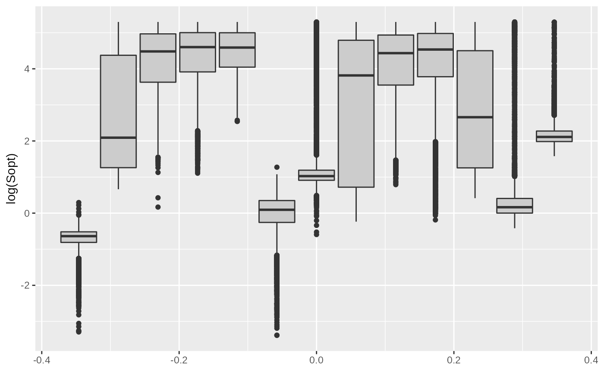
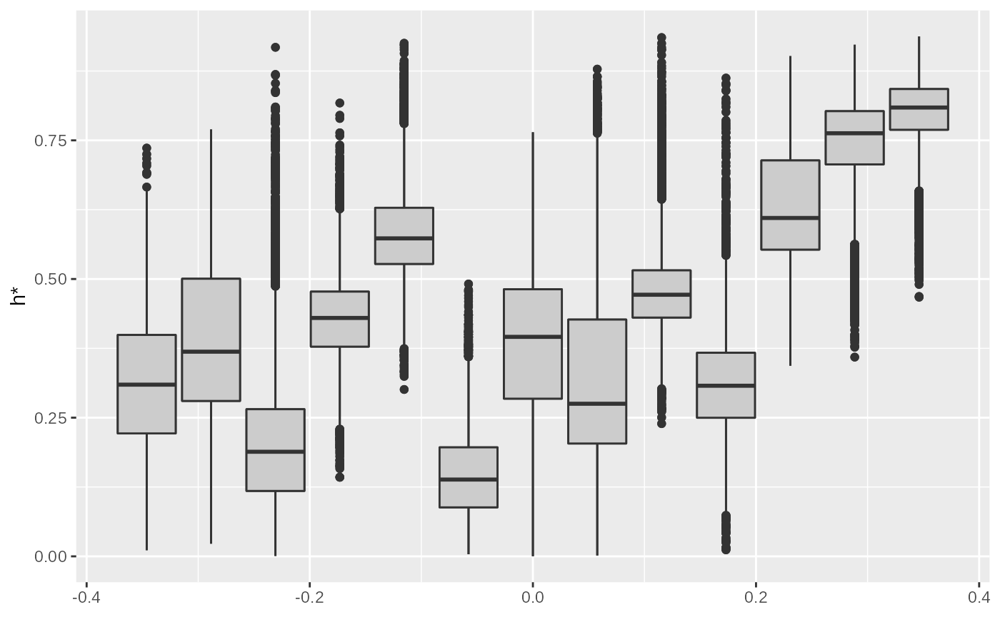
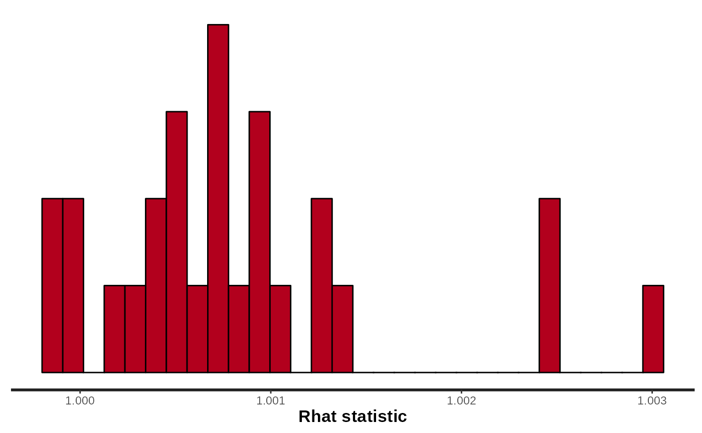
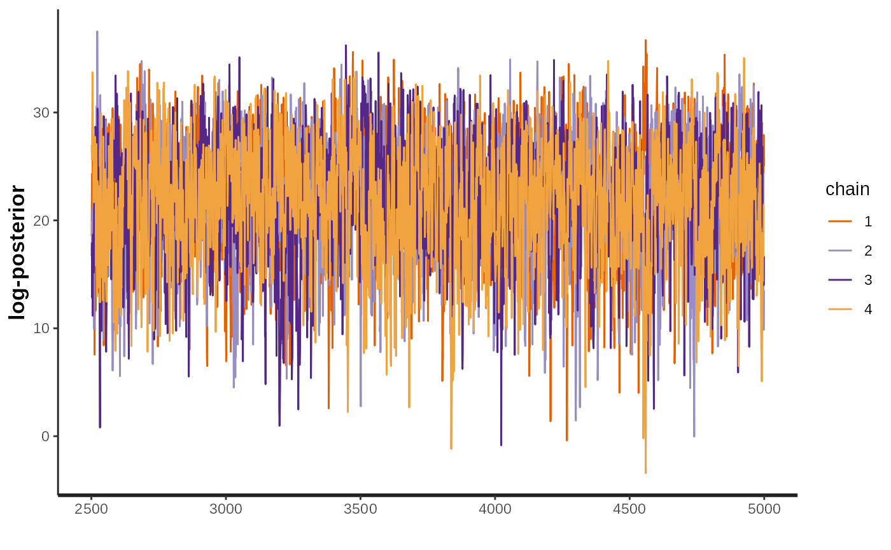
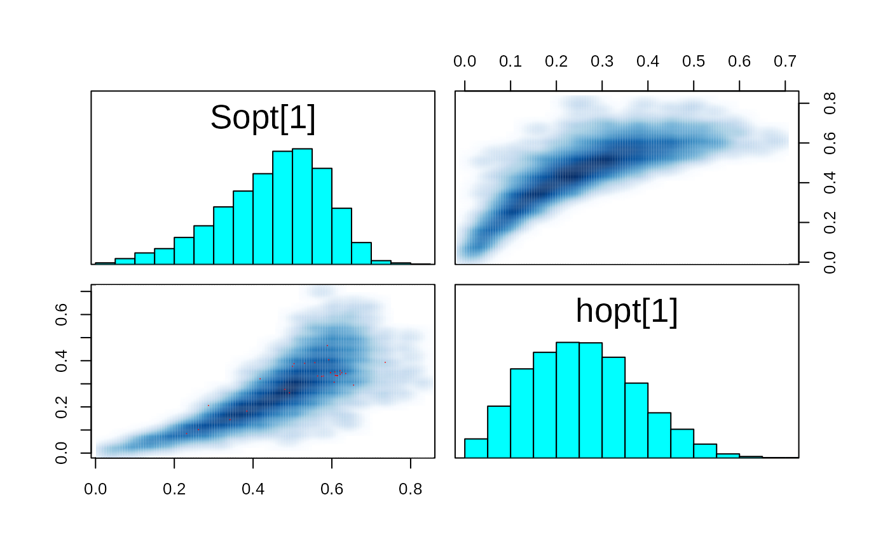

Hierarchical Stock Recruitment Analysis
Stan program for Hierarchical Stock-recruitment analysis (with covariates Latitude) Chapter 9 - section 9.3
hierarchical-stock-recruitment.Rmd
library(hbm4ecology)
library(rstan)
#> Loading required package: StanHeaders
#> Loading required package: ggplot2
#> rstan (Version 2.21.5, GitRev: 2e1f913d3ca3)
#> For execution on a local, multicore CPU with excess RAM we recommend calling
#> options(mc.cores = parallel::detectCores()).
#> To avoid recompilation of unchanged Stan programs, we recommend calling
#> rstan_options(auto_write = TRUE)
library(tidyverse)
#> ── Attaching packages ─────────────────────────────────────── tidyverse 1.3.1 ──
#> ✔ tibble 3.1.7 ✔ dplyr 1.0.9
#> ✔ tidyr 1.2.0 ✔ stringr 1.4.0
#> ✔ readr 2.1.2 ✔ forcats 0.5.1
#> ✔ purrr 0.3.4
#> ── Conflicts ────────────────────────────────────────── tidyverse_conflicts() ──
#> ✖ tidyr::extract() masks rstan::extract()
#> ✖ dplyr::filter() masks stats::filter()
#> ✖ dplyr::lag() masks stats::lag()This article develops a hierarchical extension of the Ricker Stock Recruitment model. The data and models are based on a published paper by Pr{'{e}}vost et al. Prévost et al. (2003); but see also Prévost, Chaput, and (Ed.) (2001).
We show that the hierarchical assemblage of several salmon populations which we model as exchangeable units appears as the working solution to transfer information and borrow strength from data-rich to data-poor situations. The data structure is sophisticated with Normal latent vectors, and the probabilistic structures have to be designed conditionally on some available covariates, namely the latitude and the riverine wetted area accessible to salmon.
Data
data("SRSalmon")The analysis of stock and recruitment (SR) relationships is the most widely used approach for deriving Biological Reference Points in fisheries sciences. It is particularly well suited for anadromous salmonid species for which the recruitment of juveniles in freshwater is more easily measured than the recruitment of marine species. SR relationships are critical for setting reference points for the management of salmon populations, such as the spawning target \(S^{\ast}\), a biological reference point for the number of spawners which are necessary to guarantee an optimal sustainable exploitation, or the maximum sustainable exploitation rate \(h^{\ast}\).
tibble(
River = SRSalmon$name_riv,
Country = SRSalmon$country_riv,
Latitude = SRSalmon$lat,
`Area accessible to salmon` = SRSalmon$area
) %>% knitr::kable()| River | Country | Latitude | Area accessible to salmon |
|---|---|---|---|
| Nivelle | France | 43.50000 | 320995 |
| Oir | France | 48.50000 | 48000 |
| Frome | England | 50.50000 | 876420 |
| Dee | England | 53.00000 | 6170000 |
| Burrishoole | Ireland | 53.98515 | 155000 |
| Lune | England | 54.50000 | 4230000 |
| Bush | N. Ireland | 55.00000 | 845500 |
| Mourne | N. Ireland | 55.00000 | 10360560 |
| Faughan | N. Ireland | 55.00000 | 882380 |
| Girnock Burn | Scotland | 57.00000 | 58764 |
| North Esk | Scotland | 57.00000 | 2100000 |
| Laerdalselva | Norway | 61.00000 | 704000 |
| Ellidaar | Iceland | 64.00000 | 199711 |

Location of the 13 index rivers with available stock-recruitment datasets for A. salmon (from Prévost et al. (2003)).
There are several hundreds of salmon stocks in the northeast Atlantic
area, each having its own characteristics with regard to the size and
productivity of the salmon populations. But resources to collect SR data
are limited and suitable SR series (both in terms of length and
reliability of observations) such as the ones of SRSalmon
are only available for a handful of monitored rivers spread throughout
the European area of distribution of the species. These so-called
index rivers are a representative sample from the salmon rivers
located in western Europe and under the influence of the Gulf Stream.
This sample covers a broad area including Spain, France, UK, Ireland,
Norway, the western coast of Sweden and the southwestern coast of
Iceland. The collection and pre-processing procedures used to obtain the
data ready for SR analysis presented in Table
are described in detail in Crozier et al. (2003) or Prévost et al. (2003). Here, hierarchical modeling will
be used to address two questions:
Model without covariates
Ricker model with lognormal errors and management related parametrization
- \(\log(R_{k,t}) = h_{k}^{*} + \log(\frac{S_{k,t}}{1-h^{*}{t}}) - \frac{h^{*}_{k}}{S^{*}_{k}}S_{k,t} + \epsilon_{k,t}\)
- \(\epsilon_{k,t} \overset{iid}{\sim} Normal(0, \sigma_k^2)\)
Defining priors for the model
- \(h_k^* \sim Beta(1,1)\)
- \(\tau = \sigma^{-2} \sim Gamma(p = 10^{-3},q = 10^{-3})\) with \(\sigma_k = k\), \(\forall k\)
With two different elicitation for \(S^*_k\):
A more refined gamma elicitation:
- \(\mu_{S^*} = 40 \text{eggs/$m^2$}\)
- \(CV_{S^*} = 1\)
- \(a = CV_{S^*}^{-2}\)
- \(b = \mu_{S^*}^{-1}CV_{S^*}^{-2}\)
- \(S_k^* \sim Gamma(a,b) \mathbf{1}_{S_k^* < 200}\)
A simple uniform:
- \(S_k^* \sim Uniform(0,200)\)

Directed acyclic graph of the stock recruitment model with covariates
Writing the model in stan
hsr_model_stan <- "
data {
int n_riv; // Number of rivers
int n_obs[n_riv]; // Number of observations by rivers
int n; // Total number of observations
int riv[n]; // River membership (indices k)
vector[n] S; // Stock data
vector[n] R; // Recruitment data
}
parameters {
vector<lower=0, upper=200>[n_riv] Sopt;
vector<lower=0, upper=1>[n_riv] hopt;
real<lower=0> tau;
}
transformed parameters {
vector<lower=0>[n_riv] alpha;
vector<lower=0>[n_riv] beta ;
real<lower=0> sigma;
// real Copt;
// real Ropt;
vector[n] LogR;
// real Slope;
for (k in 1:n_riv) {
alpha[k] = exp(hopt[k])/(1-hopt[k]) ;
beta[k] = hopt[k]/Sopt[k] ;
}
sigma = tau^-0.5 ;
// Copt = hopt*Sopt/(1-hopt);
// Ropt = Sopt + Copt;
// Slope = exp(alpha);
for (t in 1:n) {
LogR[t] = log(S[t]) + log(alpha[riv[t]]) - beta[riv[t]]*S[t] ; // LogR[t] is the logarithm of the Ricker function
}
}
model {
tau ~ gamma(.001, .001) ; // Diffuse prior for the variance
for (k in 1:n_riv) {
hopt[k] ~ beta(1,1) ;
Sopt[k] ~ uniform(0, 200) ;
}
//
log(R) ~ normal(LogR, sigma) ;
}
"
data("SRSalmon")
# data <- list(
#
# n_riv = 13,
#
# n_obs = c(12,14,12,9,12,7,13,13,11,12,6,8,10),
#
# n = 139,
#
# riv = c(
# 1, 1, 1, 1, 1, 1, 1, 1, 1, 1, 1, 1,
# 2, 2, 2, 2, 2, 2, 2, 2, 2, 2, 2, 2, 2, 2,
# 3, 3, 3, 3, 3, 3, 3, 3, 3, 3, 3, 3,
# 4, 4, 4, 4, 4, 4, 4, 4, 4,
# 5, 5, 5, 5, 5, 5, 5, 5, 5, 5, 5, 5,
# 6, 6, 6, 6, 6, 6, 6,
# 7, 7, 7, 7, 7, 7, 7, 7, 7, 7, 7, 7, 7,
# 8, 8, 8, 8, 8, 8, 8, 8, 8, 8, 8, 8, 8,
# 9, 9, 9, 9, 9, 9, 9, 9, 9, 9, 9,
# 10, 10, 10, 10, 10, 10, 10, 10, 10, 10, 10, 10,
# 11, 11, 11, 11, 11, 11,
# 12, 12, 12, 12, 12, 12, 12, 12,
# 13, 13, 13, 13, 13, 13, 13, 13, 13, 13),
#
# S = c(0.957, 0.501, 2.286, 1.481, 1.596, 2.679, 2.323, 1.645, 2.210, 3.764, 2.470, 1.391,
# 12.956, 12.084, 10.523, 2.762, 8.278, 6.943, 5.135, 1.540, 2.262, 3.437, 8.305, 5.231, 7.889, 1.621,
# 5.785, 6.504, 7.325, 10.052, 11.969, 8.660, 5.192, 2.354, 2.494, 3.172, 2.887, 2.921,
# 2.399, 3.793, 0.989, 1.621, 1.538, 1.822, 3.872, 1.913, 2.364,
# 4.059, 7.377, 8.705, 6.032, 6.159, 7.653, 3.477, 7.250, 4.134, 6.441, 6.062, 6.013,
# 2.199, 1.844, 2.364, 1.395, 2.979, 2.388, 2.080,
# 1.384, 3.584, 5.665, 4.057, 5.441, 1.254, 2.886, 3.513, 3.040, 3.548, 2.661, 1.727, 1.833,
# 0.296, 1.284, 0.992, 0.366, 1.193, 1.496, 1.818, 1.258, 1.169, 2.813, 3.136, 1.189, 1.414,
# 3.914, 16.788, 9.091, 1.678, 5.970, 15.327, 11.944, 7.955, 13.640, 16.008, 24.593,
# 4.765, 2.467, 3.454, 9.036, 9.206, 3.540, 2.382, 4.680, 2.876, 1.021, 3.046, 5.428,
# 11.381, 11.425, 18.308, 14.920, 17.584, 17.733,
# 6.331, 5.269, 6.369, 4.913, 6.129, 5.782, 5.383, 2.376,
# 37.010, 37.303, 28.337, 16.790, 37.955, 42.157, 32.309, 34.869, 24.022, 31.268),
#
# R = c(2.647, 0.444, 1.801, 0.573, 0.356, 0.390, 3.598, 2.357, 2.026, 0.665, 0.834, 1.433,
# 8.247, 1.328, 2.744, 4.511, 5.174, 0.846, 4.278, 1.237, 3.429, 4.491, 5.440, 2.797, 5.997, 0.442,
# 13.278, 13.266, 9.062, 5.269, 2.919, 3.467, 4.080, 3.757, 3.828, 4.397, 4.640, 5.370,
# 2.617, 3.141, 4.205, 3.655, 3.898, 3.333, 2.792, 3.877, 3.290,
# 15.226, 27.525, 8.615, 16.634, 13.926, 16.805, 17.668, 25.368, 12.232, 18.723, 16.516, 21.778,
# 5.114, 5.145, 4.207, 3.491, 3.412, 3.759, 4.248,
# 17.341, 6.301, 11.328, 14.334, 15.589, 19.808, 12.307, 9.313, 6.717, 10.268, 18.339, 5.982, 5.817,
# 3.727, 4.675, 5.681, 3.932, 3.653, 8.789, 9.800, 3.715, 4.419, 3.435, 2.991, 4.184, 2.309,
# 18.657, 47.897, 37.326, 24.859, 42.626, 50.024, 42.996, 62.642, 76.854, 26.009, 14.744,
# 11.766, 3.594, 8.026, 6.119, 7.735, 7.152, 5.919, 9.419, 6.065, 4.016, 10.110, 4.438,
# 20.154, 20.791, 26.458, 19.724, 16.823, 21.693,
# 15.323, 13.202, 15.969, 17.781, 18.242, 16.253, 10.899, 5.724,
# 150.747, 108.681, 104.854, 110.264, 111.579, 139.799, 124.208, 85.049, 73.261, 71.534)
#
# )
#options(mc.cores = parallel::detectCores())
# Number iteration for the "warm up" phase
n_warm <- 2500
# Number iteration for inferences
n_iter <- 5000
n_thin <- 1
# Number of chains
n_chains <- 4
#STAN_model_SRMargaree_Ricker_LogN_Management <-
# STAN_model_SRMargaree_Ricker_LogN_Management.stan
# ------------------------------------------------------------------------------------
# HMC config.
# ------------------------------------------------------------------------------------
# Run model
# ------------------------------------------------------------------------------------
# Load/check model, load data and inits
# model_code <- stanc(file = "./STAN_SRMargaree_Ricker_LogN_Management.stan")
model_name <-"HSR_Ricker_LogN_Management"
sm <- stan_model(model_code = hsr_model_stan,
model_name = model_name
)
#> Trying to compile a simple C file
#> Running /usr/lib/R/bin/R CMD SHLIB foo.c
#> gcc -I"/usr/share/R/include" -DNDEBUG -I"/home/stc/R/x86_64-pc-linux-gnu-library/4.2/Rcpp/include/" -I"/home/stc/R/x86_64-pc-linux-gnu-library/4.2/RcppEigen/include/" -I"/home/stc/R/x86_64-pc-linux-gnu-library/4.2/RcppEigen/include/unsupported" -I"/home/stc/R/x86_64-pc-linux-gnu-library/4.2/BH/include" -I"/home/stc/R/x86_64-pc-linux-gnu-library/4.2/StanHeaders/include/src/" -I"/home/stc/R/x86_64-pc-linux-gnu-library/4.2/StanHeaders/include/" -I"/home/stc/R/x86_64-pc-linux-gnu-library/4.2/RcppParallel/include/" -I"/home/stc/R/x86_64-pc-linux-gnu-library/4.2/rstan/include" -DEIGEN_NO_DEBUG -DBOOST_DISABLE_ASSERTS -DBOOST_PENDING_INTEGER_LOG2_HPP -DSTAN_THREADS -DBOOST_NO_AUTO_PTR -include '/home/stc/R/x86_64-pc-linux-gnu-library/4.2/StanHeaders/include/stan/math/prim/mat/fun/Eigen.hpp' -D_REENTRANT -DRCPP_PARALLEL_USE_TBB=1 -fpic -g -O2 -fdebug-prefix-map=/build/r-base-kt0bjq/r-base-4.2.0=. -fstack-protector-strong -Wformat -Werror=format-security -Wdate-time -D_FORTIFY_SOURCE=2 -c foo.c -o foo.o
#> In file included from /home/stc/R/x86_64-pc-linux-gnu-library/4.2/RcppEigen/include/Eigen/Core:88,
#> from /home/stc/R/x86_64-pc-linux-gnu-library/4.2/RcppEigen/include/Eigen/Dense:1,
#> from /home/stc/R/x86_64-pc-linux-gnu-library/4.2/StanHeaders/include/stan/math/prim/mat/fun/Eigen.hpp:13,
#> from <command-line>:
#> /home/stc/R/x86_64-pc-linux-gnu-library/4.2/RcppEigen/include/Eigen/src/Core/util/Macros.h:628:1: error: unknown type name ‘namespace’
#> 628 | namespace Eigen {
#> | ^~~~~~~~~
#> /home/stc/R/x86_64-pc-linux-gnu-library/4.2/RcppEigen/include/Eigen/src/Core/util/Macros.h:628:17: error: expected ‘=’, ‘,’, ‘;’, ‘asm’ or ‘__attribute__’ before ‘{’ token
#> 628 | namespace Eigen {
#> | ^
#> In file included from /home/stc/R/x86_64-pc-linux-gnu-library/4.2/RcppEigen/include/Eigen/Dense:1,
#> from /home/stc/R/x86_64-pc-linux-gnu-library/4.2/StanHeaders/include/stan/math/prim/mat/fun/Eigen.hpp:13,
#> from <command-line>:
#> /home/stc/R/x86_64-pc-linux-gnu-library/4.2/RcppEigen/include/Eigen/Core:96:10: fatal error: complex: No such file or directory
#> 96 | #include <complex>
#> | ^~~~~~~~~
#> compilation terminated.
#> make: *** [/usr/lib/R/etc/Makeconf:168: foo.o] Error 1
params<-c("Sopt","hopt","tau")
# Inferences
fit <- sampling(object = sm,
data = SRSalmon,
pars = NA, #params,
chains = n_chains,
iter = n_iter,
warmup = n_warm,
thin = n_thin,
control = list("adapt_delta" = .85)
#control = list("max_treedepth" = 12)
)
#>
#> SAMPLING FOR MODEL 'HSR_Ricker_LogN_Management' NOW (CHAIN 1).
#> Chain 1:
#> Chain 1: Gradient evaluation took 4.9e-05 seconds
#> Chain 1: 1000 transitions using 10 leapfrog steps per transition would take 0.49 seconds.
#> Chain 1: Adjust your expectations accordingly!
#> Chain 1:
#> Chain 1:
#> Chain 1: Iteration: 1 / 5000 [ 0%] (Warmup)
#> Chain 1: Iteration: 500 / 5000 [ 10%] (Warmup)
#> Chain 1: Iteration: 1000 / 5000 [ 20%] (Warmup)
#> Chain 1: Iteration: 1500 / 5000 [ 30%] (Warmup)
#> Chain 1: Iteration: 2000 / 5000 [ 40%] (Warmup)
#> Chain 1: Iteration: 2500 / 5000 [ 50%] (Warmup)
#> Chain 1: Iteration: 2501 / 5000 [ 50%] (Sampling)
#> Chain 1: Iteration: 3000 / 5000 [ 60%] (Sampling)
#> Chain 1: Iteration: 3500 / 5000 [ 70%] (Sampling)
#> Chain 1: Iteration: 4000 / 5000 [ 80%] (Sampling)
#> Chain 1: Iteration: 4500 / 5000 [ 90%] (Sampling)
#> Chain 1: Iteration: 5000 / 5000 [100%] (Sampling)
#> Chain 1:
#> Chain 1: Elapsed Time: 5.12534 seconds (Warm-up)
#> Chain 1: 4.23296 seconds (Sampling)
#> Chain 1: 9.3583 seconds (Total)
#> Chain 1:
#>
#> SAMPLING FOR MODEL 'HSR_Ricker_LogN_Management' NOW (CHAIN 2).
#> Chain 2:
#> Chain 2: Gradient evaluation took 3.4e-05 seconds
#> Chain 2: 1000 transitions using 10 leapfrog steps per transition would take 0.34 seconds.
#> Chain 2: Adjust your expectations accordingly!
#> Chain 2:
#> Chain 2:
#> Chain 2: Iteration: 1 / 5000 [ 0%] (Warmup)
#> Chain 2: Iteration: 500 / 5000 [ 10%] (Warmup)
#> Chain 2: Iteration: 1000 / 5000 [ 20%] (Warmup)
#> Chain 2: Iteration: 1500 / 5000 [ 30%] (Warmup)
#> Chain 2: Iteration: 2000 / 5000 [ 40%] (Warmup)
#> Chain 2: Iteration: 2500 / 5000 [ 50%] (Warmup)
#> Chain 2: Iteration: 2501 / 5000 [ 50%] (Sampling)
#> Chain 2: Iteration: 3000 / 5000 [ 60%] (Sampling)
#> Chain 2: Iteration: 3500 / 5000 [ 70%] (Sampling)
#> Chain 2: Iteration: 4000 / 5000 [ 80%] (Sampling)
#> Chain 2: Iteration: 4500 / 5000 [ 90%] (Sampling)
#> Chain 2: Iteration: 5000 / 5000 [100%] (Sampling)
#> Chain 2:
#> Chain 2: Elapsed Time: 5.17036 seconds (Warm-up)
#> Chain 2: 3.65513 seconds (Sampling)
#> Chain 2: 8.82549 seconds (Total)
#> Chain 2:
#>
#> SAMPLING FOR MODEL 'HSR_Ricker_LogN_Management' NOW (CHAIN 3).
#> Chain 3:
#> Chain 3: Gradient evaluation took 3.3e-05 seconds
#> Chain 3: 1000 transitions using 10 leapfrog steps per transition would take 0.33 seconds.
#> Chain 3: Adjust your expectations accordingly!
#> Chain 3:
#> Chain 3:
#> Chain 3: Iteration: 1 / 5000 [ 0%] (Warmup)
#> Chain 3: Iteration: 500 / 5000 [ 10%] (Warmup)
#> Chain 3: Iteration: 1000 / 5000 [ 20%] (Warmup)
#> Chain 3: Iteration: 1500 / 5000 [ 30%] (Warmup)
#> Chain 3: Iteration: 2000 / 5000 [ 40%] (Warmup)
#> Chain 3: Iteration: 2500 / 5000 [ 50%] (Warmup)
#> Chain 3: Iteration: 2501 / 5000 [ 50%] (Sampling)
#> Chain 3: Iteration: 3000 / 5000 [ 60%] (Sampling)
#> Chain 3: Iteration: 3500 / 5000 [ 70%] (Sampling)
#> Chain 3: Iteration: 4000 / 5000 [ 80%] (Sampling)
#> Chain 3: Iteration: 4500 / 5000 [ 90%] (Sampling)
#> Chain 3: Iteration: 5000 / 5000 [100%] (Sampling)
#> Chain 3:
#> Chain 3: Elapsed Time: 5.57654 seconds (Warm-up)
#> Chain 3: 5.33588 seconds (Sampling)
#> Chain 3: 10.9124 seconds (Total)
#> Chain 3:
#>
#> SAMPLING FOR MODEL 'HSR_Ricker_LogN_Management' NOW (CHAIN 4).
#> Chain 4:
#> Chain 4: Gradient evaluation took 3.4e-05 seconds
#> Chain 4: 1000 transitions using 10 leapfrog steps per transition would take 0.34 seconds.
#> Chain 4: Adjust your expectations accordingly!
#> Chain 4:
#> Chain 4:
#> Chain 4: Iteration: 1 / 5000 [ 0%] (Warmup)
#> Chain 4: Iteration: 500 / 5000 [ 10%] (Warmup)
#> Chain 4: Iteration: 1000 / 5000 [ 20%] (Warmup)
#> Chain 4: Iteration: 1500 / 5000 [ 30%] (Warmup)
#> Chain 4: Iteration: 2000 / 5000 [ 40%] (Warmup)
#> Chain 4: Iteration: 2500 / 5000 [ 50%] (Warmup)
#> Chain 4: Iteration: 2501 / 5000 [ 50%] (Sampling)
#> Chain 4: Iteration: 3000 / 5000 [ 60%] (Sampling)
#> Chain 4: Iteration: 3500 / 5000 [ 70%] (Sampling)
#> Chain 4: Iteration: 4000 / 5000 [ 80%] (Sampling)
#> Chain 4: Iteration: 4500 / 5000 [ 90%] (Sampling)
#> Chain 4: Iteration: 5000 / 5000 [100%] (Sampling)
#> Chain 4:
#> Chain 4: Elapsed Time: 4.75572 seconds (Warm-up)
#> Chain 4: 4.64832 seconds (Sampling)
#> Chain 4: 9.40405 seconds (Total)
#> Chain 4:
#> Warning: There were 24 divergent transitions after warmup. See
#> https://mc-stan.org/misc/warnings.html#divergent-transitions-after-warmup
#> to find out why this is a problem and how to eliminate them.
#> Warning: Examine the pairs() plot to diagnose sampling problems
stan_rhat(fit,pars = params )
#> `stat_bin()` using `bins = 30`. Pick better value with `binwidth`.
summary(fit)
#> $summary
#> mean se_mean sd 2.5% 25%
#> Sopt[1] 0.511159292 0.0024839738 0.123607523 0.2199936686 0.442778998
#> Sopt[2] 1.110653696 0.0070873412 0.463765881 0.2288143883 0.777923128
#> Sopt[3] 14.603978229 1.5075164229 36.781904564 1.9603195275 2.498583015
#> Sopt[4] 70.376332116 1.5715599715 65.111409912 1.0736401360 2.886960194
#> Sopt[5] 90.293640719 0.9164972126 59.574035136 4.8573234933 34.655027376
#> Sopt[6] 98.515795816 0.6644282765 58.211078691 4.3135358158 47.398140537
#> Sopt[7] 56.649669621 1.2208472472 62.532251028 2.0756123742 3.842873402
#> Sopt[8] 8.175075328 1.2816092617 28.937796713 0.8101423230 1.005233935
#> Sopt[9] 9.576663346 0.4375169468 8.651723291 5.9411541144 7.270120491
#> Sopt[10] 48.852689127 1.3440890489 60.538533659 2.5062262935 3.626827111
#> Sopt[11] 94.224468979 0.7262823217 58.805994263 8.2764643173 40.562924737
#> Sopt[12] 102.565869463 0.6708808093 56.620954632 9.0345684669 54.169527988
#> Sopt[13] 106.236155311 0.8513913554 52.602994343 22.9450933953 59.488274230
#> hopt[1] 0.311454785 0.0019351333 0.126006909 0.0803506373 0.218192775
#> hopt[2] 0.149165651 0.0011305692 0.080290237 0.0230157826 0.088347542
#> hopt[3] 0.360595390 0.0058955805 0.158525370 0.0295154452 0.266297507
#> hopt[4] 0.314068421 0.0056873464 0.167731624 0.0813599082 0.199812655
#> hopt[5] 0.481417712 0.0015921191 0.082240081 0.3508965956 0.429261884
#> hopt[6] 0.305294132 0.0011645749 0.089811957 0.1275168690 0.247921472
#> hopt[7] 0.623609882 0.0023767386 0.100666927 0.4717263301 0.546805382
#> hopt[8] 0.744744297 0.0031967230 0.085649820 0.5142614680 0.711309951
#> hopt[9] 0.799810710 0.0014225227 0.061093499 0.6535370525 0.766129673
#> hopt[10] 0.382176491 0.0033421280 0.137068716 0.1592249191 0.275189116
#> hopt[11] 0.201437500 0.0016934614 0.121793156 0.0220402489 0.116764138
#> hopt[12] 0.428493470 0.0009448883 0.076841415 0.2751258521 0.378325976
#> hopt[13] 0.578947001 0.0013745513 0.083988028 0.4360949949 0.524323591
#> tau 3.716786106 0.0137347653 0.568288597 2.6958245395 3.317785992
#> alpha[1] 2.128246176 0.0094303505 0.740733073 1.1783479872 1.590963584
#> alpha[2] 1.393842096 0.0034602124 0.268582576 1.0473891709 1.198228219
#> alpha[3] 2.503987674 0.0287259507 1.000419652 1.0612794827 1.778818113
#> alpha[4] 2.385983787 0.0513550153 1.621219487 1.1808337676 1.526110058
#> alpha[5] 3.319197803 0.0288734279 1.343706520 2.1881574519 2.691467814
#> alpha[6] 2.030413539 0.0105392999 0.714120074 1.3020355248 1.703757332
#> alpha[7] 5.697234013 0.0655861739 2.882654697 3.0339553183 3.812324129
#> alpha[8] 9.324716499 0.0879848307 3.435522833 3.4430106252 7.054823836
#> alpha[9] 12.374649130 0.0718010837 4.451639103 5.5484380478 9.199214923
#> alpha[10] 2.631158081 0.0252051998 1.119786697 1.3946674735 1.816721721
#> alpha[11] 1.659353604 0.0142761456 1.021835967 1.0453241339 1.272428321
#> alpha[12] 2.780723446 0.0108918421 0.695858169 1.8164482448 2.348238278
#> alpha[13] 4.611807017 0.0385973202 2.086789117 2.7427593273 3.551397052
#> beta[1] 0.592740150 0.0021404716 0.160348637 0.3013501634 0.479182465
#> beta[2] 0.129277436 0.0003565638 0.029488434 0.0763040987 0.108857083
#> beta[3] 0.128579297 0.0026775628 0.070047926 0.0002950006 0.088263353
#> beta[4] 0.108387062 0.0068919112 0.193782814 0.0006931630 0.001745157
#> beta[5] 0.018825887 0.0008639969 0.036839858 0.0021350354 0.003175807
#> beta[6] 0.012324059 0.0009093204 0.047820832 0.0010012474 0.001958077
#> beta[7] 0.098449972 0.0030682652 0.123498592 0.0027923432 0.005299873
#> beta[8] 0.616998538 0.0092923372 0.260434776 0.0041924614 0.492923272
#> beta[9] 0.096158197 0.0006001426 0.027997392 0.0377978459 0.078171510
#> beta[10] 0.071539536 0.0020005709 0.079075043 0.0011630195 0.003010232
#> beta[11] 0.006691974 0.0002369640 0.015148677 0.0002027907 0.001038081
#> beta[12] 0.009500077 0.0003483265 0.018833026 0.0017590514 0.002746637
#> beta[13] 0.008499813 0.0001594574 0.008150997 0.0025212954 0.003533642
#> sigma 0.523291800 0.0009963265 0.040451924 0.4510265368 0.494751749
#> LogR[1] 0.091267386 0.0028294509 0.194349582 -0.2488898636 -0.047980111
#> LogR[2] -0.285640396 0.0036063881 0.249235760 -0.7121927555 -0.468670165
#> LogR[3] 0.174271180 0.0017255506 0.166759897 -0.1529246224 0.063546159
#> LogR[4] 0.217340971 0.0019633758 0.151650493 -0.0720335849 0.113699871
#> LogR[5] 0.223958817 0.0018390466 0.147122174 -0.0590944877 0.122834273
#> LogR[6] 0.099964326 0.0021475132 0.205579680 -0.3015115595 -0.035760940
#> LogR[7] 0.168395683 0.0017540755 0.169796971 -0.1635549111 0.056145869
#> LogR[8] 0.225154435 0.0017932704 0.145859810 -0.0562940601 0.125815100
#> LogR[9] 0.185508382 0.0016782304 0.161028344 -0.1333616378 0.077956574
#> LogR[10] -0.203120105 0.0040800830 0.351283695 -0.8930335031 -0.439642486
#> LogR[11] 0.142621578 0.0018921995 0.183268732 -0.2155594924 0.021469780
#> LogR[12] 0.207992962 0.0020876113 0.156623987 -0.0847656557 0.100272027
#> LogR[13] 1.202037784 0.0029299154 0.276304918 0.6534096065 1.019542776
#> LogR[14] 1.245090970 0.0026525940 0.253352325 0.7477353066 1.076939407
#> LogR[15] 1.308574121 0.0021908655 0.213839256 0.8896137267 1.164477956
#> LogR[16] 0.974288016 0.0017523112 0.129839217 0.7602904009 0.880519646
#> LogR[17] 1.358840020 0.0016695316 0.163120075 1.0447985604 1.250722327
#> LogR[18] 1.355557961 0.0014828490 0.139265352 1.0878342682 1.262909884
#> LogR[19] 1.287637450 0.0014298678 0.120694423 1.0606290855 1.206874658
#> LogR[20] 0.548092404 0.0020389836 0.147844937 0.3210966474 0.438119972
#> LogR[21] 0.839221057 0.0018626351 0.136345499 0.6225429266 0.739777122
#> LogR[22] 1.105669690 0.0016226572 0.123328301 0.8930329157 1.017862678
#> LogR[23] 1.358605879 0.0016742471 0.163664363 1.0433054402 1.249751585
#> LogR[24] 1.293749437 0.0014258849 0.121163387 1.0659110506 1.212150348
#> LogR[25] 1.360996933 0.0016071613 0.155519465 1.0603574913 1.258419430
#> LogR[26] 0.588881758 0.0020183318 0.146445695 0.3632738394 0.480121608
#> LogR[27] 1.849714020 0.0016131188 0.147982554 1.5587073307 1.757145569
#> LogR[28] 1.874414516 0.0034361023 0.164870055 1.5571424548 1.763193711
#> LogR[29] 1.887726696 0.0055689826 0.198541417 1.5156486094 1.750255692
#> LogR[30] 1.853569417 0.0127926006 0.357123969 1.2272596846 1.601500728
#> LogR[31] 1.781631259 0.0179057132 0.482871299 0.9571829220 1.439560911
#> LogR[32] 1.883494902 0.0090929642 0.270996193 1.3990151701 1.691409482
#> LogR[33] 1.817812162 0.0013775597 0.146146849 1.5394156452 1.718656292
#> LogR[34] 1.391717236 0.0079835736 0.257977496 0.9045143335 1.206480343
#> LogR[35] 1.431487973 0.0076110664 0.249939207 0.9591287320 1.251500747
#> LogR[36] 1.584785666 0.0058111245 0.213116314 1.1883676256 1.429244005
#> LogR[37] 1.527286363 0.0065673754 0.228115018 1.0991258529 1.361924357
#> LogR[38] 1.534622789 0.0064772602 0.226285404 1.1096704714 1.370168887
#> LogR[39] 1.346030150 0.0017790257 0.175938372 1.0036951820 1.229532644
#> LogR[40] 1.653043864 0.0102924360 0.343159973 0.7770818598 1.522361026
#> LogR[41] 0.612742976 0.0092046694 0.302687543 0.1530308996 0.405265650
#> LogR[42] 1.038346543 0.0049164477 0.214391709 0.6457684745 0.889388274
#> LogR[43] 0.994782297 0.0054699161 0.224162079 0.5932912911 0.838816083
#> LogR[44] 1.133452299 0.0036187951 0.194244403 0.7614897712 0.999742568
#> LogR[45] 1.665095193 0.0108337603 0.356437778 0.7537404348 1.537847673
#> LogR[46] 1.172326968 0.0030798125 0.187086540 0.8092146533 1.044582136
#> LogR[47] 1.335126812 0.0017088090 0.175080014 0.9928971058 1.219564212
#> LogR[48] 2.478400630 0.0023105141 0.168913192 2.1638178081 2.363930130
#> LogR[49] 3.013366751 0.0015371335 0.157096561 2.6958522461 2.909942942
#> LogR[50] 3.153896494 0.0023820624 0.177513619 2.7610132726 3.051610431
#> LogR[51] 2.837399148 0.0013036515 0.150464001 2.5434255989 2.735020184
#> LogR[52] 2.855844056 0.0012944623 0.150406436 2.5610387046 2.753564696
#> LogR[53] 3.044901482 0.0016706433 0.160328175 2.7148044430 2.941202812
#> LogR[54] 2.334590512 0.0027437605 0.179688366 2.0148329194 2.213563489
#> LogR[55] 2.998392055 0.0014828403 0.155810068 2.6846573295 2.895142710
#> LogR[56] 2.495297512 0.0022564732 0.167673758 2.1818357617 2.381748385
#> LogR[57] 2.895304537 0.0012963658 0.150798449 2.5991333800 2.792659110
#> LogR[58] 2.841795519 0.0013009249 0.150437279 2.5483266392 2.739338177
#> LogR[59] 2.834602001 0.0013055545 0.150485120 2.5407649808 2.732145088
#> LogR[60] 1.439540526 0.0021901459 0.199587398 1.0486676486 1.305506892
#> LogR[61] 1.267849981 0.0022222826 0.200768253 0.8734683295 1.133483094
#> LogR[62] 1.509859444 0.0021908027 0.199528457 1.1171316106 1.375650028
#> LogR[63] 0.994340774 0.0023253611 0.204282581 0.5947298068 0.857493695
#> LogR[64] 1.733512722 0.0022792317 0.202041869 1.3314092047 1.600594898
#> LogR[65] 1.519664763 0.0021917280 0.199545875 1.1269490144 1.385513219
#> LogR[66] 1.385372271 0.0021958500 0.199823375 0.9931219196 1.251589576
#> LogR[67] 1.833061396 0.0055662668 0.259423322 1.4247049951 1.642403757
#> LogR[68] 2.567973095 0.0019084297 0.157332237 2.2557188870 2.461377673
#> LogR[69] 2.820926102 0.0078638468 0.346963060 1.9968836875 2.619003115
#> LogR[70] 2.645370547 0.0031231101 0.186786628 2.2485195888 2.529271326
#> LogR[71] 2.802634869 0.0071878960 0.322095331 2.0411351958 2.615733348
#> LogR[72] 1.747220477 0.0059547579 0.272826692 1.3271039616 1.546168747
#> LogR[73] 2.420083141 0.0016002179 0.149205934 2.1338284539 2.317589566
#> LogR[74] 2.554953921 0.0017575146 0.154340789 2.2518172571 2.449002017
#> LogR[75] 2.456907900 0.0014172268 0.146745571 2.1760628483 2.356471637
#> LogR[76] 2.561421863 0.0018292753 0.155760947 2.2522218954 2.454860488
#> LogR[77] 2.361064916 0.0020234537 0.156929506 2.0604860184 2.253856752
#> LogR[78] 2.020700997 0.0045509214 0.225726111 1.6428984114 1.857071667
#> LogR[79] 2.069833470 0.0042411239 0.215930471 1.7021156118 1.914451642
#> LogR[80] 0.760212134 0.0104073239 0.323645181 0.0121371685 0.585674684
#> LogR[81] 1.617993608 0.0017015679 0.144780957 1.3291036098 1.522938787
#> LogR[82] 1.540144804 0.0040964448 0.178715779 1.1651232190 1.426096801
#> LogR[83] 0.929296116 0.0097634842 0.307329669 0.2233951115 0.761119105
#> LogR[84] 1.600631413 0.0024056654 0.152125212 1.2972133182 1.499928901
#> LogR[85] 1.640004592 0.0014643438 0.142261873 1.3611621734 1.544487222
#> LogR[86] 1.636273179 0.0040093778 0.175507156 1.3041730268 1.516877789
#> LogR[87] 1.613578523 0.0019017503 0.146526157 1.3204378563 1.517078026
#> LogR[88] 1.595116917 0.0025963901 0.154610388 1.2840367015 1.492969926
#> LogR[89] 1.458874167 0.0131558325 0.390291860 0.7921047243 1.192171463
#> LogR[90] 1.368280212 0.0161362883 0.469736251 0.5766748995 1.049196982
#> LogR[91] 1.599740882 0.0024373407 0.152524433 1.2949897381 1.498865045
#> LogR[92] 1.634226160 0.0013506422 0.140695047 1.3582043917 1.541549799
#> LogR[93] 3.440931177 0.0048748823 0.263624536 2.9080973512 3.267065780
#> LogR[94] 3.659095025 0.0031169892 0.214556870 3.2491216682 3.514164603
#> LogR[95] 3.785845235 0.0020572827 0.169788520 3.4476990219 3.672189983
#> LogR[96] 2.808983645 0.0061886175 0.316316821 2.1619615165 2.601773305
#> LogR[97] 3.665416982 0.0036864628 0.219810021 3.2230842069 3.519384424
#> LogR[98] 3.708533785 0.0023897286 0.188751363 3.3460212016 3.581512048
#> LogR[99] 3.784450046 0.0014403230 0.156119071 3.4735203064 3.677956574
#> LogR[100] 3.761596696 0.0026003996 0.184808144 3.3950918343 3.637481228
#> LogR[101] 3.754143336 0.0017035894 0.166650428 3.4280239943 3.642560226
#> LogR[102] 3.686522671 0.0027150050 0.200154636 3.3031329218 3.551900956
#> LogR[103] 3.290377802 0.0077455517 0.397898886 2.5405396250 3.020274335
#> LogR[104] 2.111580492 0.0014736721 0.154200024 1.8110454363 2.007458071
#> LogR[105] 1.617683647 0.0042478065 0.213922672 1.2275173717 1.466246619
#> LogR[106] 1.883604267 0.0024543543 0.168015530 1.5553905734 1.770221010
#> LogR[107] 2.445954194 0.0091943537 0.397929632 1.5736305347 2.153064501
#> LogR[108] 2.452431320 0.0095311575 0.410396227 1.5542627913 2.149239465
#> LogR[109] 1.902045614 0.0023163888 0.165161926 1.5790272076 1.791478890
#> LogR[110] 1.588702141 0.0044141758 0.218729660 1.1928235785 1.433233120
#> LogR[111] 2.099661926 0.0014381519 0.153018491 1.8030109904 1.996127868
#> LogR[112] 1.741821579 0.0034544051 0.192403186 1.3782447980 1.609322881
#> LogR[113] 0.838909518 0.0070896553 0.305694087 0.3509633030 0.607922880
#> LogR[114] 1.787088672 0.0031506382 0.184391057 1.4338877358 1.661721233
#> LogR[115] 2.194422984 0.0023012296 0.172365612 1.8505943002 2.078054560
#> LogR[116] 2.797174829 0.0023236983 0.200722178 2.4698698309 2.645183764
#> LogR[117] 2.800739021 0.0023187966 0.200483160 2.4737170535 2.648845679
#> LogR[118] 3.226212351 0.0021099090 0.190088895 2.9193139502 3.086259920
#> LogR[119] 3.044249231 0.0020639186 0.188188131 2.7323768257 2.900714618
#> LogR[120] 3.190708615 0.0020756110 0.188513996 2.8847207601 3.049551545
#> LogR[121] 3.198149424 0.0020815541 0.188787121 2.8927319072 3.057327174
#> LogR[122] 2.782858772 0.0019870209 0.187670555 2.4057590390 2.657188451
#> LogR[123] 2.609330243 0.0019906820 0.187805597 2.2327322616 2.482490659
#> LogR[124] 2.788482039 0.0019880882 0.187705217 2.4112355547 2.662811059
#> LogR[125] 2.542756432 0.0020062964 0.188326807 2.1642574513 2.415274901
#> LogR[126] 2.752351190 0.0019827316 0.187532040 2.3760492967 2.626370273
#> LogR[127] 2.697365756 0.0019808292 0.187474151 2.3215644883 2.571581027
#> LogR[128] 2.629652482 0.0019871929 0.187689020 2.2532090732 2.502713959
#> LogR[129] 1.840391775 0.0023022026 0.198663748 1.4533198381 1.706072112
#> LogR[130] 4.764843928 0.0015937109 0.168096720 4.4335767380 4.652068225
#> LogR[131] 4.770239089 0.0016052733 0.168547216 4.4378298153 4.657301368
#> LogR[132] 4.571543034 0.0017759923 0.170099336 4.2391803507 4.456970481
#> LogR[133] 4.146305477 0.0030666337 0.212949845 3.7700386265 4.004692998
#> LogR[134] 4.782024706 0.0016348548 0.169666067 4.4439288155 4.668486415
#> LogR[135] 4.851307988 0.0019497055 0.180500603 4.4788764333 4.736027691
#> LogR[136] 4.668959233 0.0015692188 0.165478217 4.3431453239 4.555944038
#> LogR[137] 4.723452065 0.0015440747 0.165814811 4.3987610265 4.611396298
#> LogR[138] 4.443021434 0.0021659476 0.181643017 4.0965740733 4.321109587
#> LogR[139] 4.645056920 0.0016052021 0.166092596 4.3186479528 4.531478797
#> lp__ 26.151540801 0.1758864607 5.230008177 14.8814059753 22.870386674
#> 50% 75% 97.5% n_eff Rhat
#> Sopt[1] 0.527347268 0.596796459 0.71163508 2476.2574 1.0014855
#> Sopt[2] 1.110352842 1.437116867 2.00645196 4281.8446 1.0001097
#> Sopt[3] 2.811447606 3.403028063 156.44465587 595.3116 1.0128112
#> Sopt[4] 57.105801017 126.005337938 192.49404651 1716.5335 1.0027918
#> Sopt[5] 87.505198009 141.389541485 194.52619586 4225.2435 1.0007602
#> Sopt[6] 98.326898797 149.465346232 194.21484800 7675.6485 1.0004809
#> Sopt[7] 25.018104358 104.147761482 191.12463490 2623.5266 1.0013679
#> Sopt[8] 1.172362011 1.455194324 123.72279217 509.8233 1.0100342
#> Sopt[9] 8.344362226 9.830216931 17.70965594 391.0349 1.0105579
#> Sopt[10] 10.438323755 90.618499440 187.57465499 2028.6527 1.0006322
#> Sopt[11] 91.334137522 145.386765826 194.95917532 6555.8989 1.0001098
#> Sopt[12] 102.164437935 151.356888662 196.12652524 7123.0114 1.0014124
#> Sopt[13] 104.151747959 151.933477948 195.00575641 3817.3542 1.0009342
#> hopt[1] 0.308744034 0.399301567 0.55652891 4240.0108 1.0005630
#> hopt[2] 0.139865233 0.201108392 0.32737502 5043.4901 1.0004828
#> hopt[3] 0.386072752 0.477291397 0.61453834 723.0102 1.0074706
#> hopt[4] 0.267548854 0.383642395 0.71182979 869.7823 1.0051362
#> hopt[5] 0.471853614 0.517545895 0.70921286 2668.1851 1.0007824
#> hopt[6] 0.304561944 0.361997924 0.47807694 5947.4863 1.0001331
#> hopt[7] 0.599045758 0.701618572 0.82877681 1793.9519 1.0015955
#> hopt[8] 0.763407864 0.802412040 0.86166836 717.8652 1.0080236
#> hopt[9] 0.808265355 0.843277119 0.89336431 1844.4699 1.0015113
#> hopt[10] 0.359558282 0.492585175 0.64960312 1682.0176 1.0004063
#> hopt[11] 0.187177229 0.261623728 0.50713738 5172.4365 1.0004834
#> hopt[12] 0.429631579 0.478395834 0.57665874 6613.4756 1.0000548
#> hopt[13] 0.570297229 0.623293468 0.78856782 3733.4715 1.0010156
#> tau 3.685876440 4.085312886 4.91581823 1711.9670 1.0009883
#> alpha[1] 1.969912508 2.481749641 3.93397973 6169.7533 1.0002259
#> alpha[2] 1.337137895 1.530567215 2.06254854 6024.9043 1.0005365
#> alpha[3] 2.396361625 3.083368104 4.79633399 1212.8738 1.0040847
#> alpha[4] 1.784088231 2.381118551 7.07122666 996.5932 1.0041229
#> alpha[5] 3.035072774 3.477853791 6.98927364 2165.7691 1.0006454
#> alpha[6] 1.949894522 2.251083525 3.09043557 4591.1233 1.0002545
#> alpha[7] 4.540121288 6.759853547 13.37736618 1931.7933 1.0017342
#> alpha[8] 9.068668327 11.290746202 17.11182380 1524.6497 1.0031708
#> alpha[9] 11.703737945 14.828533190 22.91292866 3843.9515 1.0001873
#> alpha[10] 2.237044197 3.225253625 5.46460564 1973.7417 1.0003016
#> alpha[11] 1.483522632 1.759316636 3.36915573 5123.1897 1.0002847
#> alpha[12] 2.694208191 3.093311243 4.20483655 4081.6784 1.0006139
#> alpha[13] 4.116316753 4.950963948 10.40637744 2923.0943 1.0011626
#> beta[1] 0.585964729 0.699963529 0.91885260 5611.9219 1.0000608
#> beta[2] 0.127773089 0.148035596 0.19118876 6839.5713 1.0009558
#> beta[3] 0.138559130 0.177447775 0.24641939 684.4020 1.0081598
#> beta[4] 0.004039332 0.122604427 0.64575369 790.5897 1.0059996
#> beta[5] 0.005204053 0.013573807 0.14365021 1818.0740 1.0011260
#> beta[6] 0.003064286 0.006268409 0.08857207 2765.6702 1.0017697
#> beta[7] 0.022260033 0.181965410 0.39341090 1620.0866 1.0014279
#> beta[8] 0.651637375 0.791155639 1.04620798 785.5033 1.0066321
#> beta[9] 0.096897851 0.114909821 0.14837317 2176.3373 1.0011254
#> beta[10] 0.031854148 0.134492199 0.24384770 1562.3236 1.0004434
#> beta[11] 0.001897301 0.004672608 0.05250445 4086.8112 1.0005546
#> beta[12] 0.004114472 0.007963476 0.05814378 2923.2575 1.0017168
#> beta[13] 0.005318303 0.010062752 0.03358768 2612.9555 1.0015860
#> sigma 0.520870324 0.549004388 0.60905174 1648.4470 1.0010389
#> LogR[1] 0.076938200 0.217439253 0.49839879 4718.0538 1.0007098
#> LogR[2] -0.305373808 -0.123982052 0.23820737 4776.1261 1.0005850
#> LogR[3] 0.172402320 0.284791630 0.50300847 9339.5905 1.0000983
#> LogR[4] 0.212964492 0.318193012 0.52310710 5965.9660 1.0007244
#> LogR[5] 0.222462064 0.323383549 0.51757868 6399.8649 1.0006720
#> LogR[6] 0.098276592 0.235718927 0.50264802 9164.0763 0.9999214
#> LogR[7] 0.166378445 0.280952424 0.50187487 9370.5116 1.0000743
#> LogR[8] 0.224048059 0.323497706 0.51558341 6615.7601 1.0006419
#> LogR[9] 0.183895835 0.292382897 0.50074351 9206.6464 1.0001527
#> LogR[10] -0.203016192 0.031943250 0.47879476 7412.7268 0.9998579
#> LogR[11] 0.141971771 0.264311138 0.50045201 9380.8658 0.9999951
#> LogR[12] 0.201183681 0.311141672 0.52893953 5628.8188 1.0007477
#> LogR[13] 1.203582979 1.389988662 1.73507703 8893.3845 1.0007172
#> LogR[14] 1.246260629 1.415638032 1.73906528 9122.3816 1.0006758
#> LogR[15] 1.309451282 1.452101991 1.73003342 9526.7210 1.0005721
#> LogR[16] 0.959373038 1.053383249 1.26744658 5490.2145 1.0000418
#> LogR[17] 1.358518187 1.467347249 1.68017733 9546.0899 1.0003198
#> LogR[18] 1.354270861 1.446144254 1.63239695 8820.4812 1.0001023
#> LogR[19] 1.281916297 1.365494498 1.53434715 7124.9636 0.9998537
#> LogR[20] 0.529132710 0.638841133 0.88742379 5257.5748 1.0002659
#> LogR[21] 0.822076161 0.922111044 1.14846202 5358.2881 1.0001342
#> LogR[22] 1.093485206 1.182301280 1.37764177 5776.5955 0.9999307
#> LogR[23] 1.358425616 1.467829763 1.68095694 9555.8460 1.0003237
#> LogR[24] 1.288427596 1.372112460 1.54042378 7220.6094 0.9998604
#> LogR[25] 1.360756061 1.463577335 1.66637444 9363.7666 1.0002605
#> LogR[26] 0.570115726 0.678818890 0.92449756 5264.6330 1.0002517
#> LogR[27] 1.848602653 1.946835957 2.14548187 8415.6630 1.0006540
#> LogR[28] 1.878087602 1.982744420 2.19747845 2302.2443 1.0025324
#> LogR[29] 1.880120616 2.028864158 2.27646526 1271.0145 1.0046117
#> LogR[30] 1.807764682 2.079847105 2.54929668 779.3281 1.0074121
#> LogR[31] 1.711962809 2.071680425 2.71525943 727.2430 1.0078863
#> LogR[32] 1.857055090 2.068604061 2.41401847 888.2095 1.0065503
#> LogR[33] 1.814708978 1.913762824 2.11153528 11255.3248 1.0000165
#> LogR[34] 1.403553260 1.574389441 1.88227295 1044.1646 1.0048292
#> LogR[35] 1.441240262 1.608235800 1.90784666 1078.3947 1.0046491
#> LogR[36] 1.588737866 1.733805691 2.00053746 1344.9713 1.0035827
#> LogR[37] 1.534331804 1.687002236 1.96846516 1206.4910 1.0040724
#> LogR[38] 1.541433916 1.692980766 1.97297313 1220.4793 1.0040172
#> LogR[39] 1.344296650 1.461572175 1.69531133 9780.4021 0.9999620
#> LogR[40] 1.734773470 1.880996081 2.12940809 1111.6214 1.0044806
#> LogR[41] 0.552786279 0.760355646 1.34377910 1081.3660 1.0038499
#> LogR[42] 1.024768544 1.175645379 1.49368759 1901.5735 1.0018145
#> LogR[43] 0.976934974 1.135238547 1.47864571 1679.4341 1.0021590
#> LogR[44] 1.129407789 1.264223327 1.52914496 2881.1711 1.0009413
#> LogR[45] 1.753800967 1.900938162 2.14986576 1082.4529 1.0045955
#> LogR[46] 1.170456486 1.297889449 1.54439293 3690.0863 1.0005662
#> LogR[47] 1.333428159 1.450043833 1.68163622 10497.5048 0.9998958
#> LogR[48] 2.473992601 2.584604918 2.82276075 5344.5346 1.0002382
#> LogR[49] 3.014816464 3.120363984 3.31422505 10445.0413 0.9999335
#> LogR[50] 3.164107387 3.271375440 3.46904432 5553.3760 1.0001396
#> LogR[51] 2.836987492 2.939655965 3.13212487 13321.1646 0.9998997
#> LogR[52] 2.855402278 2.958365297 3.15047503 13500.6289 0.9998918
#> LogR[53] 3.047648344 3.153718973 3.34808901 9209.8431 0.9999678
#> LogR[54] 2.325238596 2.440658980 2.72136873 4288.9157 1.0003637
#> LogR[55] 2.999432742 3.104542694 3.29855778 11040.8436 0.9999203
#> LogR[56] 2.491043377 2.601315387 2.83767348 5521.6621 1.0002218
#> LogR[57] 2.895236369 2.998120313 3.19068263 13531.2721 0.9998829
#> LogR[58] 2.841447163 2.944100365 3.13668340 13372.3113 0.9998977
#> LogR[59] 2.834147697 2.936938352 3.12909025 13286.0868 0.9999011
#> LogR[60] 1.436386354 1.572504957 1.83685760 8304.6272 1.0002312
#> LogR[61] 1.264592787 1.400774256 1.66544953 8161.9048 1.0001516
#> LogR[62] 1.507073642 1.642613072 1.90677278 8294.7468 1.0002763
#> LogR[63] 0.990475898 1.128534942 1.39938407 7717.5929 1.0000874
#> LogR[64] 1.732576568 1.867704008 2.13307214 7857.8875 1.0004802
#> LogR[65] 1.517129137 1.652485985 1.91644995 8289.1920 1.0002832
#> LogR[66] 1.382601418 1.517832735 1.78193251 8281.0847 1.0002018
#> LogR[67] 1.789369888 1.993948415 2.41204866 2172.1509 1.0015738
#> LogR[68] 2.568910222 2.675654483 2.87134513 6796.4651 1.0000815
#> LogR[69] 2.915088043 3.070848880 3.29634490 1946.6882 1.0008115
#> LogR[70] 2.654560753 2.775352380 2.98308702 3576.9838 1.0002066
#> LogR[71] 2.881499241 3.034338923 3.25846565 2008.0073 1.0007551
#> LogR[72] 1.696596912 1.917310300 2.36024708 2099.1598 1.0015941
#> LogR[73] 2.420644202 2.521484313 2.70890925 8693.8856 1.0005450
#> LogR[74] 2.555474762 2.660809606 2.85521311 7711.9380 1.0000872
#> LogR[75] 2.456398684 2.556031017 2.74136441 10721.3951 1.0003751
#> LogR[76] 2.562574559 2.667894940 2.86344197 7250.3505 1.0000833
#> LogR[77] 2.359429256 2.467470473 2.66889358 6014.8207 1.0008088
#> LogR[78] 1.994830193 2.161690442 2.51274763 2460.1689 1.0014884
#> LogR[79] 2.048521667 2.206759811 2.53433970 2592.1847 1.0014494
#> LogR[80] 0.794916785 0.978093834 1.32531897 967.0750 1.0057326
#> LogR[81] 1.618629002 1.717370112 1.89987505 7239.7625 1.0008615
#> LogR[82] 1.548073023 1.660769593 1.87524792 1903.3190 1.0030878
#> LogR[83] 0.960903380 1.136522431 1.46847485 990.8304 1.0056141
#> LogR[84] 1.602902940 1.704094190 1.89307787 3998.8208 1.0015098
#> LogR[85] 1.640354312 1.734276063 1.92177363 9438.2389 1.0003696
#> LogR[86] 1.631120565 1.750948659 1.99826832 1916.1773 1.0022185
#> LogR[87] 1.614613612 1.713698520 1.89861354 5936.4025 1.0010305
#> LogR[88] 1.597905475 1.700496460 1.89064259 3545.9896 1.0016998
#> LogR[89] 1.418593684 1.663074097 2.36684671 880.1209 1.0055543
#> LogR[90] 1.317496889 1.610162335 2.46872998 847.4242 1.0058470
#> LogR[91] 1.601874733 1.703498373 1.89315351 3916.0333 1.0015411
#> LogR[92] 1.634310934 1.728325917 1.90990933 10851.1803 1.0003440
#> LogR[93] 3.445551644 3.620305521 3.94563930 2924.4445 1.0006080
#> LogR[94] 3.656942331 3.799555980 4.08747298 4738.2094 1.0003661
#> LogR[95] 3.787974791 3.901240975 4.11729565 6811.2797 0.9998930
#> LogR[96] 2.815958690 3.026082284 3.41288689 2612.5060 1.0007642
#> LogR[97] 3.668791805 3.813788082 4.08791111 3555.2919 1.0003846
#> LogR[98] 3.707034777 3.833032233 4.08611634 6238.5407 1.0001414
#> LogR[99] 3.786977757 3.888766681 4.08942824 11748.7631 0.9996772
#> LogR[100] 3.762903805 3.884876782 4.11897823 5050.8215 1.0000824
#> LogR[101] 3.753862403 3.864348305 4.08128946 9569.3630 0.9998589
#> LogR[102] 3.684455221 3.818000434 4.08550187 5434.8811 1.0002516
#> LogR[103] 3.285464945 3.541227367 4.11384100 2639.0082 1.0009083
#> LogR[104] 2.110977349 2.214457599 2.41907537 10948.8158 0.9997018
#> LogR[105] 1.607383767 1.762346784 2.05429102 2536.2040 1.0001078
#> LogR[106] 1.885165752 1.994246224 2.21223071 4686.2380 0.9998648
#> LogR[107] 2.559847705 2.753676458 3.00418870 1873.1396 1.0003052
#> LogR[108] 2.573155001 2.770854450 3.02172469 1854.0243 1.0003124
#> LogR[109] 1.903318606 2.010441031 2.22431587 5083.8996 0.9998415
#> LogR[110] 1.576164014 1.737612496 2.03558708 2455.3652 1.0001242
#> LogR[111] 2.099253279 2.202062646 2.40515208 11320.8308 0.9996939
#> LogR[112] 1.738720387 1.869922884 2.12799764 3102.2585 1.0000176
#> LogR[113] 0.790818811 1.056075994 1.48587597 1859.1903 1.0002944
#> LogR[114] 1.785478959 1.909119232 2.15368600 3425.1740 0.9999749
#> LogR[115] 2.198181898 2.310815889 2.52995098 5610.2389 0.9998276
#> LogR[116] 2.780060335 2.930629189 3.22236567 7461.5875 1.0001340
#> LogR[117] 2.783842160 2.933921459 3.22561694 7475.3318 1.0001322
#> LogR[118] 3.214182303 3.355823211 3.62077697 8116.8226 0.9999473
#> LogR[119] 3.030094312 3.173339811 3.44139462 8313.7955 1.0000040
#> LogR[120] 3.177766463 3.320212547 3.58535943 8248.8853 0.9999518
#> LogR[121] 3.185082521 3.327428005 3.59278279 8225.6328 0.9999506
#> LogR[122] 2.784819426 2.909643616 3.15043856 8920.4628 0.9996920
#> LogR[123] 2.610855238 2.736351706 2.97762648 8900.4770 0.9996865
#> LogR[124] 2.790559885 2.915414751 3.15608523 8914.1797 0.9996930
#> LogR[125] 2.543973015 2.670088881 2.91393482 8811.1805 0.9996949
#> LogR[126] 2.753833056 2.879041754 3.11996527 8945.8804 0.9996874
#> LogR[127] 2.699233442 2.823886386 3.06413791 8957.5391 0.9996834
#> LogR[128] 2.631345250 2.756620226 2.99738759 8920.6744 0.9996849
#> LogR[129] 1.839271528 1.971155639 2.23288846 7446.4655 0.9998815
#> LogR[130] 4.765944709 4.877899979 5.09532782 11124.9840 0.9998163
#> LogR[131] 4.771506736 4.883370661 5.10169454 11024.1522 0.9998250
#> LogR[132] 4.569818215 4.685470808 4.90711504 9173.2473 0.9998773
#> LogR[133] 4.132457709 4.268948081 4.62669608 4822.0404 1.0005117
#> LogR[134] 4.784228681 4.896211856 5.11494726 10770.3940 0.9998466
#> LogR[135] 4.857047302 4.974558875 5.19208217 8570.7592 1.0000403
#> LogR[136] 4.668621673 4.779721563 4.99069919 11120.2524 0.9997713
#> LogR[137] 4.724007146 4.834081589 5.04823674 11532.1435 0.9997725
#> LogR[138] 4.438218615 4.560330156 4.81410405 7033.0145 1.0000958
#> LogR[139] 4.645067232 4.755532407 4.96776574 10706.3425 0.9997871
#> lp__ 26.592384557 29.888533565 35.31367346 884.1784 1.0009908
#>
#> $c_summary
#> , , chains = chain:1
#>
#> stats
#> parameter mean sd 2.5% 25% 50%
#> Sopt[1] 0.507753745 0.12353062 0.2203231596 0.436067867 0.525799198
#> Sopt[2] 1.102669905 0.46449088 0.2191165580 0.768982905 1.109206831
#> Sopt[3] 17.987791430 42.20815495 1.9514328857 2.520344025 2.830038122
#> Sopt[4] 69.498323328 64.73021399 1.0901321275 2.438281627 56.882735421
#> Sopt[5] 91.803960320 59.87204879 5.1060906252 36.130442302 90.195343639
#> Sopt[6] 98.565747050 58.08652684 4.6158916169 47.419960851 98.875086661
#> Sopt[7] 54.428561420 62.16382921 1.9866053841 3.672527080 19.966272146
#> Sopt[8] 6.104587611 24.30761454 0.8011172116 1.000181201 1.155051810
#> Sopt[9] 10.803434400 15.39323675 5.9310367404 7.321761787 8.406344303
#> Sopt[10] 48.411328307 61.31229473 2.5370357535 3.611749183 8.920848675
#> Sopt[11] 95.130095669 58.80545771 8.5106232613 41.719693092 92.050754966
#> Sopt[12] 100.436221049 57.51112239 8.2766998888 50.900504283 97.368958358
#> Sopt[13] 108.390096456 52.66935029 24.1496169466 62.548672391 106.905003330
#> hopt[1] 0.309400388 0.12613954 0.0809423323 0.216135110 0.309049680
#> hopt[2] 0.146388801 0.07936307 0.0208995762 0.085107863 0.138675535
#> hopt[3] 0.348352396 0.16460494 0.0224717750 0.240467649 0.378217524
#> hopt[4] 0.317276636 0.16798009 0.0886345050 0.199362393 0.269056928
#> hopt[5] 0.480325175 0.07801948 0.3561029391 0.431555730 0.471400708
#> hopt[6] 0.305609486 0.09110484 0.1304011474 0.248403087 0.305361708
#> hopt[7] 0.629447963 0.10339831 0.4751406457 0.548524257 0.605064485
#> hopt[8] 0.751696615 0.07781914 0.5342113495 0.718968503 0.766932116
#> hopt[9] 0.796277790 0.06616683 0.6334381044 0.763757807 0.807440556
#> hopt[10] 0.383826184 0.13516687 0.1598335264 0.277532599 0.365046603
#> hopt[11] 0.203355289 0.12006933 0.0242667924 0.122077890 0.189185197
#> hopt[12] 0.428926206 0.07821737 0.2701301452 0.379691363 0.429928922
#> hopt[13] 0.576041859 0.08151182 0.4362621839 0.524822678 0.567340037
#> tau 3.728099555 0.57438175 2.7220547329 3.306149729 3.691547498
#> alpha[1] 2.116422996 0.73053686 1.1798049022 1.583525543 1.971386365
#> alpha[2] 1.384500525 0.26180132 1.0429163291 1.190123362 1.333703335
#> alpha[3] 2.442515791 1.00815668 1.0462370050 1.674509214 2.347574107
#> alpha[4] 2.393216444 1.55258323 1.1989518124 1.524565199 1.790467289
#> alpha[5] 3.287132117 1.30016668 2.2173645726 2.708534553 3.031099194
#> alpha[6] 2.033874501 0.59831651 1.3101274906 1.705670397 1.953701404
#> alpha[7] 5.903492973 3.16208446 3.0641358811 3.833422053 4.637138092
#> alpha[8] 9.515643712 3.32988087 3.6628248392 7.302794130 9.238297931
#> alpha[9] 12.240838465 4.57939430 5.1398608178 9.085280428 11.643998897
#> alpha[10] 2.630200611 1.07672498 1.3965276844 1.826891002 2.268798291
#> alpha[11] 1.675522124 1.31337685 1.0500453826 1.286950283 1.490185791
#> alpha[12] 2.784524680 0.67148260 1.7950258438 2.356623135 2.696415097
#> alpha[13] 4.541556838 1.93044963 2.7440554662 3.556902040 4.076112210
#> beta[1] 0.591765770 0.15892635 0.3104849877 0.473776746 0.586806589
#> beta[2] 0.127595505 0.02976503 0.0706955875 0.107444245 0.126295121
#> beta[3] 0.123295579 0.07223467 0.0002215120 0.077437699 0.134188658
#> beta[4] 0.112383613 0.19353576 0.0006892587 0.001789408 0.004044829
#> beta[5] 0.017696240 0.03515847 0.0021503530 0.003134600 0.005085878
#> beta[6] 0.012958861 0.05379168 0.0009312920 0.001944461 0.003083510
#> beta[7] 0.104698285 0.12844982 0.0028310380 0.005512883 0.028135268
#> beta[8] 0.635280379 0.24396452 0.0058594104 0.516673043 0.662297824
#> beta[9] 0.094696416 0.02936380 0.0310640892 0.077156524 0.095645350
#> beta[10] 0.072682713 0.07791523 0.0010884086 0.003041419 0.037968018
#> beta[11] 0.006642698 0.01497794 0.0002106948 0.001032511 0.001887183
#> beta[12] 0.010006783 0.01870635 0.0017473415 0.002744423 0.004238818
#> beta[13] 0.008130865 0.00769728 0.0025203242 0.003462663 0.005190131
#> sigma 0.522511070 0.04023602 0.4484428119 0.493584704 0.520470083
#> LogR[1] 0.087039590 0.19414589 -0.2456246036 -0.054085469 0.073468484
#> LogR[2] -0.290312509 0.24894579 -0.7117019995 -0.473496012 -0.311724624
#> LogR[3] 0.171338334 0.16383793 -0.1487961441 0.060388704 0.170644206
#> LogR[4] 0.213623749 0.15086621 -0.0733271562 0.107642180 0.211673457
#> LogR[5] 0.220353649 0.14608081 -0.0605086281 0.117570727 0.218399953
#> LogR[6] 0.097414412 0.20181041 -0.2930844111 -0.041887902 0.094355534
#> LogR[7] 0.165498889 0.16678541 -0.1547033248 0.052913862 0.165785563
#> LogR[8] 0.221597012 0.14469657 -0.0581027614 0.120796026 0.221978102
#> LogR[9] 0.182501483 0.15829747 -0.1312190709 0.073896197 0.181585651
#> LogR[10] -0.204612818 0.34578028 -0.8703139109 -0.444699197 -0.203755501
#> LogR[11] 0.139868018 0.17992284 -0.2034732058 0.017693338 0.141419200
#> LogR[12] 0.204188046 0.15600869 -0.0856609101 0.094987873 0.199311778
#> LogR[13] 1.217639518 0.28056421 0.6674924025 1.033960318 1.222859497
#> LogR[14] 1.259226060 0.25722455 0.7570021234 1.089279162 1.264731384
#> LogR[15] 1.320083717 0.21693268 0.8931965596 1.178366279 1.321741516
#> LogR[16] 0.972744147 0.12716989 0.7633855697 0.881895331 0.958692732
#> LogR[17] 1.366573681 0.16478424 1.0472300209 1.257877854 1.365954576
#> LogR[18] 1.361046244 0.13982467 1.0901246811 1.267814104 1.360190286
#> LogR[19] 1.290084802 0.11953559 1.0652515838 1.208855559 1.284722516
#> LogR[20] 0.544493215 0.14503158 0.3180655347 0.436273694 0.526624716
#> LogR[21] 0.836836222 0.13357284 0.6199030048 0.739251779 0.821836892
#> LogR[22] 1.105261124 0.12091733 0.8974153115 1.020328764 1.093745748
#> LogR[23] 1.366384952 0.16534870 1.0455162238 1.257755372 1.365771170
#> LogR[24] 1.296358255 0.12009395 1.0713612957 1.215007437 1.290731830
#> LogR[25] 1.368076323 0.15688353 1.0645554278 1.264241409 1.367400428
#> LogR[26] 0.585418805 0.14363148 0.3600814006 0.478114436 0.568257821
#> LogR[27] 1.850448443 0.14432526 1.5630034875 1.760813456 1.850876608
#> LogR[28] 1.878947934 0.16188421 1.5586707214 1.771258918 1.883118934
#> LogR[29] 1.896598047 0.19734009 1.5237818437 1.759936531 1.886362101
#> LogR[30] 1.876849468 0.36295076 1.2380839002 1.617309556 1.823024420
#> LogR[31] 1.815040198 0.49337016 0.9586403975 1.465957550 1.738760100
#> LogR[32] 1.899420017 0.27326178 1.4033185148 1.704290982 1.865042262
#> LogR[33] 1.815413340 0.14302051 1.5403636395 1.716537461 1.815392092
#> LogR[34] 1.374323222 0.26356725 0.8941516080 1.173131729 1.391013537
#> LogR[35] 1.414833679 0.25510582 0.9499296442 1.217815586 1.430110097
#> LogR[36] 1.571713734 0.21614557 1.1776933196 1.408365033 1.577334631
#> LogR[37] 1.512708570 0.23206080 1.0879154751 1.332700237 1.523006353
#> LogR[38] 1.520224644 0.23012321 1.0994509228 1.342583536 1.530231404
#> LogR[39] 1.344041297 0.17353309 1.0076543620 1.231055221 1.341337051
#> LogR[40] 1.645483820 0.34252088 0.8175726143 1.506969531 1.728166019
#> LogR[41] 0.616389260 0.29998979 0.1660255504 0.405617961 0.556881726
#> LogR[42] 1.039467007 0.21151117 0.6578760610 0.889180002 1.031162281
#> LogR[43] 0.996234475 0.22130016 0.6056691948 0.838204465 0.982161996
#> LogR[44] 1.133769457 0.19135032 0.7700704500 0.999937286 1.133658650
#> LogR[45] 1.657219422 0.35583892 0.7902935281 1.519412940 1.747367837
#> LogR[46] 1.172280440 0.18420937 0.8150267672 1.044050441 1.173615813
#> LogR[47] 1.333277839 0.17261966 1.0031066371 1.220538937 1.331109806
#> LogR[48] 2.478033633 0.16194435 2.1777294848 2.369233574 2.474258032
#> LogR[49] 3.016747922 0.15526453 2.7006374012 2.914609053 3.017846791
#> LogR[50] 3.158777836 0.17574331 2.7801225632 3.055377800 3.167811840
#> LogR[51] 2.839260944 0.14726077 2.5553839895 2.736342221 2.839593275
#> LogR[52] 2.857849317 0.14738777 2.5759727656 2.755142136 2.858044030
#> LogR[53] 3.048594435 0.15860951 2.7274173651 2.945461127 3.049938821
#> LogR[54] 2.333566060 0.17147415 2.0248937983 2.219148846 2.325565950
#> LogR[55] 3.001629761 0.15390657 2.6899148885 2.899233953 3.003297831
#> LogR[56] 2.495015238 0.16086461 2.1957868683 2.386848028 2.491272381
#> LogR[57] 2.897628358 0.14815134 2.6103020673 2.793877057 2.897408859
#> LogR[58] 2.843691204 0.14727857 2.5602867863 2.740691789 2.843986237
#> LogR[59] 2.836442334 0.14725340 2.5522661066 2.733575288 2.836793689
#> LogR[60] 1.439304420 0.19657992 1.0553495982 1.307777626 1.437454297
#> LogR[61] 1.267839229 0.19810370 0.8795613707 1.135238708 1.266781517
#> LogR[62] 1.509518595 0.19650039 1.1246369600 1.377972308 1.508163820
#> LogR[63] 0.994615047 0.20260872 0.6008694612 0.859223213 0.991881806
#> LogR[64] 1.732781470 0.19970957 1.3340816831 1.603937274 1.732172471
#> LogR[65] 1.519308679 0.19652222 1.1343292850 1.387484882 1.518156014
#> LogR[66] 1.385211706 0.19688576 0.9998077542 1.253809350 1.384428605
#> LogR[67] 1.850272491 0.27054412 1.4316383088 1.648072445 1.803148672
#> LogR[68] 2.571437901 0.15556638 2.2633322547 2.466406953 2.571225088
#> LogR[69] 2.811388168 0.35333635 1.9642978456 2.604632778 2.906064149
#> LogR[70] 2.645879901 0.18581704 2.2441246705 2.527078245 2.653950648
#> LogR[71] 2.794496557 0.32733747 2.0148609360 2.608382176 2.875834417
#> LogR[72] 1.765243853 0.28475750 1.3335421842 1.551816594 1.709327863
#> LogR[73] 2.427909269 0.14982408 2.1466969571 2.323933342 2.428607847
#> LogR[74] 2.558862357 0.15260412 2.2600745442 2.455575381 2.558552820
#> LogR[75] 2.463771788 0.14646471 2.1898772571 2.363521621 2.463992490
#> LogR[76] 2.565111608 0.15400403 2.2631588893 2.460718015 2.564370685
#> LogR[77] 2.370296915 0.15908637 2.0720187575 2.259304196 2.370269517
#> LogR[78] 2.035768921 0.23461959 1.6503849201 1.865012634 2.006780276
#> LogR[79] 2.084239072 0.22410550 1.7096121519 1.920682346 2.060411656
#> LogR[80] 0.783441440 0.30300496 0.0720881146 0.613322825 0.806406130
#> LogR[81] 1.623160455 0.14091069 1.3540861447 1.526698765 1.623766125
#> LogR[82] 1.550649948 0.17037055 1.2129165715 1.434760463 1.555477680
#> LogR[83] 0.951245692 0.28790489 0.2819686691 0.789130502 0.972422089
#> LogR[84] 1.607461907 0.14705453 1.3288078951 1.504413386 1.608801154
#> LogR[85] 1.641295688 0.13984773 1.3675500090 1.543435736 1.642172326
#> LogR[86] 1.631677523 0.17128403 1.3060411247 1.516428583 1.627524608
#> LogR[87] 1.619220698 0.14234018 1.3483668967 1.519987377 1.619831657
#> LogR[88] 1.602386175 0.14918415 1.3193065494 1.498923431 1.604006450
#> LogR[89] 1.436088079 0.37088513 0.7685980132 1.190044906 1.407958668
#> LogR[90] 1.339589089 0.44499847 0.5457586882 1.045864926 1.304846096
#> LogR[91] 1.606644503 0.14739545 1.3279533187 1.503447612 1.608599683
#> LogR[92] 1.637016368 0.13797953 1.3716250650 1.541582981 1.637352773
#> LogR[93] 3.430121158 0.27449454 2.8516538092 3.256115354 3.440407425
#> LogR[94] 3.667103970 0.21109581 3.2740329709 3.520706377 3.664123465
#> LogR[95] 3.782602854 0.16914400 3.4452437103 3.670165338 3.785482269
#> LogR[96] 2.794905084 0.33139947 2.0906691287 2.586536021 2.812292637
#> LogR[97] 3.657612384 0.22639145 3.1959364343 3.511574450 3.665806520
#> LogR[98] 3.714407068 0.18351552 3.3747816778 3.586643499 3.711069871
#> LogR[99] 3.785378126 0.15035435 3.4931850785 3.681592917 3.783490705
#> LogR[100] 3.756693732 0.18683487 3.3837188149 3.631157421 3.760828275
#> LogR[101] 3.757550596 0.16028080 3.4574394932 3.649789967 3.752626435
#> LogR[102] 3.693391427 0.19568584 3.3309215740 3.558729999 3.691795905
#> LogR[103] 3.309795944 0.40627732 2.5552557832 3.033909967 3.301674802
#> LogR[104] 2.109470576 0.15092143 1.8225012554 2.004651366 2.113340615
#> LogR[105] 1.618200752 0.20908214 1.2286604991 1.472203870 1.609398426
#> LogR[106] 1.882993056 0.16391165 1.5547857440 1.777042161 1.884472398
#> LogR[107] 2.438961768 0.39266455 1.6022195924 2.150186402 2.544081142
#> LogR[108] 2.445244554 0.40496813 1.5746156689 2.146241102 2.555710507
#> LogR[109] 1.901336090 0.16111856 1.5779856527 1.797039233 1.901905319
#> LogR[110] 1.589316416 0.21382114 1.1939330115 1.439684600 1.579025136
#> LogR[111] 2.097649179 0.14969904 1.8109231816 1.995429568 2.100221658
#> LogR[112] 1.741871125 0.18787888 1.3804467424 1.614559151 1.739119025
#> LogR[113] 0.841079657 0.29959408 0.3518902858 0.613407705 0.800493714
#> LogR[114] 1.786943878 0.17999324 1.4337271314 1.667511887 1.784251421
#> LogR[115] 2.191555142 0.16927556 1.8569703724 2.075492705 2.200138724
#> LogR[116] 2.801964082 0.19954988 2.4759706739 2.656742728 2.785948469
#> LogR[117] 2.805530442 0.19930174 2.4798213921 2.660469897 2.789681867
#> LogR[118] 3.231342939 0.18690985 2.9247480112 3.095119830 3.219053935
#> LogR[119] 3.049212871 0.18610382 2.7417694885 2.909509046 3.035086402
#> LogR[120] 3.195803527 0.18557574 2.8922511510 3.058913214 3.182087000
#> LogR[121] 3.203251678 0.18579937 2.9002129994 3.066895117 3.189972394
#> LogR[122] 2.781041109 0.19067121 2.3996575457 2.655405071 2.783657201
#> LogR[123] 2.608050702 0.19079353 2.2238160596 2.481365503 2.608921958
#> LogR[124] 2.786645121 0.19070518 2.4055456313 2.661197077 2.789268473
#> LogR[125] 2.541657279 0.19129678 2.1571753097 2.415240494 2.542148415
#> LogR[126] 2.750635882 0.19053502 2.3677665644 2.624912727 2.752969181
#> LogR[127] 2.695826275 0.19047593 2.3130850964 2.569672377 2.697975766
#> LogR[128] 2.628315178 0.19068127 2.2435723768 2.501490097 2.629790325
#> LogR[129] 1.840578135 0.20132832 1.4403480403 1.708202847 1.838632957
#> LogR[130] 4.767100942 0.17027106 4.4366002171 4.652741174 4.766819038
#> LogR[131] 4.772604205 0.17065027 4.4412814570 4.657700957 4.772735597
#> LogR[132] 4.570600155 0.17254756 4.2348138801 4.455314454 4.567063835
#> LogR[133] 4.141102348 0.21129357 3.7656353666 4.004962128 4.123585787
#> LogR[134] 4.784630376 0.17159751 4.4487309367 4.670181927 4.785604452
#> LogR[135] 4.855463980 0.18095164 4.4938425549 4.738863063 4.859182928
#> LogR[136] 4.669481819 0.16825261 4.3385208317 4.555090153 4.667400058
#> LogR[137] 4.724919159 0.16839329 4.3976650617 4.611492092 4.723049351
#> LogR[138] 4.440486541 0.18297922 4.0898526262 4.321036117 4.431712005
#> LogR[139] 4.645195430 0.16885433 4.3131592142 4.531229969 4.643146743
#> lp__ 26.190542382 5.16413702 15.3371645684 22.944998000 26.600673646
#> stats
#> parameter 75% 97.5%
#> Sopt[1] 0.596131419 0.71300784
#> Sopt[2] 1.427012242 2.02022698
#> Sopt[3] 3.578143827 169.39105660
#> Sopt[4] 123.396845042 191.75588636
#> Sopt[5] 143.921238173 195.62660054
#> Sopt[6] 150.387412897 193.99714049
#> Sopt[7] 100.433367592 190.70904053
#> Sopt[8] 1.409408233 91.90969681
#> Sopt[9] 9.910157707 21.46407591
#> Sopt[10] 87.597800230 188.98690350
#> Sopt[11] 146.654864452 194.48711348
#> Sopt[12] 152.277504327 196.18739568
#> Sopt[13] 154.845835580 195.35379673
#> hopt[1] 0.399555416 0.54727310
#> hopt[2] 0.197711011 0.31857254
#> hopt[3] 0.470887052 0.61163283
#> hopt[4] 0.398026527 0.70299788
#> hopt[5] 0.515784038 0.70000758
#> hopt[6] 0.362827687 0.47998112
#> hopt[7] 0.711383110 0.84422082
#> hopt[8] 0.803821218 0.86328879
#> hopt[9] 0.842511414 0.89408844
#> hopt[10] 0.494177432 0.64284151
#> hopt[11] 0.264621454 0.49274723
#> hopt[12] 0.481869538 0.57754534
#> hopt[13] 0.618199471 0.78961058
#> tau 4.104654573 4.97263019
#> alpha[1] 2.483429245 3.81804819
#> alpha[2] 1.518916743 2.01808619
#> alpha[3] 3.026601735 4.74664522
#> alpha[4] 2.473337605 6.80062352
#> alpha[5] 3.459099693 6.71279051
#> alpha[6] 2.255886087 3.10766418
#> alpha[7] 7.057129741 14.93244819
#> alpha[8] 11.387885339 17.34273040
#> alpha[9] 14.745142488 23.08630134
#> alpha[10] 3.240562074 5.32502376
#> alpha[11] 1.771791823 3.22728169
#> alpha[12] 3.124885833 4.21740209
#> alpha[13] 4.860088315 10.46887018
#> beta[1] 0.702433828 0.90651321
#> beta[2] 0.146552551 0.18833929
#> beta[3] 0.174214839 0.24325652
#> beta[4] 0.151383994 0.62309969
#> beta[5] 0.012870621 0.13577053
#> beta[6] 0.006296373 0.08401716
#> beta[7] 0.192305807 0.42165255
#> beta[8] 0.797188894 1.05493981
#> beta[9] 0.114354560 0.14870413
#> beta[10] 0.134992701 0.23702652
#> beta[11] 0.004593551 0.04993120
#> beta[12] 0.008563640 0.06010291
#> beta[13] 0.009421218 0.03171301
#> sigma 0.549969672 0.60611022
#> LogR[1] 0.218546051 0.49292478
#> LogR[2] -0.125319012 0.22170954
#> LogR[3] 0.280404397 0.48855765
#> LogR[4] 0.315616406 0.52045383
#> LogR[5] 0.321878362 0.51406415
#> LogR[6] 0.234038912 0.49149742
#> LogR[7] 0.276195823 0.48913977
#> LogR[8] 0.324349894 0.50725599
#> LogR[9] 0.285425195 0.49058994
#> LogR[10] 0.032710747 0.46610382
#> LogR[11] 0.260961571 0.48782951
#> LogR[12] 0.308650582 0.52412526
#> LogR[13] 1.402861227 1.79515231
#> LogR[14] 1.430357399 1.78762360
#> LogR[15] 1.464174950 1.76052547
#> LogR[16] 1.048814991 1.25820888
#> LogR[17] 1.474152916 1.68879462
#> LogR[18] 1.452228966 1.63954674
#> LogR[19] 1.367696240 1.53661858
#> LogR[20] 0.632822028 0.87091785
#> LogR[21] 0.917231057 1.14037127
#> LogR[22] 1.179744967 1.37282895
#> LogR[23] 1.474818354 1.68988186
#> LogR[24] 1.374123501 1.54364685
#> LogR[25] 1.469646759 1.67352454
#> LogR[26] 0.673380349 0.90828069
#> LogR[27] 1.946388756 2.13723369
#> LogR[28] 1.984850319 2.18791016
#> LogR[29] 2.037941608 2.26605245
#> LogR[30] 2.123420724 2.54440401
#> LogR[31] 2.136012177 2.71002449
#> LogR[32] 2.109313927 2.40818990
#> LogR[33] 1.908124188 2.10398981
#> LogR[34] 1.564103165 1.87188487
#> LogR[35] 1.597610958 1.89876415
#> LogR[36] 1.728403027 1.98418945
#> LogR[37] 1.679653825 1.95426114
#> LogR[38] 1.685506721 1.95803414
#> LogR[39] 1.455959644 1.68197190
#> LogR[40] 1.879067426 2.12233090
#> LogR[41] 0.767410467 1.32352086
#> LogR[42] 1.177646213 1.47524223
#> LogR[43] 1.135556474 1.46372083
#> LogR[44] 1.264284059 1.52196082
#> LogR[45] 1.898876261 2.14243184
#> LogR[46] 1.298174521 1.53722220
#> LogR[47] 1.444730805 1.66906007
#> LogR[48] 2.581637362 2.80701847
#> LogR[49] 3.120266309 3.31158872
#> LogR[50] 3.272390061 3.46829380
#> LogR[51] 2.939234443 3.12967846
#> LogR[52] 2.958077180 3.14841656
#> LogR[53] 3.155580541 3.34575997
#> LogR[54] 2.438265673 2.71022305
#> LogR[55] 3.104026870 3.29475550
#> LogR[56] 2.599222891 2.82118785
#> LogR[57] 2.998431833 3.18774780
#> LogR[58] 2.943713112 3.13396927
#> LogR[59] 2.936255553 3.12727428
#> LogR[60] 1.571467413 1.83141511
#> LogR[61] 1.402838507 1.66330963
#> LogR[62] 1.641431425 1.89978997
#> LogR[63] 1.132571948 1.40407245
#> LogR[64] 1.865386934 2.12369291
#> LogR[65] 1.651211730 1.90911729
#> LogR[66] 1.516971077 1.77724567
#> LogR[67] 2.020657170 2.46225966
#> LogR[68] 2.676636001 2.87603953
#> LogR[69] 3.064794009 3.29600529
#> LogR[70] 2.774987598 2.98202675
#> LogR[71] 3.028077021 3.25813776
#> LogR[72] 1.942602850 2.41691141
#> LogR[73] 2.528868909 2.72319194
#> LogR[74] 2.662586515 2.85826656
#> LogR[75] 2.563567273 2.75505811
#> LogR[76] 2.669357742 2.86772777
#> LogR[77] 2.478824527 2.68619171
#> LogR[78] 2.185000034 2.55139964
#> LogR[79] 2.226597936 2.57277498
#> LogR[80] 0.984349909 1.33449870
#> LogR[81] 1.721435697 1.89947880
#> LogR[82] 1.666554903 1.88035265
#> LogR[83] 1.142856865 1.47140437
#> LogR[84] 1.709738846 1.89498331
#> LogR[85] 1.736964149 1.91538865
#> LogR[86] 1.742814199 1.99087307
#> LogR[87] 1.718931572 1.89798181
#> LogR[88] 1.706301692 1.89304651
#> LogR[89] 1.634203936 2.34119520
#> LogR[90] 1.576098982 2.44499001
#> LogR[91] 1.709248930 1.89462586
#> LogR[92] 1.733709854 1.91087023
#> LogR[93] 3.616278624 3.94702773
#> LogR[94] 3.807348216 4.09102742
#> LogR[95] 3.896727745 4.10761006
#> LogR[96] 3.022133723 3.41517934
#> LogR[97] 3.810100382 4.09283503
#> LogR[98] 3.836141276 4.07359522
#> LogR[99] 3.888213348 4.06939145
#> LogR[100] 3.882460047 4.11574116
#> LogR[101] 3.864033822 4.07389808
#> LogR[102] 3.822977951 4.08461157
#> LogR[103] 3.557142963 4.18724998
#> LogR[104] 2.208380224 2.41566181
#> LogR[105] 1.759977935 2.03923728
#> LogR[106] 1.990261238 2.20431872
#> LogR[107] 2.750980640 2.99204171
#> LogR[108] 2.768024129 3.00947076
#> LogR[109] 2.005926089 2.21366172
#> LogR[110] 1.734557490 2.02274545
#> LogR[111] 2.195598962 2.39868730
#> LogR[112] 1.865809525 2.11170948
#> LogR[113] 1.060372855 1.45973307
#> LogR[114] 1.905274126 2.14306982
#> LogR[115] 2.302237573 2.52810132
#> LogR[116] 2.935087458 3.21787872
#> LogR[117] 2.938540367 3.22090293
#> LogR[118] 3.361217945 3.61431328
#> LogR[119] 3.178042760 3.43704844
#> LogR[120] 3.323926329 3.58159486
#> LogR[121] 3.331805042 3.58799458
#> LogR[122] 2.909956817 3.15220548
#> LogR[123] 2.739753597 2.97685776
#> LogR[124] 2.915468332 3.15746728
#> LogR[125] 2.674077698 2.91357106
#> LogR[126] 2.880582171 3.12156206
#> LogR[127] 2.825509812 3.06650534
#> LogR[128] 2.759458090 2.99729618
#> LogR[129] 1.977162670 2.23202187
#> LogR[130] 4.876663981 5.11294242
#> LogR[131] 4.882182621 5.11904179
#> LogR[132] 4.680164452 4.92935439
#> LogR[133] 4.257890321 4.63900813
#> LogR[134] 4.893967003 5.13046118
#> LogR[135] 4.975647123 5.21437625
#> LogR[136] 4.776039469 5.00780651
#> LogR[137] 4.832502858 5.06692457
#> LogR[138] 4.552846199 4.82617213
#> LogR[139] 4.751664149 4.98605005
#> lp__ 29.962365515 35.41845776
#>
#> , , chains = chain:2
#>
#> stats
#> parameter mean sd 2.5% 25% 50%
#> Sopt[1] 0.509288143 0.123116476 0.2077787263 0.443409399 0.527214398
#> Sopt[2] 1.119503728 0.453551005 0.2852750491 0.776218340 1.119859524
#> Sopt[3] 18.047767681 41.601328813 1.9260218404 2.506898189 2.839362294
#> Sopt[4] 71.097077595 64.755385581 1.0725356971 3.038883256 59.075748136
#> Sopt[5] 90.520049363 60.798897604 4.7072997256 33.752476211 87.470050049
#> Sopt[6] 99.233302330 59.261836956 3.8550682640 47.016657401 100.140858739
#> Sopt[7] 55.408910808 62.400903107 2.0881632280 3.738113258 24.071629890
#> Sopt[8] 6.274917085 24.874859273 0.8165081352 1.005124032 1.172362011
#> Sopt[9] 9.142461005 4.018175378 5.9172286880 7.257332378 8.356142320
#> Sopt[10] 46.901458055 58.952004029 2.4717942838 3.587577476 9.680979231
#> Sopt[11] 95.710932733 58.564605750 8.4996610921 42.318667610 94.298286818
#> Sopt[12] 101.959700579 56.292844093 8.0599947641 54.603669779 101.004659630
#> Sopt[13] 103.109650134 53.515056404 22.0999859764 54.741978143 99.337229413
#> hopt[1] 0.307662603 0.124756742 0.0784475061 0.217046045 0.305682534
#> hopt[2] 0.150186134 0.078519448 0.0277730750 0.089261478 0.140545567
#> hopt[3] 0.349662764 0.166496759 0.0211576438 0.230534074 0.383022127
#> hopt[4] 0.316194869 0.171530233 0.0818475677 0.200359317 0.265502414
#> hopt[5] 0.481848339 0.084090271 0.3456916221 0.427507570 0.472368844
#> hopt[6] 0.303754277 0.093445350 0.1093714708 0.245668391 0.306126498
#> hopt[7] 0.626053548 0.100376681 0.4723480995 0.550042919 0.602995721
#> hopt[8] 0.747715891 0.080828588 0.5278108787 0.711234479 0.762914213
#> hopt[9] 0.800089720 0.059522630 0.6611327944 0.764988336 0.808306044
#> hopt[10] 0.384589034 0.140601205 0.1616602642 0.274501904 0.358805494
#> hopt[11] 0.196382817 0.121508022 0.0187351162 0.113890319 0.181506523
#> hopt[12] 0.430102170 0.079023434 0.2810775451 0.379427833 0.428834723
#> hopt[13] 0.583982596 0.086776275 0.4378527942 0.527656643 0.573122262
#> tau 3.719100356 0.572746294 2.6673396126 3.332695951 3.691780082
#> alpha[1] 2.105378427 0.730641064 1.1736788031 1.586812804 1.955231333
#> alpha[2] 1.395723914 0.263776267 1.0575335820 1.200527357 1.339107086
#> alpha[3] 2.456181390 1.012352202 1.0434606780 1.636555530 2.377249749
#> alpha[4] 2.432193968 1.731052491 1.1820372378 1.527988432 1.775480426
#> alpha[5] 3.323128552 1.252519298 2.1594821724 2.678517151 3.039602285
#> alpha[6] 2.023304494 0.556642031 1.2525729915 1.694845521 1.957351156
#> alpha[7] 5.727639496 2.792137175 3.0394217868 3.852206101 4.603440429
#> alpha[8] 9.399417179 3.449063277 3.5901236847 7.052447758 9.045319655
#> alpha[9] 12.347987012 4.360007630 5.7160608062 9.144097753 11.706698510
#> alpha[10] 2.672281550 1.209416386 1.4021358846 1.813754011 2.232737389
#> alpha[11] 1.636306995 0.887682259 1.0383657021 1.264662036 1.464913760
#> alpha[12] 2.807561543 0.806432543 1.8424217985 2.355001167 2.688306340
#> alpha[13] 4.716457536 2.089016252 2.7561841332 3.588397600 4.155280352
#> beta[1] 0.587710130 0.158738316 0.3017769856 0.476888157 0.578914786
#> beta[2] 0.129721389 0.029085651 0.0780632323 0.108877153 0.128226862
#> beta[3] 0.124022261 0.073226654 0.0002331649 0.076793817 0.137426872
#> beta[4] 0.111260973 0.200736182 0.0007350730 0.001728696 0.003873658
#> beta[5] 0.019783183 0.037508722 0.0021042234 0.003129275 0.005166127
#> beta[6] 0.013303921 0.049850872 0.0009119807 0.001903162 0.002979710
#> beta[7] 0.100658912 0.123004512 0.0027914764 0.005423984 0.023844701
#> beta[8] 0.624916397 0.247686213 0.0053008119 0.493207277 0.651754410
#> beta[9] 0.096328844 0.027548123 0.0391166545 0.077805867 0.096708022
#> beta[10] 0.073357599 0.081068258 0.0011545980 0.003130323 0.034243754
#> beta[11] 0.006271989 0.014986361 0.0001758896 0.001010183 0.001828353
#> beta[12] 0.010265245 0.022649347 0.0017986298 0.002770581 0.004197107
#> beta[13] 0.009123288 0.008713348 0.0025595207 0.003563471 0.005592418
#> sigma 0.523235747 0.041130994 0.4509305025 0.494379239 0.520453687
#> LogR[1] 0.086301188 0.191583392 -0.2533952344 -0.047207014 0.072140888
#> LogR[2] -0.292900283 0.246069376 -0.7193707084 -0.472601557 -0.307671471
#> LogR[3] 0.175989878 0.164261413 -0.1391330359 0.068187131 0.171581407
#> LogR[4] 0.215010503 0.149137126 -0.0692792713 0.114874137 0.212499974
#> LogR[5] 0.222206802 0.144635976 -0.0580177321 0.125260656 0.222727529
#> LogR[6] 0.103659823 0.202877652 -0.2929265008 -0.023876073 0.099443253
#> LogR[7] 0.170300492 0.167286239 -0.1502106309 0.062414074 0.165494810
#> LogR[8] 0.223648890 0.143382821 -0.0541652441 0.127529608 0.223751907
#> LogR[9] 0.186844798 0.158550476 -0.1194241765 0.082216144 0.183817683
#> LogR[10] -0.193967037 0.347431865 -0.8973079586 -0.425609719 -0.194260465
#> LogR[11] 0.145265800 0.180694850 -0.2072009765 0.031410853 0.140691638
#> LogR[12] 0.205209792 0.154083222 -0.0808009046 0.101097139 0.199627464
#> LogR[13] 1.198315204 0.275990626 0.6493106821 1.007113995 1.200132809
#> LogR[14] 1.241755518 0.253347230 0.7430431872 1.064449211 1.244241379
#> LogR[15] 1.305931681 0.214338884 0.8905857356 1.155012544 1.305339763
#> LogR[16] 0.975091102 0.128225301 0.7702447138 0.878793606 0.961054327
#> LogR[17] 1.357194256 0.164109369 1.0448514942 1.244148334 1.355986460
#> LogR[18] 1.354504875 0.140253696 1.0878594629 1.259526548 1.351268330
#> LogR[19] 1.287387033 0.121016760 1.0620768927 1.204583260 1.282528083
#> LogR[20] 0.549438001 0.145201193 0.3287946472 0.438150447 0.532238920
#> LogR[21] 0.840246119 0.134296450 0.6313782185 0.739460889 0.825898703
#> LogR[22] 1.106173107 0.122315371 0.8990307863 1.016467739 1.096103983
#> LogR[23] 1.356948128 0.164650667 1.0436245797 1.242871679 1.356043069
#> LogR[24] 1.293456401 0.121543770 1.0665108572 1.209953678 1.288692710
#> LogR[25] 1.359523867 0.156540351 1.0606347620 1.253295914 1.358372419
#> LogR[26] 0.590191395 0.143866359 0.3721445791 0.479805515 0.574226627
#> LogR[27] 1.850352520 0.149470084 1.5478010319 1.759316593 1.851125951
#> LogR[28] 1.878329527 0.167587965 1.5422785003 1.764265048 1.887915806
#> LogR[29] 1.895383033 0.203530447 1.5028693310 1.755444286 1.892163745
#> LogR[30] 1.873652793 0.370960239 1.2158227806 1.612531164 1.822972522
#> LogR[31] 1.810450474 0.502955998 0.9688814061 1.450652621 1.725700362
#> LogR[32] 1.897234883 0.280264590 1.3869775276 1.697008877 1.869170603
#> LogR[33] 1.815748340 0.147564868 1.5322559785 1.712920067 1.814630069
#> LogR[34] 1.376720545 0.266981558 0.8905328145 1.175963996 1.389627983
#> LogR[35] 1.417129267 0.258479627 0.9479772016 1.222538325 1.427770858
#> LogR[36] 1.573516631 0.219432075 1.1795556063 1.410906499 1.579222107
#> LogR[37] 1.514718572 0.235359710 1.0882147170 1.337802525 1.522912280
#> LogR[38] 1.522209938 0.233418647 1.0992400862 1.345980896 1.529305242
#> LogR[39] 1.347224788 0.172608825 1.0103545132 1.232147166 1.346089008
#> LogR[40] 1.650232270 0.348540689 0.7692988191 1.507762650 1.741468079
#> LogR[41] 0.617989830 0.310429739 0.1548795734 0.405079434 0.547805426
#> LogR[42] 1.041777085 0.216134206 0.6485061836 0.891803592 1.022274313
#> LogR[43] 0.998451374 0.226712831 0.5959960551 0.841500121 0.973253248
#> LogR[44] 1.136305185 0.194085777 0.7651032437 1.004027678 1.129047314
#> LogR[45] 1.662056560 0.362443991 0.7367370711 1.520878907 1.761112346
#> LogR[46] 1.174918328 0.186132053 0.8123494295 1.047580083 1.170909324
#> LogR[47] 1.336422038 0.171776383 1.0019576976 1.222151805 1.334661980
#> LogR[48] 2.476214574 0.170050680 2.1553736286 2.360286941 2.472955660
#> LogR[49] 3.008004386 0.158639403 2.6847114046 2.906476574 3.010568979
#> LogR[50] 3.147262840 0.179849069 2.7253600535 3.048890498 3.158037682
#> LogR[51] 2.833324346 0.151503831 2.5353158333 2.731034332 2.833737203
#> LogR[52] 2.851647678 0.151475235 2.5535300949 2.750524175 2.851084837
#> LogR[53] 3.039274904 0.162018614 2.6982895935 2.939347291 3.042000881
#> LogR[54] 2.332961602 0.181020817 2.0040156053 2.209713186 2.325217049
#> LogR[55] 2.993151267 0.157289120 2.6771556328 2.891351059 2.994658315
#> LogR[56] 2.493039659 0.168790571 2.1734954566 2.378333324 2.489748959
#> LogR[57] 2.890838201 0.151946631 2.5908914259 2.789320008 2.891241205
#> LogR[58] 2.837691999 0.151483564 2.5399365097 2.735683269 2.837524494
#> LogR[59] 2.830545388 0.151520987 2.5325639984 2.728189466 2.830986923
#> LogR[60] 1.434115939 0.206811053 1.0019958385 1.300672616 1.438371206
#> LogR[61] 1.262773245 0.207596656 0.8306446138 1.128954541 1.265985546
#> LogR[62] 1.504273181 0.206960667 1.0668912452 1.369225577 1.510117009
#> LogR[63] 0.989703996 0.210725533 0.5520272016 0.853092851 0.992593130
#> LogR[64] 1.727323843 0.210370066 1.2741461342 1.594387451 1.735417984
#> LogR[65] 1.514054982 0.207009648 1.0769766107 1.379112476 1.520166245
#> LogR[66] 1.380064288 0.206906141 0.9508475158 1.247062278 1.383797711
#> LogR[67] 1.838479303 0.256615863 1.4274379781 1.652949785 1.795594085
#> LogR[68] 2.568531335 0.157008356 2.2662128011 2.460688646 2.571998706
#> LogR[69] 2.816887539 0.347088792 2.0218251619 2.610159243 2.909877381
#> LogR[70] 2.644883959 0.186877083 2.2608667012 2.528691981 2.655227707
#> LogR[71] 2.799091109 0.322277794 2.0617321893 2.609956447 2.879372817
#> LogR[72] 1.752925546 0.269942885 1.3293098820 1.556097937 1.705047429
#> LogR[73] 2.422183221 0.147854449 2.1383080915 2.324199272 2.422606686
#> LogR[74] 2.555668996 0.153929238 2.2544597285 2.448927918 2.559332215
#> LogR[75] 2.458667803 0.145633471 2.1793260238 2.359919686 2.458592063
#> LogR[76] 2.562059625 0.155393407 2.2601511548 2.454312600 2.566102014
#> LogR[77] 2.363662008 0.155253042 2.0620964968 2.260373498 2.362994628
#> LogR[78] 2.025361238 0.223139185 1.6471686189 1.864902395 2.001153020
#> LogR[79] 2.074259563 0.213419452 1.7061441202 1.922189445 2.052878747
#> LogR[80] 0.769253535 0.314552734 0.0577331767 0.585540167 0.793626337
#> LogR[81] 1.619212164 0.146609747 1.3321602495 1.523859555 1.619448513
#> LogR[82] 1.543675375 0.178651153 1.1817702121 1.426907997 1.548641803
#> LogR[83] 0.937783266 0.299188724 0.2677963908 0.761073898 0.959345480
#> LogR[84] 1.602570494 0.153688608 1.3017562033 1.501031786 1.602114743
#> LogR[85] 1.639544562 0.143118322 1.3613385946 1.543478965 1.641626098
#> LogR[86] 1.633263599 0.171741570 1.3069760691 1.515330186 1.630734338
#> LogR[87] 1.615002943 0.148317571 1.3210529164 1.518136538 1.614622880
#> LogR[88] 1.597246027 0.156045354 1.2900393492 1.492999203 1.595755709
#> LogR[89] 1.447986317 0.371127628 0.8163068408 1.196328478 1.417482780
#> LogR[90] 1.354834894 0.446082951 0.5996837701 1.054439002 1.319104848
#> LogR[91] 1.601711634 0.154067975 1.2993060066 1.499756290 1.600935515
#> LogR[92] 1.634415395 0.142197555 1.3557334546 1.540722964 1.635325317
#> LogR[93] 3.440269938 0.259351492 2.9258592424 3.265907453 3.444662833
#> LogR[94] 3.656236872 0.215616357 3.2360370957 3.511976214 3.656582759
#> LogR[95] 3.784300555 0.169321415 3.4466321450 3.669829398 3.787606023
#> LogR[96] 2.808703974 0.310662545 2.1879286345 2.597519304 2.812067395
#> LogR[97] 3.664404893 0.216948059 3.2241804132 3.519980358 3.668894230
#> LogR[98] 3.705924947 0.190246214 3.3334674110 3.578462634 3.705049625
#> LogR[99] 3.782418509 0.157439791 3.4657140054 3.677159888 3.784760796
#> LogR[100] 3.760245871 0.183451903 3.3965686107 3.637235251 3.762378964
#> LogR[101] 3.751822381 0.168327959 3.4149218140 3.638519701 3.753942604
#> LogR[102] 3.683797622 0.201469703 3.2894305836 3.549412237 3.681807200
#> LogR[103] 3.286187745 0.395452515 2.5290966629 3.017777673 3.288212457
#> LogR[104] 2.111430741 0.153138020 1.8049897159 2.005907347 2.110487677
#> LogR[105] 1.621711804 0.221500218 1.2299784380 1.464016590 1.607821775
#> LogR[106] 1.885837996 0.171925319 1.5558391754 1.763826062 1.886108932
#> LogR[107] 2.438039497 0.400297723 1.5524733926 2.140917561 2.561259482
#> LogR[108] 2.444207552 0.413091461 1.5302041827 2.139356942 2.572480277
#> LogR[109] 1.904122990 0.168716724 1.5798256022 1.786157086 1.903220912
#> LogR[110] 1.592884833 0.226585241 1.1950370541 1.430077612 1.576754717
#> LogR[111] 2.099666710 0.152191774 1.7978426813 1.994644255 2.098149131
#> LogR[112] 1.745106148 0.198561024 1.3815016844 1.606112240 1.739284400
#> LogR[113] 0.845566594 0.317423901 0.3528381643 0.606545904 0.790601168
#> LogR[114] 1.790064171 0.189916404 1.4364892846 1.656768309 1.785885939
#> LogR[115] 2.193067858 0.170188278 1.8500010158 2.084122393 2.196593704
#> LogR[116] 2.790329164 0.202388073 2.4635673295 2.633823202 2.770204460
#> LogR[117] 2.793911835 0.202163911 2.4674197103 2.637363218 2.773998704
#> LogR[118] 3.222275923 0.193370985 2.9179495488 3.076804840 3.209230009
#> LogR[119] 3.038889893 0.190905378 2.7298436558 2.892012257 3.024654230
#> LogR[120] 3.186468118 0.191720343 2.8820045239 3.041597385 3.171934829
#> LogR[121] 3.193971505 0.192011107 2.8901192680 3.049290445 3.179627728
#> LogR[122] 2.783508918 0.185935341 2.4093149955 2.664221826 2.783341647
#> LogR[123] 2.610792997 0.186345534 2.2409365639 2.489358971 2.610846912
#> LogR[124] 2.789103108 0.185978305 2.4152079867 2.669612849 2.788416937
#> LogR[125] 2.544491586 0.187175882 2.1746902285 2.421242190 2.543826755
#> LogR[126] 2.753155900 0.185773733 2.3787145320 2.632820361 2.752587440
#> LogR[127] 2.698435979 0.185759024 2.3276549916 2.579129530 2.698769721
#> LogR[128] 2.631028008 0.186152694 2.2603328880 2.510048964 2.631402091
#> LogR[129] 1.844068161 0.202509797 1.4692231435 1.709980326 1.837874325
#> LogR[130] 4.760940113 0.167260254 4.4268049784 4.648618626 4.762787003
#> LogR[131] 4.766152595 0.167832395 4.4285491180 4.653969983 4.767391779
#> LogR[132] 4.573046611 0.167942917 4.2436394956 4.459861508 4.572206434
#> LogR[133] 4.155008313 0.215025300 3.7724485542 4.014003584 4.140332083
#> LogR[134] 4.777531707 0.169236873 4.4319010991 4.663296530 4.780937374
#> LogR[135] 4.844195149 0.182320247 4.4698718179 4.726424406 4.854393882
#> LogR[136] 4.667986371 0.163347400 4.3484805320 4.556180562 4.670195652
#> LogR[137] 4.720883107 0.164227601 4.3984942031 4.608962900 4.723938851
#> LogR[138] 4.447215303 0.180481605 4.0994025269 4.326335153 4.443158978
#> LogR[139] 4.644733094 0.163858877 4.3237672136 4.530033736 4.646164291
#> lp__ 26.006225870 5.642768689 13.2715301791 22.577082193 26.636143814
#> stats
#> parameter 75% 97.5%
#> Sopt[1] 0.593560559 0.70845677
#> Sopt[2] 1.441494973 1.99769787
#> Sopt[3] 3.513908656 165.33644877
#> Sopt[4] 127.146872655 192.18706718
#> Sopt[5] 144.005941061 194.81247259
#> Sopt[6] 150.143702231 194.47932514
#> Sopt[7] 102.053347611 190.71368260
#> Sopt[8] 1.446815067 99.56988329
#> Sopt[9] 9.848798303 17.51161563
#> Sopt[10] 86.139128877 185.89883020
#> Sopt[11] 145.815393547 196.04522730
#> Sopt[12] 149.851543462 194.96675955
#> Sopt[13] 149.528831017 195.40263032
#> hopt[1] 0.394083349 0.55226409
#> hopt[2] 0.200254167 0.32450706
#> hopt[3] 0.474377325 0.61386846
#> hopt[4] 0.381570264 0.71436833
#> hopt[5] 0.517894574 0.72053408
#> hopt[6] 0.359493609 0.48450959
#> hopt[7] 0.706304512 0.82333346
#> hopt[8] 0.802592780 0.86292980
#> hopt[9] 0.843759772 0.89143672
#> hopt[10] 0.495015697 0.66819411
#> hopt[11] 0.256867864 0.49894780
#> hopt[12] 0.477345197 0.58477854
#> hopt[13] 0.629824533 0.79411761
#> tau 4.091471718 4.91791289
#> alpha[1] 2.447571217 3.87994100
#> alpha[2] 1.527626915 2.04790991
#> alpha[3] 3.057351466 4.78481357
#> alpha[4] 2.368227919 7.15224071
#> alpha[5] 3.481583099 7.35522397
#> alpha[6] 2.236673720 3.14920334
#> alpha[7] 6.899965229 12.89480772
#> alpha[8] 11.303126338 17.29109963
#> alpha[9] 14.881521906 22.46313725
#> alpha[10] 3.248663510 5.87907577
#> alpha[11] 1.739763658 3.28707301
#> alpha[12] 3.083851378 4.32201575
#> alpha[13] 5.071327927 10.74645634
#> beta[1] 0.690033816 0.91342689
#> beta[2] 0.148994449 0.19166302
#> beta[3] 0.176578236 0.24467794
#> beta[4] 0.115624931 0.65056995
#> beta[5] 0.014478909 0.14673941
#> beta[6] 0.006328357 0.10203226
#> beta[7] 0.187461045 0.39151585
#> beta[8] 0.788418586 1.05113936
#> beta[9] 0.114952442 0.14867964
#> beta[10] 0.136345683 0.25559786
#> beta[11] 0.004141196 0.04968418
#> beta[12] 0.007819552 0.06498202
#> beta[13] 0.011090637 0.03541763
#> sigma 0.547774931 0.61229530
#> LogR[1] 0.211961063 0.48304986
#> LogR[2] -0.136199753 0.22704526
#> LogR[3] 0.279313086 0.51145022
#> LogR[4] 0.312662312 0.51337652
#> LogR[5] 0.316282385 0.50771045
#> LogR[6] 0.231465983 0.51285602
#> LogR[7] 0.275303145 0.51253670
#> LogR[8] 0.318206859 0.50592317
#> LogR[9] 0.288460574 0.50491275
#> LogR[10] 0.030128690 0.50526393
#> LogR[11] 0.258427601 0.51441917
#> LogR[12] 0.303579380 0.52038608
#> LogR[13] 1.382321427 1.71305082
#> LogR[14] 1.411119363 1.71470550
#> LogR[15] 1.450154959 1.70941725
#> LogR[16] 1.055059109 1.26524328
#> LogR[17] 1.467388166 1.67681191
#> LogR[18] 1.446633352 1.63220007
#> LogR[19] 1.365930804 1.53375193
#> LogR[20] 0.638532057 0.87965877
#> LogR[21] 0.922258538 1.14775050
#> LogR[22] 1.183899787 1.37855874
#> LogR[23] 1.467362538 1.67769358
#> LogR[24] 1.372374171 1.53690343
#> LogR[25] 1.464521172 1.66373463
#> LogR[26] 0.678639796 0.91717352
#> LogR[27] 1.946370960 2.14011552
#> LogR[28] 1.982666526 2.19865470
#> LogR[29] 2.038699533 2.28924669
#> LogR[30] 2.131044024 2.57439361
#> LogR[31] 2.147812852 2.74413579
#> LogR[32] 2.101610798 2.43276448
#> LogR[33] 1.915130118 2.10154296
#> LogR[34] 1.573098285 1.87187969
#> LogR[35] 1.605726371 1.89976235
#> LogR[36] 1.731026440 1.99522482
#> LogR[37] 1.687049627 1.96137915
#> LogR[38] 1.692399729 1.96644490
#> LogR[39] 1.459896882 1.68802676
#> LogR[40] 1.879515265 2.12836259
#> LogR[41] 0.761864806 1.36983502
#> LogR[42] 1.178452983 1.51365622
#> LogR[43] 1.138637675 1.49260253
#> LogR[44] 1.268663201 1.53168351
#> LogR[45] 1.899592844 2.14852326
#> LogR[46] 1.299383292 1.54420898
#> LogR[47] 1.446954409 1.67413376
#> LogR[48] 2.581693525 2.83610429
#> LogR[49] 3.116127222 3.30803585
#> LogR[50] 3.266402956 3.46528943
#> LogR[51] 2.938322629 3.12287236
#> LogR[52] 2.956889508 3.14037965
#> LogR[53] 3.148699828 3.34357149
#> LogR[54] 2.437426170 2.73361851
#> LogR[55] 3.100911158 3.29112069
#> LogR[56] 2.598551505 2.85027020
#> LogR[57] 2.996407074 3.17853852
#> LogR[58] 2.942491417 3.12567762
#> LogR[59] 2.935839200 3.12076086
#> LogR[60] 1.567644796 1.84948666
#> LogR[61] 1.395362905 1.67642932
#> LogR[62] 1.639481951 1.92112806
#> LogR[63] 1.122073596 1.40734227
#> LogR[64] 1.861266207 2.14812360
#> LogR[65] 1.649227706 1.93112574
#> LogR[66] 1.512823858 1.79436461
#> LogR[67] 2.007834896 2.40248104
#> LogR[68] 2.674608664 2.86682649
#> LogR[69] 3.067903970 3.29956680
#> LogR[70] 2.772077230 2.98148568
#> LogR[71] 3.031961124 3.26014189
#> LogR[72] 1.930158459 2.35435307
#> LogR[73] 2.521393667 2.70725541
#> LogR[74] 2.659752360 2.84902647
#> LogR[75] 2.557004933 2.73601947
#> LogR[76] 2.666305654 2.85867978
#> LogR[77] 2.468587661 2.67090055
#> LogR[78] 2.173049499 2.50939038
#> LogR[79] 2.215517524 2.52897199
#> LogR[80] 0.980749371 1.33236258
#> LogR[81] 1.719772247 1.90052541
#> LogR[82] 1.663276453 1.88477044
#> LogR[83] 1.139944522 1.47926368
#> LogR[84] 1.707703885 1.89515697
#> LogR[85] 1.733165158 1.92169142
#> LogR[86] 1.741611659 1.99023581
#> LogR[87] 1.716604834 1.90042320
#> LogR[88] 1.704654285 1.89124222
#> LogR[89] 1.641613003 2.31128612
#> LogR[90] 1.586755827 2.41474979
#> LogR[91] 1.707314356 1.89449422
#> LogR[92] 1.727274629 1.91076445
#> LogR[93] 3.621754707 3.92657344
#> LogR[94] 3.796943940 4.07337028
#> LogR[95] 3.900177456 4.10832413
#> LogR[96] 3.027956135 3.38431360
#> LogR[97] 3.813864021 4.07448159
#> LogR[98] 3.830547943 4.08084290
#> LogR[99] 3.884330617 4.09300158
#> LogR[100] 3.886448486 4.10783794
#> LogR[101] 3.861719070 4.08661541
#> LogR[102] 3.815696877 4.07963635
#> LogR[103] 3.543639344 4.10201360
#> LogR[104] 2.217423159 2.40715828
#> LogR[105] 1.765881979 2.08483922
#> LogR[106] 1.999558909 2.22780858
#> LogR[107] 2.744881767 2.98376278
#> LogR[108] 2.761824374 3.00087106
#> LogR[109] 2.014260948 2.23675735
#> LogR[110] 1.742477815 2.06775352
#> LogR[111] 2.205551232 2.39423544
#> LogR[112] 1.872627303 2.15899154
#> LogR[113] 1.062763166 1.53778083
#> LogR[114] 1.911505464 2.18307858
#> LogR[115] 2.309509040 2.51816119
#> LogR[116] 2.932855034 3.21653297
#> LogR[117] 2.936495275 3.22010481
#> LogR[118] 3.356031896 3.62673178
#> LogR[119] 3.174129945 3.44084212
#> LogR[120] 3.321382716 3.59080660
#> LogR[121] 3.329070204 3.59644248
#> LogR[122] 2.903713676 3.15275756
#> LogR[123] 2.730255184 2.98697042
#> LogR[124] 2.909521053 3.15838816
#> LogR[125] 2.666477547 2.92045725
#> LogR[126] 2.873131027 3.12631706
#> LogR[127] 2.819165321 3.07291490
#> LogR[128] 2.750732749 3.00773539
#> LogR[129] 1.967426059 2.25657785
#> LogR[130] 4.876687788 5.08267731
#> LogR[131] 4.882087551 5.08711017
#> LogR[132] 4.685716538 4.90466378
#> LogR[133] 4.272566888 4.64284648
#> LogR[134] 4.895154207 5.10159047
#> LogR[135] 4.970379727 5.18161024
#> LogR[136] 4.778225741 4.98228399
#> LogR[137] 4.832606135 5.03956787
#> LogR[138] 4.563503746 4.81540818
#> LogR[139] 4.755533866 4.96333116
#> lp__ 29.942552590 35.47645070
#>
#> , , chains = chain:3
#>
#> stats
#> parameter mean sd 2.5% 25% 50%
#> Sopt[1] 0.513948752 0.120707905 0.2384995056 0.443672669 0.526998095
#> Sopt[2] 1.116279661 0.464678892 0.2218255616 0.790844716 1.115448157
#> Sopt[3] 15.851150523 38.673055374 1.9829593265 2.517378476 2.861004078
#> Sopt[4] 69.599490764 65.515280944 1.0678952817 2.904705376 53.303955083
#> Sopt[5] 89.088652645 59.324772405 4.9720401355 33.954779606 85.617072690
#> Sopt[6] 99.032395242 57.376000494 3.9943349336 49.657108442 98.365205663
#> Sopt[7] 55.270250590 62.437918225 2.0844859274 3.820905358 21.151772161
#> Sopt[8] 8.370201399 29.762859529 0.8129669739 1.002438001 1.165334004
#> Sopt[9] 9.151281260 4.545029726 5.9821208908 7.206124084 8.310588714
#> Sopt[10] 49.316816997 59.905961525 2.5459784887 3.638457186 11.774321729
#> Sopt[11] 92.982563256 57.990353236 8.2023548255 40.571163588 89.414791066
#> Sopt[12] 104.563104947 56.765686281 10.0377097121 55.652619334 106.195502300
#> Sopt[13] 105.088338454 52.390625603 21.8664737238 59.086687204 102.659227852
#> hopt[1] 0.313923947 0.125656905 0.0878336904 0.220167150 0.309894545
#> hopt[2] 0.151131614 0.080756147 0.0232626634 0.090481636 0.142218111
#> hopt[3] 0.355816567 0.158971831 0.0265925066 0.255889704 0.380215010
#> hopt[4] 0.314487545 0.165604410 0.0826056082 0.201605950 0.270611001
#> hopt[5] 0.481609861 0.083775504 0.3485309485 0.429440206 0.470715144
#> hopt[6] 0.306553021 0.084457837 0.1455993416 0.250202908 0.303694578
#> hopt[7] 0.623745567 0.100340405 0.4751418855 0.546607991 0.597364337
#> hopt[8] 0.745471062 0.085910218 0.5133625862 0.715439152 0.763745408
#> hopt[9] 0.801245626 0.058988547 0.6653414865 0.766926735 0.807517359
#> hopt[10] 0.379290155 0.134233543 0.1593599013 0.275858942 0.356325524
#> hopt[11] 0.201121504 0.123872386 0.0222701859 0.113306176 0.186000428
#> hopt[12] 0.427476613 0.076243561 0.2717394311 0.376429891 0.429993869
#> hopt[13] 0.580850106 0.087342022 0.4372471305 0.520904149 0.573053404
#> tau 3.716617432 0.566008058 2.6867558912 3.318681576 3.686905792
#> alpha[1] 2.141425490 0.745534209 1.1969381516 1.598143828 1.975468183
#> alpha[2] 1.400122114 0.270124951 1.0479126088 1.203605610 1.343964103
#> alpha[3] 2.473993588 0.995974432 1.0550044617 1.735778341 2.359849169
#> alpha[4] 2.377226313 1.612181899 1.1839111022 1.532283281 1.797072739
#> alpha[5] 3.330296999 1.376963249 2.1750602431 2.692789140 3.025098512
#> alpha[6] 2.021131272 0.471078885 1.3538545101 1.712844710 1.945777166
#> alpha[7] 5.700550680 2.906053866 3.0641476278 3.809912759 4.513566003
#> alpha[8] 9.354284642 3.422223126 3.4335699598 7.186809431 9.084691149
#> alpha[9] 12.444311538 4.433396154 5.8123601034 9.238034923 11.649539945
#> alpha[10] 2.593049432 1.046537889 1.3950798805 1.819620608 2.218625176
#> alpha[11] 1.653279290 0.852925975 1.0458104798 1.263090776 1.479635639
#> alpha[12] 2.771085309 0.696376333 1.8018902280 2.336663298 2.696897501
#> alpha[13] 4.708864351 2.537860556 2.7515485291 3.514013189 4.154324140
#> beta[1] 0.594903480 0.161086975 0.3015195866 0.483116584 0.587688929
#> beta[2] 0.130312706 0.029153967 0.0774677694 0.110428229 0.129669342
#> beta[3] 0.125233434 0.070468479 0.0003014000 0.082512058 0.135055217
#> beta[4] 0.107709579 0.191566813 0.0007327195 0.001774996 0.004235786
#> beta[5] 0.019031040 0.037141855 0.0021586842 0.003205090 0.005375905
#> beta[6] 0.010804540 0.035261056 0.0011161453 0.002015545 0.003073586
#> beta[7] 0.100219702 0.124217573 0.0027872973 0.005515966 0.027069479
#> beta[8] 0.621228912 0.260199444 0.0039867532 0.501960427 0.657097937
#> beta[9] 0.096842604 0.027621923 0.0402929305 0.078438241 0.097664611
#> beta[10] 0.069558854 0.077365629 0.0012397818 0.003032626 0.028630330
#> beta[11] 0.006823092 0.015064777 0.0002044533 0.001026284 0.001912469
#> beta[12] 0.008891153 0.017573933 0.0017761555 0.002716411 0.004005067
#> beta[13] 0.008760668 0.008743824 0.0025237190 0.003589029 0.005365153
#> sigma 0.523268450 0.040280590 0.4532938354 0.495001159 0.520797608
#> LogR[1] 0.095316761 0.194148597 -0.2356478409 -0.047086730 0.081179972
#> LogR[2] -0.280604542 0.249088924 -0.6956679071 -0.464569421 -0.300234444
#> LogR[3] 0.175445489 0.168165024 -0.1582969503 0.064529277 0.175378516
#> LogR[4] 0.220256760 0.151776216 -0.0604807942 0.113784137 0.211895718
#> LogR[5] 0.226625824 0.147397526 -0.0526485434 0.127290119 0.222245089
#> LogR[6] 0.100288446 0.207500561 -0.3052209163 -0.037914804 0.104100379
#> LogR[7] 0.169489948 0.171256809 -0.1655171053 0.056603828 0.168911550
#> LogR[8] 0.227715438 0.146206660 -0.0509514630 0.129929507 0.223916205
#> LogR[9] 0.186847103 0.162316856 -0.1351247810 0.080580949 0.184869575
#> LogR[10] -0.205143199 0.354211339 -0.8971699058 -0.445106044 -0.200817844
#> LogR[11] 0.143397834 0.184932629 -0.2185691778 0.018998201 0.142741257
#> LogR[12] 0.211103451 0.156652443 -0.0743525651 0.101535539 0.200408395
#> LogR[13] 1.192967969 0.271639561 0.6654266423 1.022442860 1.186677939
#> LogR[14] 1.236923911 0.249070098 0.7496964708 1.078276694 1.234603427
#> LogR[15] 1.302023120 0.210299836 0.8893725568 1.162647286 1.299826530
#> LogR[16] 0.975771751 0.131038386 0.7552475493 0.882521893 0.959783674
#> LogR[17] 1.354613201 0.160855783 1.0443635198 1.250895985 1.352162974
#> LogR[18] 1.352713229 0.137927503 1.0872813565 1.263965563 1.353220436
#> LogR[19] 1.286664488 0.120731511 1.0570424539 1.209209724 1.278922922
#> LogR[20] 0.550841240 0.149135116 0.3202434555 0.441551055 0.530177978
#> LogR[21] 0.841222427 0.137618259 0.6181883549 0.742401088 0.823626036
#> LogR[22] 1.106454617 0.124333211 0.8874500116 1.021743042 1.091157996
#> LogR[23] 1.354351108 0.161382744 1.0429759927 1.249844403 1.352300464
#> LogR[24] 1.292677089 0.121130416 1.0622312696 1.214781182 1.285171271
#> LogR[25] 1.357172835 0.153511047 1.0586934767 1.260167326 1.355770099
#> LogR[26] 0.591546737 0.147738454 0.3618006486 0.483480625 0.571272007
#> LogR[27] 1.856685991 0.150652267 1.5651125927 1.762061335 1.853237953
#> LogR[28] 1.883792163 0.168354465 1.5595862264 1.770563363 1.889905024
#> LogR[29] 1.899851297 0.202657187 1.5168224088 1.756961194 1.897807106
#> LogR[30] 1.874818186 0.362475651 1.2429817113 1.614607233 1.833026658
#> LogR[31] 1.809294047 0.488966528 0.9697076408 1.460865296 1.740234479
#> LogR[32] 1.900086230 0.275784852 1.4182304093 1.699497842 1.877636005
#> LogR[33] 1.822800036 0.147993523 1.5469371825 1.724180224 1.818659301
#> LogR[34] 1.387209552 0.257788602 0.9049222512 1.202035069 1.401462893
#> LogR[35] 1.427448710 0.249762812 0.9608289534 1.246608507 1.440762090
#> LogR[36] 1.583014898 0.213091847 1.1901237061 1.422003081 1.588665410
#> LogR[37] 1.524562023 0.228006021 1.1023767202 1.353565356 1.533017662
#> LogR[38] 1.532012209 0.226184771 1.1140740166 1.363418536 1.539710351
#> LogR[39] 1.347562149 0.175651091 1.0032138159 1.230297481 1.347822192
#> LogR[40] 1.655520275 0.341579805 0.7663187633 1.529176484 1.735079450
#> LogR[41] 0.613319724 0.298554603 0.1531719593 0.410251716 0.558364825
#> LogR[42] 1.039351461 0.212054966 0.6461132124 0.893442459 1.028001308
#> LogR[43] 0.995730984 0.221575229 0.5937123774 0.842131657 0.981254755
#> LogR[44] 1.134593391 0.192522163 0.7627428220 1.003043415 1.128904792
#> LogR[45] 1.667625125 0.354698352 0.7400689530 1.543368961 1.754524731
#> LogR[46] 1.173529711 0.185639861 0.8114225139 1.049523318 1.169398832
#> LogR[47] 1.336635100 0.174739598 0.9924676999 1.220579193 1.335612751
#> LogR[48] 2.478808074 0.171726113 2.1542918058 2.364919464 2.473000267
#> LogR[49] 3.013093498 0.156053177 2.6947187754 2.913086660 3.015776746
#> LogR[50] 3.153350798 0.175521844 2.7685653475 3.054840085 3.164890986
#> LogR[51] 2.837401825 0.150911414 2.5354323383 2.738269197 2.837861894
#> LogR[52] 2.855820679 0.150698028 2.5558236575 2.756630844 2.856212652
#> LogR[53] 3.044571607 0.159039828 2.7136862777 2.944614649 3.049148746
#> LogR[54] 2.335117354 0.183090682 2.0018885703 2.213807936 2.324619712
#> LogR[55] 2.998144857 0.154887602 2.6840079477 2.898031971 2.999576371
#> LogR[56] 2.495689569 0.170405992 2.1722486851 2.382479913 2.490253550
#> LogR[57] 2.895223307 0.150751778 2.5948458308 2.795745044 2.896536467
#> LogR[58] 2.841792042 0.150847730 2.5402913733 2.742859288 2.842006109
#> LogR[59] 2.834608576 0.150955988 2.5323421712 2.735482025 2.834913098
#> LogR[60] 1.444651143 0.194628698 1.0826940264 1.308695615 1.433921188
#> LogR[61] 1.272421168 0.195260555 0.9074391754 1.137095887 1.261956883
#> LogR[62] 1.515220782 0.194608598 1.1524990596 1.379431183 1.504869166
#> LogR[63] 0.998229697 0.197198153 0.6302606190 0.860843261 0.987932322
#> LogR[64] 1.739808564 0.196060644 1.3661735840 1.604059188 1.729558033
#> LogR[65] 1.525062569 0.194620164 1.1609845347 1.389148918 1.514901166
#> LogR[66] 1.390302065 0.194751105 1.0273389258 1.255343047 1.379128971
#> LogR[67] 1.831004317 0.257631367 1.4332332319 1.640391565 1.784314870
#> LogR[68] 2.562022611 0.155510822 2.2396498968 2.458590316 2.563700951
#> LogR[69] 2.811292810 0.348909233 1.9808375292 2.608943394 2.909560680
#> LogR[70] 2.638582981 0.186068007 2.2218945144 2.527287979 2.651307263
#> LogR[71] 2.793397997 0.323756843 2.0182077482 2.604969998 2.875285317
#> LogR[72] 1.745393463 0.271183948 1.3351989881 1.544989841 1.691213573
#> LogR[73] 2.415367928 0.146262411 2.1387034309 2.312996556 2.415822844
#> LogR[74] 2.549129088 0.152357565 2.2383657547 2.445274023 2.549149006
#> LogR[75] 2.451920149 0.143929813 2.1770283404 2.352613464 2.452709257
#> LogR[76] 2.555535089 0.153856892 2.2396423727 2.452761319 2.556707262
#> LogR[77] 2.356747892 0.153939815 2.0707898433 2.249570650 2.353026907
#> LogR[78] 2.018036901 0.223535035 1.6520337086 1.855007916 1.988390919
#> LogR[79] 2.066981782 0.213616967 1.7098728662 1.911229772 2.042874672
#> LogR[80] 0.762610690 0.323219459 0.0101872753 0.598201842 0.797646591
#> LogR[81] 1.616212555 0.142123516 1.3235173604 1.524803472 1.616890322
#> LogR[82] 1.539599020 0.177047291 1.1481363352 1.432674071 1.548233071
#> LogR[83] 0.931398546 0.306837916 0.2192810028 0.773247570 0.963028476
#> LogR[84] 1.599235324 0.149781538 1.2914749125 1.501388864 1.603418774
#> LogR[85] 1.637326700 0.139069520 1.3638137518 1.546064634 1.636663224
#> LogR[86] 1.632233106 0.172271614 1.3084659945 1.515632322 1.625777232
#> LogR[87] 1.611907460 0.143956120 1.3135096025 1.518564039 1.614277200
#> LogR[88] 1.593822357 0.152351343 1.2800788066 1.495520737 1.598407234
#> LogR[89] 1.450624873 0.387737076 0.8046299995 1.181620845 1.409589842
#> LogR[90] 1.358664507 0.467260443 0.5874030728 1.042356319 1.303427188
#> LogR[91] 1.598361714 0.150194862 1.2894852344 1.500823740 1.602581853
#> LogR[92] 1.631895159 0.137661804 1.3609814781 1.544190055 1.630898386
#> LogR[93] 3.445402986 0.260326583 2.9431706211 3.269705497 3.444441281
#> LogR[94] 3.654755778 0.218029650 3.2306081662 3.510424515 3.649930506
#> LogR[95] 3.786773869 0.170971622 3.4423281727 3.673436848 3.786315468
#> LogR[96] 2.814985788 0.311547365 2.2008953201 2.605738700 2.813103168
#> LogR[97] 3.668481651 0.218102817 3.2430759145 3.519639704 3.665742083
#> LogR[98] 3.705194456 0.192642128 3.3240207199 3.578479159 3.704120168
#> LogR[99] 3.783426067 0.159600535 3.4612130183 3.674714885 3.788811830
#> LogR[100] 3.763302816 0.184893035 3.4004139029 3.641680989 3.762277320
#> LogR[101] 3.751958603 0.170658040 3.4126377783 3.636364106 3.753837571
#> LogR[102] 3.682717261 0.203876050 3.2807441624 3.549580109 3.680094620
#> LogR[103] 3.280696757 0.398012062 2.5373103009 3.005490216 3.272596511
#> LogR[104] 2.111760195 0.154632315 1.8119612777 2.009392751 2.109378810
#> LogR[105] 1.613311743 0.208084558 1.2288447772 1.467950120 1.603452059
#> LogR[106] 1.881187296 0.165006199 1.5571088911 1.771152025 1.882658390
#> LogR[107] 2.454593389 0.394722434 1.6059763092 2.161526170 2.567372493
#> LogR[108] 2.461407231 0.406908433 1.5907835199 2.157376641 2.581567356
#> LogR[109] 1.899798982 0.162416012 1.5812253661 1.792468643 1.901634931
#> LogR[110] 1.584161879 0.212670407 1.1940273719 1.434611641 1.572789204
#> LogR[111] 2.099673271 0.153304923 1.8036703403 1.999098384 2.098366737
#> LogR[112] 1.738259774 0.187680920 1.3792733795 1.610452651 1.734314237
#> LogR[113] 0.831673548 0.296484543 0.3510796222 0.607738628 0.787282114
#> LogR[114] 1.783863583 0.180157972 1.4353765145 1.662924944 1.781470461
#> LogR[115] 2.195915879 0.173400559 1.8667619363 2.072358334 2.198185501
#> LogR[116] 2.795134562 0.203220686 2.4696564456 2.640220840 2.774741361
#> LogR[117] 2.798692985 0.202981908 2.4731410279 2.643859350 2.778255142
#> LogR[118] 3.223263830 0.191962282 2.9190770301 3.081694425 3.211368684
#> LogR[119] 3.041744937 0.190537291 2.7289625873 2.896406626 3.025339000
#> LogR[120] 3.187855023 0.190513305 2.8845078955 3.044658336 3.175220910
#> LogR[121] 3.195276295 0.190761448 2.8923197564 3.051643150 3.183187531
#> LogR[122] 2.783705094 0.188664410 2.4032667485 2.652434805 2.789166774
#> LogR[123] 2.609529888 0.188885797 2.2237064423 2.479092967 2.613634652
#> LogR[124] 2.789351500 0.188690695 2.4073774886 2.658249517 2.794648461
#> LogR[125] 2.542739301 0.189372041 2.1569634358 2.411593138 2.547599936
#> LogR[126] 2.753074510 0.188564328 2.3727560873 2.622024123 2.758692179
#> LogR[127] 2.697877779 0.188548368 2.3155425046 2.567520318 2.702493207
#> LogR[128] 2.629921545 0.188773660 2.2447484144 2.498907491 2.634480499
#> LogR[129] 1.838829805 0.198593212 1.4465365109 1.699467484 1.841890300
#> LogR[130] 4.764716312 0.167493868 4.4490912333 4.649374553 4.763397574
#> LogR[131] 4.770035042 0.167949472 4.4527904572 4.654354167 4.768514503
#> LogR[132] 4.573677811 0.171684600 4.2482510702 4.451536838 4.573487150
#> LogR[133] 4.151452345 0.221852737 3.7737361641 3.993616097 4.136443101
#> LogR[134] 4.781650581 0.169098245 4.4597630936 4.664744323 4.780378098
#> LogR[135] 4.849837751 0.180690299 4.4819316799 4.731210641 4.854147698
#> LogR[136] 4.670057895 0.165520543 4.3585798477 4.552235776 4.670772322
#> LogR[137] 4.723882938 0.165335613 4.4113048170 4.606311642 4.724656854
#> LogR[138] 4.446281800 0.185654344 4.1059299260 4.313106485 4.440890876
#> LogR[139] 4.646427132 0.166458796 4.3307650561 4.527405646 4.646576114
#> lp__ 26.164379053 5.095496060 15.7799355302 22.627429970 26.539483386
#> stats
#> parameter 75% 97.5%
#> Sopt[1] 0.597646991 0.71766398
#> Sopt[2] 1.439555209 1.99216310
#> Sopt[3] 3.560690775 160.53710313
#> Sopt[4] 125.370136592 192.91679118
#> Sopt[5] 140.463106494 194.18822762
#> Sopt[6] 147.911730387 194.46542509
#> Sopt[7] 98.882890847 191.84491430
#> Sopt[8] 1.438512631 129.00743296
#> Sopt[9] 9.773443062 16.82792436
#> Sopt[10] 92.123149523 185.99030010
#> Sopt[11] 142.784890248 194.36251599
#> Sopt[12] 153.838000538 197.21893797
#> Sopt[13] 149.348786480 194.82852406
#> hopt[1] 0.402227013 0.56008235
#> hopt[2] 0.204568562 0.32567561
#> hopt[3] 0.474662610 0.61309785
#> hopt[4] 0.384046207 0.71380123
#> hopt[5] 0.517601471 0.70707094
#> hopt[6] 0.363643553 0.47195722
#> hopt[7] 0.701728893 0.82868974
#> hopt[8] 0.803179696 0.85994059
#> hopt[9] 0.844208445 0.89454406
#> hopt[10] 0.488599347 0.63305235
#> hopt[11] 0.262215741 0.53001536
#> hopt[12] 0.477191803 0.56717314
#> hopt[13] 0.625139635 0.79843899
#> tau 4.081197250 4.86676589
#> alpha[1] 2.501201539 3.97987445
#> alpha[2] 1.542553539 2.05385760
#> alpha[3] 3.059884639 4.77164329
#> alpha[4] 2.383642115 7.13404383
#> alpha[5] 3.478447935 6.92363020
#> alpha[6] 2.260621989 3.03598387
#> alpha[7] 6.763100227 13.36940731
#> alpha[8] 11.343489524 16.87161650
#> alpha[9] 14.931077833 23.19661978
#> alpha[10] 3.187386448 5.13247727
#> alpha[11] 1.761771038 3.61500877
#> alpha[12] 3.082473694 4.07386028
#> alpha[13] 4.984541024 11.02433395
#> beta[1] 0.701066181 0.92254895
#> beta[2] 0.148744180 0.19030625
#> beta[3] 0.175090460 0.24543383
#> beta[4] 0.119682962 0.65406954
#> beta[5] 0.013982767 0.14267276
#> beta[6] 0.005936572 0.08888273
#> beta[7] 0.183068063 0.39095286
#> beta[8] 0.792305566 1.04399947
#> beta[9] 0.115752087 0.14715040
#> beta[10] 0.135335415 0.23614148
#> beta[11] 0.004793791 0.05787627
#> beta[12] 0.007789215 0.04768062
#> beta[13] 0.010269519 0.03638839
#> sigma 0.548930305 0.61007876
#> LogR[1] 0.220559965 0.50411771
#> LogR[2] -0.119584841 0.25222220
#> LogR[3] 0.290682662 0.50373813
#> LogR[4] 0.322269207 0.53079809
#> LogR[5] 0.324269884 0.52531448
#> LogR[6] 0.237754826 0.49591982
#> LogR[7] 0.287593955 0.50423516
#> LogR[8] 0.323701453 0.52125702
#> LogR[9] 0.295983395 0.50481320
#> LogR[10] 0.034666673 0.47752588
#> LogR[11] 0.269788393 0.50144405
#> LogR[12] 0.316334991 0.53381842
#> LogR[13] 1.375844782 1.72831724
#> LogR[14] 1.404606831 1.72670820
#> LogR[15] 1.444410178 1.71635622
#> LogR[16] 1.055663936 1.26727460
#> LogR[17] 1.463163019 1.66641946
#> LogR[18] 1.442553056 1.62566180
#> LogR[19] 1.363844378 1.53018569
#> LogR[20] 0.643843478 0.88302367
#> LogR[21] 0.925382650 1.14413813
#> LogR[22] 1.182341756 1.37744525
#> LogR[23] 1.462777914 1.66786712
#> LogR[24] 1.370095629 1.53652751
#> LogR[25] 1.458396287 1.65482261
#> LogR[26] 0.684837988 0.91973171
#> LogR[27] 1.957260796 2.15840224
#> LogR[28] 1.998080043 2.21993595
#> LogR[29] 2.045218407 2.29662146
#> LogR[30] 2.124560505 2.56451241
#> LogR[31] 2.119383234 2.73057611
#> LogR[32] 2.103834263 2.43014991
#> LogR[33] 1.920420967 2.11812000
#> LogR[34] 1.571025689 1.88355366
#> LogR[35] 1.605614008 1.90843688
#> LogR[36] 1.732559644 1.99476100
#> LogR[37] 1.685005711 1.96348259
#> LogR[38] 1.691647415 1.96627026
#> LogR[39] 1.468078908 1.69473585
#> LogR[40] 1.885109156 2.12026069
#> LogR[41] 0.763173144 1.33878312
#> LogR[42] 1.175501116 1.47986508
#> LogR[43] 1.136276991 1.46903801
#> LogR[44] 1.263044295 1.52241252
#> LogR[45] 1.904115831 2.14062791
#> LogR[46] 1.295807116 1.54229352
#> LogR[47] 1.456647641 1.68079057
#> LogR[48] 2.587417696 2.82614802
#> LogR[49] 3.118262683 3.30562219
#> LogR[50] 3.266296248 3.46060702
#> LogR[51] 2.939937922 3.13054313
#> LogR[52] 2.958097200 3.14876886
#> LogR[53] 3.151836886 3.34051221
#> LogR[54] 2.441860724 2.72480828
#> LogR[55] 3.103681466 3.29134638
#> LogR[56] 2.604264165 2.83944168
#> LogR[57] 2.997519245 3.18631683
#> LogR[58] 2.944200591 3.13519809
#> LogR[59] 2.937578047 3.12758221
#> LogR[60] 1.576340211 1.83784361
#> LogR[61] 1.404316085 1.66456245
#> LogR[62] 1.646773671 1.90779766
#> LogR[63] 1.128714965 1.39388828
#> LogR[64] 1.870661204 2.13426863
#> LogR[65] 1.656789471 1.91772315
#> LogR[66] 1.522699846 1.78311122
#> LogR[67] 1.989595623 2.41388044
#> LogR[68] 2.669865173 2.85630793
#> LogR[69] 3.066033939 3.27611401
#> LogR[70] 2.769711716 2.96457936
#> LogR[71] 3.027568387 3.23834051
#> LogR[72] 1.908852968 2.36047853
#> LogR[73] 2.514337432 2.69598678
#> LogR[74] 2.654235132 2.84190854
#> LogR[75] 2.548781992 2.72609240
#> LogR[76] 2.662064790 2.84839686
#> LogR[77] 2.463222265 2.65300688
#> LogR[78] 2.155048805 2.51106674
#> LogR[79] 2.199131208 2.53282673
#> LogR[80] 0.982432201 1.30798517
#> LogR[81] 1.716619653 1.88590267
#> LogR[82] 1.657475616 1.86471488
#> LogR[83] 1.139515375 1.45108574
#> LogR[84] 1.702485160 1.88248283
#> LogR[85] 1.730833687 1.91203116
#> LogR[86] 1.744855487 1.98932892
#> LogR[87] 1.711426898 1.88257956
#> LogR[88] 1.697738992 1.88226472
#> LogR[89] 1.648875770 2.35239231
#> LogR[90] 1.591246681 2.45774773
#> LogR[91] 1.701892594 1.88246522
#> LogR[92] 1.726387815 1.89740684
#> LogR[93] 3.623859973 3.95843547
#> LogR[94] 3.802362545 4.07985906
#> LogR[95] 3.903778304 4.12179711
#> LogR[96] 3.027453398 3.42173052
#> LogR[97] 3.812428574 4.09685883
#> LogR[98] 3.837754777 4.06870409
#> LogR[99] 3.893723190 4.08354360
#> LogR[100] 3.886451495 4.12863631
#> LogR[101] 3.869565889 4.07414151
#> LogR[102] 3.823076882 4.07127732
#> LogR[103] 3.537407293 4.10401612
#> LogR[104] 2.216430666 2.41527098
#> LogR[105] 1.756135975 2.02601381
#> LogR[106] 1.992600310 2.19510643
#> LogR[107] 2.760044429 3.00639531
#> LogR[108] 2.777211431 3.02393828
#> LogR[109] 2.008216179 2.20876938
#> LogR[110] 1.731703123 2.00833404
#> LogR[111] 2.203606052 2.40218230
#> LogR[112] 1.868070568 2.10648439
#> LogR[113] 1.050457529 1.42818024
#> LogR[114] 1.907568516 2.13902854
#> LogR[115] 2.315729126 2.52278517
#> LogR[116] 2.928817852 3.23725973
#> LogR[117] 2.932321633 3.24074791
#> LogR[118] 3.351495563 3.62360597
#> LogR[119] 3.172574168 3.44872426
#> LogR[120] 3.315770410 3.58732428
#> LogR[121] 3.323173721 3.59404216
#> LogR[122] 2.909137606 3.15444120
#> LogR[123] 2.735649444 2.98019445
#> LogR[124] 2.914916987 3.16021320
#> LogR[125] 2.669588609 2.91683373
#> LogR[126] 2.878240550 3.12292525
#> LogR[127] 2.823434599 3.06637639
#> LogR[128] 2.756229684 2.99919080
#> LogR[129] 1.969545179 2.22488686
#> LogR[130] 4.879578948 5.08977620
#> LogR[131] 4.884511103 5.09567678
#> LogR[132] 4.692792062 4.90328328
#> LogR[133] 4.277883242 4.64362225
#> LogR[134] 4.896459400 5.11015383
#> LogR[135] 4.978084571 5.18799663
#> LogR[136] 4.785571450 4.98907147
#> LogR[137] 4.836637373 5.04174960
#> LogR[138] 4.571892498 4.80702229
#> LogR[139] 4.762526023 4.96489923
#> lp__ 29.962958346 35.12108301
#>
#> , , chains = chain:4
#>
#> stats
#> parameter mean sd 2.5% 25% 50%
#> Sopt[1] 0.513646526 0.126951424 0.2060047486 0.447347501 0.530249982
#> Sopt[2] 1.104161488 0.472197681 0.2146292746 0.775833172 1.094449828
#> Sopt[3] 6.529203284 17.758116168 2.0001702494 2.466005456 2.729072084
#> Sopt[4] 71.310436776 65.458323516 1.0609099348 3.205176200 57.941726295
#> Sopt[5] 89.761900547 58.273988518 4.8299713692 36.056770449 86.798629955
#> Sopt[6] 97.231738643 58.118304151 4.5858767519 44.663226886 95.405922644
#> Sopt[7] 61.490955664 62.906990916 2.1235612498 4.191789627 37.216828964
#> Sopt[8] 11.950595218 35.113302480 0.8078201581 1.014833740 1.198555245
#> Sopt[9] 9.209476721 4.871783780 5.9380604806 7.298258058 8.302313663
#> Sopt[10] 50.781153150 61.910061625 2.4734536631 3.651217246 12.257192227
#> Sopt[11] 93.074284256 59.833585559 8.1958757287 37.721514443 89.865289664
#> Sopt[12] 103.304451279 55.851418662 9.8590458533 56.879364811 104.926976942
#> Sopt[13] 108.356536201 51.659330337 24.5745776439 62.508932355 107.425644161
#> hopt[1] 0.314832201 0.127392390 0.0784402725 0.224549640 0.310843426
#> hopt[2] 0.148956056 0.082436673 0.0206684443 0.087055094 0.138254444
#> hopt[3] 0.388549835 0.139245133 0.0604076157 0.309182300 0.401218033
#> hopt[4] 0.308314635 0.165700026 0.0757749312 0.197446202 0.264949481
#> hopt[5] 0.481887475 0.082967814 0.3538934466 0.428484500 0.472674147
#> hopt[6] 0.305259745 0.090028462 0.1266049484 0.247733545 0.303373960
#> hopt[7] 0.615192449 0.097987910 0.4658780640 0.542148331 0.591360779
#> hopt[8] 0.734093621 0.095976714 0.4944626818 0.698452070 0.759643059
#> hopt[9] 0.801629705 0.059292218 0.6586309251 0.768316520 0.810096897
#> hopt[10] 0.381000592 0.138196229 0.1589605148 0.273676413 0.358989015
#> hopt[11] 0.204890391 0.121596141 0.0288332149 0.118110970 0.191036534
#> hopt[12] 0.427468890 0.073789561 0.2803863340 0.378750107 0.429332949
#> hopt[13] 0.574913444 0.079798411 0.4334620582 0.523959569 0.568911129
#> tau 3.703327080 0.559966906 2.7087873291 3.316631823 3.676041761
#> alpha[1] 2.149757792 0.755486081 1.1736610490 1.614234666 1.980066072
#> alpha[2] 1.395021831 0.278237253 1.0424289211 1.194986440 1.332490409
#> alpha[3] 2.643259924 0.972104044 1.1305658172 1.972026574 2.494468860
#> alpha[4] 2.341298421 1.583071388 1.1671620470 1.518013539 1.773164028
#> alpha[5] 3.336233541 1.437926614 2.2049082778 2.685718193 3.042290706
#> alpha[6] 2.043343890 1.072575316 1.2994909635 1.703011670 1.944258469
#> alpha[7] 5.457252903 2.628250594 2.9832379918 3.756014207 4.420635274
#> alpha[8] 9.029520464 3.521304012 3.2433201256 6.667725654 8.893078387
#> alpha[9] 12.465459505 4.430000508 5.6599895184 9.306375476 11.838278544
#> alpha[10] 2.629100729 1.138761713 1.3938604954 1.810197704 2.233785960
#> alpha[11] 1.672306007 0.967692911 1.0598106912 1.276089352 1.496363836
#> alpha[12] 2.759722253 0.591628381 1.8393777069 2.350838332 2.691994404
#> alpha[13] 4.480349343 1.688199337 2.7228421548 3.547390010 4.097398307
#> beta[1] 0.596581219 0.162565227 0.2948232805 0.481569995 0.592577801
#> beta[2] 0.129480142 0.029887926 0.0787814783 0.108440597 0.127370634
#> beta[3] 0.141765915 0.062073197 0.0012740281 0.107905445 0.145625175
#> beta[4] 0.102194083 0.189050729 0.0006595897 0.001702036 0.003998327
#> beta[5] 0.018793085 0.037490717 0.0021553851 0.003236717 0.005264859
#> beta[6] 0.012228915 0.050243349 0.0009817097 0.001969965 0.003136853
#> beta[7] 0.088222990 0.117536135 0.0027488108 0.004945507 0.014856067
#> beta[8] 0.586568465 0.285436994 0.0035724876 0.452581237 0.637248142
#> beta[9] 0.096764923 0.027372444 0.0393561117 0.079028800 0.097594498
#> beta[10] 0.070558978 0.079882226 0.0011705897 0.002866932 0.026214444
#> beta[11] 0.007030117 0.015556909 0.0002222188 0.001082147 0.001962367
#> beta[12] 0.008837125 0.015676116 0.0017319969 0.002767343 0.004032061
#> beta[13] 0.007984433 0.007304171 0.0024791479 0.003511620 0.005181114
#> sigma 0.524151932 0.040159950 0.4516408708 0.496041562 0.521566613
#> LogR[1] 0.096412006 0.197373879 -0.2585055097 -0.043551900 0.082327874
#> LogR[2] -0.278744249 0.252648928 -0.7190853986 -0.462431452 -0.299787474
#> LogR[3] 0.174311019 0.170738813 -0.1667025473 0.059302016 0.172653206
#> LogR[4] 0.220472870 0.154735280 -0.0848255771 0.117864415 0.215178814
#> LogR[5] 0.226648994 0.150300011 -0.0701858721 0.123505494 0.225005467
#> LogR[6] 0.098494625 0.210088208 -0.3099641803 -0.037242176 0.095483267
#> LogR[7] 0.168293402 0.173823102 -0.1795249653 0.050080950 0.166212910
#> LogR[8] 0.227656399 0.149083888 -0.0703581811 0.126297519 0.225865883
#> LogR[9] 0.185840142 0.164911489 -0.1469330152 0.075297361 0.185242766
#> LogR[10] -0.208757366 0.357615125 -0.9138640867 -0.444078518 -0.212397969
#> LogR[11] 0.141954660 0.187487260 -0.2242319107 0.017983884 0.144077028
#> LogR[12] 0.211470557 0.159653985 -0.0969403755 0.104805932 0.204896491
#> LogR[13] 1.199228446 0.276489714 0.6512973573 1.014192912 1.205090340
#> LogR[14] 1.242458392 0.253291900 0.7433075931 1.074678264 1.245653153
#> LogR[15] 1.306257968 0.213422181 0.8880876047 1.161037413 1.307458241
#> LogR[16] 0.973545065 0.132899868 0.7592549164 0.878966510 0.957439933
#> LogR[17] 1.356978941 0.162543476 1.0432845847 1.248263827 1.359223561
#> LogR[18] 1.353967495 0.138977454 1.0893418682 1.258204078 1.353810531
#> LogR[19] 1.286413477 0.121522223 1.0630263848 1.202518751 1.281723387
#> LogR[20] 0.547597159 0.151912268 0.3180441849 0.436699251 0.523933887
#> LogR[21] 0.838579458 0.139841026 0.6199816281 0.738430641 0.817913746
#> LogR[22] 1.104789912 0.125758214 0.8913590610 1.014962697 1.092859588
#> LogR[23] 1.356739327 0.163085686 1.0419395658 1.247392806 1.358861856
#> LogR[24] 1.292506004 0.121910930 1.0677911201 1.208776784 1.288258493
#> LogR[25] 1.359214707 0.154987651 1.0592145633 1.255861630 1.360376461
#> LogR[26] 0.588370094 0.150452149 0.3600369521 0.479445546 0.565338194
#> LogR[27] 1.841369123 0.147089096 1.5620833642 1.742706903 1.837916761
#> LogR[28] 1.856588442 0.160262150 1.5613649834 1.747023570 1.854020295
#> LogR[29] 1.859074408 0.187559825 1.5163703840 1.731213164 1.847995077
#> LogR[30] 1.788957222 0.322484250 1.2188845934 1.565959120 1.763143481
#> LogR[31] 1.691740317 0.432058940 0.9301032427 1.402230770 1.651630977
#> LogR[32] 1.837238479 0.248410782 1.3928011946 1.669488088 1.818106815
#> LogR[33] 1.817286930 0.145923694 1.5416883896 1.719233477 1.811876117
#> LogR[34] 1.428615627 0.239118406 0.9492093854 1.270610683 1.425977446
#> LogR[35] 1.466540237 0.232275818 1.0054722444 1.312887762 1.463871377
#> LogR[36] 1.610897403 0.201166796 1.2261287164 1.471949927 1.609515721
#> LogR[37] 1.557156286 0.213786244 1.1408165667 1.411516896 1.557221116
#> LogR[38] 1.564044367 0.212242722 1.1520434266 1.419164582 1.564017385
#> LogR[39] 1.345292363 0.181893593 0.9882407824 1.225665578 1.343654490
#> LogR[40] 1.660939090 0.339948424 0.7480382722 1.532907609 1.734376874
#> LogR[41] 0.603273089 0.301600304 0.1405114100 0.398837181 0.547553766
#> LogR[42] 1.032790619 0.217823785 0.6324698972 0.884308548 1.019506122
#> LogR[43] 0.988712356 0.227009881 0.5813111096 0.835464682 0.970695862
#> LogR[44] 1.129141164 0.198976611 0.7486042492 0.991677619 1.123673902
#> LogR[45] 1.673479665 0.352701219 0.7142909708 1.549539185 1.753485727
#> LogR[46] 1.168579394 0.192314600 0.7964642117 1.037349460 1.167351596
#> LogR[47] 1.334172272 0.181113108 0.9809885640 1.215527925 1.332454640
#> LogR[48] 2.480546241 0.171808514 2.1727028731 2.360881170 2.475776137
#> LogR[49] 3.015621198 0.158352312 2.7109276601 2.905084989 3.014814597
#> LogR[50] 3.156194501 0.178799915 2.7719475809 3.048757064 3.164285327
#> LogR[51] 2.839609476 0.152139658 2.5503580090 2.733651187 2.838136677
#> LogR[52] 2.858058550 0.152023674 2.5692765573 2.752559544 2.855792216
#> LogR[53] 3.047164982 0.161555344 2.7307548421 2.936875650 3.047486166
#> LogR[54] 2.336717032 0.182996649 2.0209101790 2.210580574 2.326752320
#> LogR[55] 3.000642336 0.157085626 2.6979667093 2.890922104 2.999982697
#> LogR[56] 2.497445583 0.170516500 2.1908204509 2.378880358 2.492656550
#> LogR[57] 2.897528281 0.152298974 2.6094877215 2.791474797 2.896020052
#> LogR[58] 2.844006832 0.152098823 2.5552372980 2.737785855 2.841862195
#> LogR[59] 2.836811706 0.152169814 2.5472550143 2.730550678 2.835491811
#> LogR[60] 1.440090603 0.200093990 1.0429189251 1.306786131 1.435587872
#> LogR[61] 1.268366281 0.201903114 0.8681663713 1.133436233 1.263765846
#> LogR[62] 1.510425220 0.199790326 1.1122422998 1.377289178 1.506541384
#> LogR[63] 0.994814354 0.206387977 0.5906703945 0.857780267 0.989153520
#> LogR[64] 1.734137011 0.201679254 1.3341100568 1.600364934 1.731629447
#> LogR[65] 1.520232822 0.199774779 1.1215330408 1.387322774 1.516424225
#> LogR[66] 1.385911026 0.200525550 0.9877242506 1.252637873 1.381623662
#> LogR[67] 1.812489472 0.251216193 1.4088338151 1.631896013 1.775526766
#> LogR[68] 2.569900532 0.161108187 2.2576575763 2.458575872 2.569259623
#> LogR[69] 2.844135890 0.337467099 2.0502634648 2.659240632 2.933671891
#> LogR[70] 2.652135347 0.188239679 2.2678013353 2.532975745 2.658709733
#> LogR[71] 2.823553813 0.314122448 2.0932158229 2.650604901 2.899579291
#> LogR[72] 1.725319046 0.263608628 1.3113815323 1.535627672 1.678087008
#> LogR[73] 2.414872145 0.152513576 2.1211795995 2.310469672 2.415016784
#> LogR[74] 2.556155243 0.158324594 2.2547639401 2.446424280 2.554661817
#> LogR[75] 2.453271859 0.150657714 2.1657482833 2.351407031 2.450898729
#> LogR[76] 2.562981129 0.159648345 2.2548465939 2.452294915 2.562694930
#> LogR[77] 2.353552849 0.158935485 2.0458773558 2.244330237 2.354062255
#> LogR[78] 2.003636929 0.220267240 1.6276810559 1.847160865 1.985482173
#> LogR[79] 2.053853461 0.211342614 1.6866062593 1.903010133 2.039052558
#> LogR[80] 0.725542872 0.349363023 -0.0425639559 0.542765971 0.778575191
#> LogR[81] 1.613389259 0.149229209 1.3068292722 1.517110258 1.614843414
#> LogR[82] 1.526654874 0.187622863 1.1302901912 1.409364131 1.538250307
#> LogR[83] 0.896756959 0.331284146 0.1692926023 0.720822043 0.944981133
#> LogR[84] 1.593257927 0.157510618 1.2746478646 1.491646808 1.595380738
#> LogR[85] 1.641851418 0.146918417 1.3543463241 1.545392228 1.641897625
#> LogR[86] 1.647918489 0.185889604 1.2930577378 1.521022654 1.639631253
#> LogR[87] 1.608182992 0.151186797 1.2986870106 1.511261372 1.610644586
#> LogR[88] 1.587013109 0.160325970 1.2605972193 1.484593629 1.589994049
#> LogR[89] 1.500797400 0.425908359 0.7779325142 1.199588101 1.445200485
#> LogR[90] 1.420032359 0.513567228 0.5603516282 1.060458934 1.349721284
#> LogR[91] 1.592245675 0.157962698 1.2732257096 1.490501292 1.594665539
#> LogR[92] 1.633577721 0.144848891 1.3461411821 1.539325659 1.633044302
#> LogR[93] 3.447930626 0.259823548 2.9268260335 3.277120584 3.451418924
#> LogR[94] 3.658283481 0.213338339 3.2515452058 3.513982490 3.655759170
#> LogR[95] 3.789703662 0.169728554 3.4574261408 3.675588981 3.792303722
#> LogR[96] 2.817339733 0.310873932 2.1778909766 2.615252412 2.823869499
#> LogR[97] 3.671169002 0.217556754 3.2439955595 3.525724752 3.673014030
#> LogR[98] 3.708608667 0.188457002 3.3588278793 3.583785130 3.708019435
#> LogR[99] 3.786577483 0.156988219 3.4733731598 3.679213964 3.789592800
#> LogR[100] 3.766144364 0.184012012 3.4079261667 3.641106254 3.769168316
#> LogR[101] 3.755241766 0.167186755 3.4327345868 3.643737705 3.755374206
#> LogR[102] 3.686184372 0.199444085 3.3094950761 3.552801538 3.683962618
#> LogR[103] 3.284830759 0.391289262 2.5335440399 3.021342855 3.276743756
#> LogR[104] 2.113660456 0.158084204 1.8087600856 2.008462188 2.110862343
#> LogR[105] 1.617510288 0.216781121 1.2203577812 1.463178220 1.608136786
#> LogR[106] 1.884398719 0.171133081 1.5538763945 1.767644577 1.887614244
#> LogR[107] 2.452222122 0.403889839 1.5466976066 2.155213118 2.566630836
#> LogR[108] 2.458865943 0.416464742 1.5200680733 2.152842132 2.580747709
#> LogR[109] 1.902924394 0.168322513 1.5781999260 1.788094306 1.905170254
#> LogR[110] 1.588445435 0.221586260 1.1872663151 1.429932317 1.576088954
#> LogR[111] 2.101658542 0.156857145 1.7968969070 1.996728997 2.099483408
#> LogR[112] 1.742049269 0.195314529 1.3730221724 1.604633885 1.741574800
#> LogR[113] 0.837318272 0.308846388 0.3494258075 0.605994837 0.789719097
#> LogR[114] 1.787483057 0.187347063 1.4301462294 1.654613372 1.788985179
#> LogR[115] 2.197153059 0.176548900 1.8454736063 2.081678374 2.198489773
#> LogR[116] 2.801271508 0.197573840 2.4797822075 2.648699682 2.787882909
#> LogR[117] 2.804820822 0.197328920 2.4834260150 2.652510679 2.791487025
#> LogR[118] 3.227966713 0.188010026 2.9186974971 3.090160256 3.217091703
#> LogR[119] 3.047149221 0.185066426 2.7355672120 2.903381078 3.034439259
#> LogR[120] 3.192707793 0.186135178 2.8834803266 3.053672774 3.180776560
#> LogR[121] 3.200098218 0.186466973 2.8905768873 3.060964670 3.188088531
#> LogR[122] 2.783179967 0.185464180 2.4184022238 2.656473122 2.783272049
#> LogR[123] 2.608947383 0.185249757 2.2437434704 2.481574072 2.609116224
#> LogR[124] 2.788828426 0.185499537 2.4222528052 2.662057958 2.788277349
#> LogR[125] 2.542137562 0.185512474 2.1772516044 2.414188927 2.543418847
#> LogR[126] 2.752538469 0.185308264 2.3893879292 2.625364322 2.753301530
#> LogR[127] 2.697322990 0.185166575 2.3344993336 2.570343686 2.697967293
#> LogR[128] 2.629345199 0.185201101 2.2647177294 2.502421979 2.629222710
#> LogR[129] 1.838090997 0.192126659 1.4630881812 1.705729570 1.838473052
#> LogR[130] 4.766618347 0.167373897 4.4299261424 4.657569837 4.769353180
#> LogR[131] 4.772164515 0.167763089 4.4337978073 4.662602783 4.775430429
#> LogR[132] 4.568847557 0.168231408 4.2301189606 4.461015271 4.568008349
#> LogR[133] 4.137658902 0.202833298 3.7621808470 4.000803780 4.129746243
#> LogR[134] 4.784286160 0.168723358 4.4403170695 4.674816683 4.787538684
#> LogR[135] 4.855735070 0.177871212 4.4720289542 4.746409917 4.860124526
#> LogR[136] 4.668310848 0.164844837 4.3336624987 4.561585563 4.668394930
#> LogR[137] 4.724123054 0.165344943 4.3934162714 4.615628679 4.724815090
#> LogR[138] 4.438102090 0.177299022 4.0879964714 4.323126355 4.437400556
#> LogR[139] 4.643872024 0.165247286 4.3093031458 4.536682536 4.644725934
#> lp__ 26.245015901 4.993996047 15.5957171983 23.193786866 26.601699765
#> stats
#> parameter 75% 97.5%
#> Sopt[1] 0.600728199 0.70915042
#> Sopt[2] 1.442054416 2.01504235
#> Sopt[3] 3.151709984 62.88856118
#> Sopt[4] 128.561518151 193.06155035
#> Sopt[5] 138.627553422 192.46020726
#> Sopt[6] 148.441277464 193.48500016
#> Sopt[7] 110.220140214 191.65876244
#> Sopt[8] 1.568809861 147.52338077
#> Sopt[9] 9.771125337 16.89148021
#> Sopt[10] 95.360048217 188.57247967
#> Sopt[11] 146.693854833 195.02674845
#> Sopt[12] 150.076707006 194.67000602
#> Sopt[13] 153.125502412 194.65310778
#> hopt[1] 0.402356304 0.55949102
#> hopt[2] 0.202667738 0.33632325
#> hopt[3] 0.488771103 0.61889653
#> hopt[4] 0.372441158 0.71682013
#> hopt[5] 0.519001251 0.70640750
#> hopt[6] 0.362837205 0.47834275
#> hopt[7] 0.684876069 0.81930312
#> hopt[8] 0.800615739 0.85881218
#> hopt[9] 0.843224515 0.89258198
#> hopt[10] 0.490202272 0.65455144
#> hopt[11] 0.264075977 0.50726517
#> hopt[12] 0.477568612 0.56854392
#> hopt[13] 0.619121824 0.75688275
#> tau 4.064095250 4.90246672
#> alpha[1] 2.502066121 3.97218422
#> alpha[2] 1.535953768 2.10914651
#> alpha[3] 3.189004988 4.87237648
#> alpha[4] 2.312569474 7.23207779
#> alpha[5] 3.493457306 6.90330274
#> alpha[6] 2.255941267 3.09285271
#> alpha[7] 6.294431514 12.55654133
#> alpha[8] 11.168944295 16.71784544
#> alpha[9] 14.822778293 22.72826598
#> alpha[10] 3.202537664 5.57041359
#> alpha[11] 1.769513063 3.37046054
#> alpha[12] 3.085859550 4.09240810
#> alpha[13] 4.876352883 8.76800959
#> beta[1] 0.707857961 0.92445663
#> beta[2] 0.148275947 0.19498217
#> beta[3] 0.184093146 0.25227532
#> beta[4] 0.103743291 0.65896281
#> beta[5] 0.013203831 0.14239538
#> beta[6] 0.006485695 0.07829876
#> beta[7] 0.162371591 0.38270077
#> beta[8] 0.784539907 1.04145728
#> beta[9] 0.114675222 0.14844340
#> beta[10] 0.131919884 0.24422493
#> beta[11] 0.005328235 0.05157339
#> beta[12] 0.007791674 0.05008483
#> beta[13] 0.009475583 0.03062628
#> sigma 0.549099930 0.60759271
#> LogR[1] 0.217635339 0.50638733
#> LogR[2] -0.114972465 0.25229150
#> LogR[3] 0.287388823 0.49531037
#> LogR[4] 0.322981829 0.52749257
#> LogR[5] 0.329266295 0.52040162
#> LogR[6] 0.240298839 0.50878433
#> LogR[7] 0.284170168 0.49717284
#> LogR[8] 0.328256299 0.51791536
#> LogR[9] 0.296021554 0.49429116
#> LogR[10] 0.032494175 0.48788552
#> LogR[11] 0.267341891 0.50282612
#> LogR[12] 0.314646559 0.53641255
#> LogR[13] 1.388284106 1.72427148
#> LogR[14] 1.413745735 1.72585537
#> LogR[15] 1.449415599 1.72077392
#> LogR[16] 1.052907771 1.28168407
#> LogR[17] 1.466270045 1.68022178
#> LogR[18] 1.444244433 1.63133586
#> LogR[19] 1.363590668 1.53545794
#> LogR[20] 0.641136456 0.90694983
#> LogR[21] 0.923323434 1.16797520
#> LogR[22] 1.183062259 1.38542732
#> LogR[23] 1.466349434 1.68132440
#> LogR[24] 1.370616269 1.54145323
#> LogR[25] 1.462867323 1.66783380
#> LogR[26] 0.680990016 0.94321497
#> LogR[27] 1.937318275 2.13823448
#> LogR[28] 1.963049393 2.17495731
#> LogR[29] 1.983234980 2.23631523
#> LogR[30] 1.975006941 2.49541497
#> LogR[31] 1.925315212 2.65312613
#> LogR[32] 1.989260287 2.37122678
#> LogR[33] 1.912307010 2.12569244
#> LogR[34] 1.584919068 1.90295406
#> LogR[35] 1.618487779 1.92766227
#> LogR[36] 1.740998760 2.02901302
#> LogR[37] 1.697197429 1.99244932
#> LogR[38] 1.703662720 1.99761798
#> LogR[39] 1.462540230 1.71128912
#> LogR[40] 1.880971619 2.14952834
#> LogR[41] 0.748161140 1.36063292
#> LogR[42] 1.167689595 1.49787056
#> LogR[43] 1.130713693 1.48489893
#> LogR[44] 1.261370079 1.54027446
#> LogR[45] 1.900970312 2.16970697
#> LogR[46] 1.297927564 1.55302420
#> LogR[47] 1.450472712 1.69919516
#> LogR[48] 2.586804940 2.82990958
#> LogR[49] 3.124982307 3.32636216
#> LogR[50] 3.278288033 3.48371499
#> LogR[51] 2.942091057 3.14498183
#> LogR[52] 2.960033346 3.16396994
#> LogR[53] 3.159462477 3.36189151
#> LogR[54] 2.445683308 2.71686467
#> LogR[55] 3.108172897 3.31030384
#> LogR[56] 2.602878679 2.84382268
#> LogR[57] 2.999820896 3.20174869
#> LogR[58] 2.946886935 3.14973452
#> LogR[59] 2.939022140 3.14195902
#> LogR[60] 1.575308254 1.82966409
#> LogR[61] 1.405793701 1.65953143
#> LogR[62] 1.644783096 1.89868610
#> LogR[63] 1.131758858 1.38990352
#> LogR[64] 1.869853147 2.12425061
#> LogR[65] 1.654641329 1.90736216
#> LogR[66] 1.521725721 1.77480720
#> LogR[67] 1.962864166 2.36121403
#> LogR[68] 2.683097429 2.89110710
#> LogR[69] 3.085392281 3.32004840
#> LogR[70] 2.784194120 3.00151775
#> LogR[71] 3.048354920 3.28125088
#> LogR[72] 1.880395238 2.30293141
#> LogR[73] 2.516142517 2.70835329
#> LogR[74] 2.666160097 2.87161215
#> LogR[75] 2.554121051 2.74201252
#> LogR[76] 2.674066103 2.88115503
#> LogR[77] 2.462027304 2.65674380
#> LogR[78] 2.143439491 2.47630960
#> LogR[79] 2.187680101 2.49958407
#> LogR[80] 0.966087085 1.32107813
#> LogR[81] 1.711568337 1.91055809
#> LogR[82] 1.651405719 1.87574369
#> LogR[83] 1.122522483 1.46680159
#> LogR[84] 1.697713169 1.89988454
#> LogR[85] 1.737079601 1.93320328
#> LogR[86] 1.771989462 2.02264128
#> LogR[87] 1.707542419 1.90398569
#> LogR[88] 1.693313364 1.89899597
#> LogR[89] 1.741060763 2.42197771
#> LogR[90] 1.698632237 2.52682426
#> LogR[91] 1.697225902 1.89965773
#> LogR[92] 1.726311750 1.92343802
#> LogR[93] 3.623504096 3.93837376
#> LogR[94] 3.791923385 4.10283554
#> LogR[95] 3.902780772 4.12873165
#> LogR[96] 3.028176174 3.40499828
#> LogR[97] 3.817489673 4.08121326
#> LogR[98] 3.829035100 4.10856440
#> LogR[99] 3.887190173 4.10123914
#> LogR[100] 3.884683027 4.12862932
#> LogR[101] 3.865803290 4.10329318
#> LogR[102] 3.810121652 4.10347495
#> LogR[103] 3.527319484 4.08598871
#> LogR[104] 2.216063592 2.42970502
#> LogR[105] 1.764630467 2.05842368
#> LogR[106] 1.996877592 2.21915373
#> LogR[107] 2.761251570 3.01971213
#> LogR[108] 2.777287741 3.03681846
#> LogR[109] 2.012821314 2.23544824
#> LogR[110] 1.740096584 2.04232003
#> LogR[111] 2.203580310 2.41378544
#> LogR[112] 1.871231057 2.13526077
#> LogR[113] 1.053598995 1.50914004
#> LogR[114] 1.913387524 2.16206720
#> LogR[115] 2.316676429 2.53974479
#> LogR[116] 2.926972682 3.21741982
#> LogR[117] 2.930655151 3.22076241
#> LogR[118] 3.355598260 3.62318814
#> LogR[119] 3.171026660 3.44233683
#> LogR[120] 3.319754970 3.58759146
#> LogR[121] 3.327157328 3.59552975
#> LogR[122] 2.912639145 3.13591853
#> LogR[123] 2.738244777 2.96410195
#> LogR[124] 2.918448793 3.14177273
#> LogR[125] 2.671501231 2.89658803
#> LogR[126] 2.881724748 3.10427379
#> LogR[127] 2.827447899 3.04779393
#> LogR[128] 2.758618751 2.98409499
#> LogR[129] 1.970005288 2.20619504
#> LogR[130] 4.880123494 5.08883652
#> LogR[131] 4.885122381 5.09498369
#> LogR[132] 4.681315484 4.89073318
#> LogR[133] 4.259960249 4.57675099
#> LogR[134] 4.898464539 5.10876253
#> LogR[135] 4.974267703 5.18914677
#> LogR[136] 4.778167667 4.98462658
#> LogR[137] 4.833949080 5.04395483
#> LogR[138] 4.554649690 4.79626983
#> LogR[139] 4.753173509 4.96003127
#> lp__ 29.632955015 35.14954562
# plot(fit, plotfun = "trace", pars = params, inc_warmup = TRUE)
#
# plot(fit, plotfun = "hist", pars = params, include = TRUE)+
# ggtitle("Posterior distributions for main parameters")
# pairs(x = fit,
# pars = params
# )
# print(fit)
# plot(fit)
# traceplot(fit, "lp__", inc_warmup=TRUE)
# plot(fit, show_density = TRUE, ci_level = 0.5, fill_color = "purple")
# plot(fit, plotfun = "trace", pars = params, inc_warmup = TRUE)
# plot(fit, plotfun = "rhat") + ggtitle("Example of adding title to plot")
ar <- rstan::extract(fit, pars= "Sopt", permuted=FALSE, inc_warmup=FALSE)
df <- lapply(seq(n_chains),
function(c) as_tibble(ar[,c,]) %>% mutate(iterations = seq.int(nrow(ar[,c,])),
chains = as_factor(eval(c)))) %>%
bind_rows()
df %>% pivot_longer(cols = starts_with("Sopt")) %>%
ggplot() +
aes(y = log(value), group = name) +
geom_boxplot()
ar <- rstan::extract(fit, pars= "hopt", permuted=FALSE, inc_warmup=FALSE)
df <- lapply(seq(n_chains),
function(c) as_tibble(ar[,c,]) %>% mutate(iterations = seq.int(nrow(ar[,c,])),
chains = as_factor(eval(c)))) %>%
bind_rows()
df %>% pivot_longer(cols = starts_with("hopt"), values_to = "h*") %>%
ggplot() +
aes(y = `h*`, group = name) +
geom_boxplot()
With Gamma prior for S
hsr_model_indep_S_gamma_stan <- "
data {
int n_riv; // Number of rivers
int n_obs[n_riv]; // Number of observations by rivers
int n; // Total number of observations
int riv[n]; // River membership (indices k)
vector[n] S; // Stock data
vector[n] R; // Recruitment data
}
parameters {
vector<lower=0, upper=200>[n_riv] Sopt;
vector<lower=0, upper=1>[n_riv] hopt;
real<lower=0> tau;
}
transformed parameters {
vector<lower=0>[n_riv] alpha;
vector<lower=0>[n_riv] beta ;
real<lower=0> sigma;
// real Copt;
// real Ropt;
vector[n] LogR;
// real Slope;
for (k in 1:n_riv) {
alpha[k] = exp(hopt[k])/(1-hopt[k]) ;
beta[k] = hopt[k]/Sopt[k] ;
}
sigma = tau^-0.5 ;
// Copt = hopt*Sopt/(1-hopt);
// Ropt = Sopt + Copt;
// Slope = exp(alpha);
for (t in 1:n) {
LogR[t] = log(S[t]) + log(alpha[riv[t]]) - beta[riv[t]]*S[t] ; // LogR[t] is the logarithm of the Ricker function
}
}
model {
tau ~ gamma(.001, .001) ; // Diffuse prior for the variance
for (k in 1:n_riv) {
hopt[k] ~ beta(1,1) ;
Sopt[k] ~ gamma(1, 1./1600) ;
}
//
log(R) ~ normal(LogR, sigma) ;
}
"
#options(mc.cores = parallel::detectCores())
# Number iteration for the "warm up" phase
n_warm <- 2500
# Number iteration for inferences
n_iter <- 5000
n_thin <- 1
# Number of chains
n_chains <- 4
model_name <-"HSR_Ricker_LogN_Management_S_gamma"
sm <- stan_model(model_code = hsr_model_indep_S_gamma_stan,
model_name = model_name
)
#> Trying to compile a simple C file
#> Running /usr/lib/R/bin/R CMD SHLIB foo.c
#> gcc -I"/usr/share/R/include" -DNDEBUG -I"/home/stc/R/x86_64-pc-linux-gnu-library/4.2/Rcpp/include/" -I"/home/stc/R/x86_64-pc-linux-gnu-library/4.2/RcppEigen/include/" -I"/home/stc/R/x86_64-pc-linux-gnu-library/4.2/RcppEigen/include/unsupported" -I"/home/stc/R/x86_64-pc-linux-gnu-library/4.2/BH/include" -I"/home/stc/R/x86_64-pc-linux-gnu-library/4.2/StanHeaders/include/src/" -I"/home/stc/R/x86_64-pc-linux-gnu-library/4.2/StanHeaders/include/" -I"/home/stc/R/x86_64-pc-linux-gnu-library/4.2/RcppParallel/include/" -I"/home/stc/R/x86_64-pc-linux-gnu-library/4.2/rstan/include" -DEIGEN_NO_DEBUG -DBOOST_DISABLE_ASSERTS -DBOOST_PENDING_INTEGER_LOG2_HPP -DSTAN_THREADS -DBOOST_NO_AUTO_PTR -include '/home/stc/R/x86_64-pc-linux-gnu-library/4.2/StanHeaders/include/stan/math/prim/mat/fun/Eigen.hpp' -D_REENTRANT -DRCPP_PARALLEL_USE_TBB=1 -fpic -g -O2 -fdebug-prefix-map=/build/r-base-kt0bjq/r-base-4.2.0=. -fstack-protector-strong -Wformat -Werror=format-security -Wdate-time -D_FORTIFY_SOURCE=2 -c foo.c -o foo.o
#> In file included from /home/stc/R/x86_64-pc-linux-gnu-library/4.2/RcppEigen/include/Eigen/Core:88,
#> from /home/stc/R/x86_64-pc-linux-gnu-library/4.2/RcppEigen/include/Eigen/Dense:1,
#> from /home/stc/R/x86_64-pc-linux-gnu-library/4.2/StanHeaders/include/stan/math/prim/mat/fun/Eigen.hpp:13,
#> from <command-line>:
#> /home/stc/R/x86_64-pc-linux-gnu-library/4.2/RcppEigen/include/Eigen/src/Core/util/Macros.h:628:1: error: unknown type name ‘namespace’
#> 628 | namespace Eigen {
#> | ^~~~~~~~~
#> /home/stc/R/x86_64-pc-linux-gnu-library/4.2/RcppEigen/include/Eigen/src/Core/util/Macros.h:628:17: error: expected ‘=’, ‘,’, ‘;’, ‘asm’ or ‘__attribute__’ before ‘{’ token
#> 628 | namespace Eigen {
#> | ^
#> In file included from /home/stc/R/x86_64-pc-linux-gnu-library/4.2/RcppEigen/include/Eigen/Dense:1,
#> from /home/stc/R/x86_64-pc-linux-gnu-library/4.2/StanHeaders/include/stan/math/prim/mat/fun/Eigen.hpp:13,
#> from <command-line>:
#> /home/stc/R/x86_64-pc-linux-gnu-library/4.2/RcppEigen/include/Eigen/Core:96:10: fatal error: complex: No such file or directory
#> 96 | #include <complex>
#> | ^~~~~~~~~
#> compilation terminated.
#> make: *** [/usr/lib/R/etc/Makeconf:168: foo.o] Error 1
params<-c("Sopt","hopt","tau")
# Inferences
fit <- sampling(object = sm,
data = SRSalmon,
pars = NA, #params,
chains = n_chains,
iter = n_iter,
warmup = n_warm,
thin = n_thin,
control = list("adapt_delta" = .85)#max_treedepth" = 12)
)
#>
#> SAMPLING FOR MODEL 'HSR_Ricker_LogN_Management_S_gamma' NOW (CHAIN 1).
#> Chain 1:
#> Chain 1: Gradient evaluation took 7.8e-05 seconds
#> Chain 1: 1000 transitions using 10 leapfrog steps per transition would take 0.78 seconds.
#> Chain 1: Adjust your expectations accordingly!
#> Chain 1:
#> Chain 1:
#> Chain 1: Iteration: 1 / 5000 [ 0%] (Warmup)
#> Chain 1: Iteration: 500 / 5000 [ 10%] (Warmup)
#> Chain 1: Iteration: 1000 / 5000 [ 20%] (Warmup)
#> Chain 1: Iteration: 1500 / 5000 [ 30%] (Warmup)
#> Chain 1: Iteration: 2000 / 5000 [ 40%] (Warmup)
#> Chain 1: Iteration: 2500 / 5000 [ 50%] (Warmup)
#> Chain 1: Iteration: 2501 / 5000 [ 50%] (Sampling)
#> Chain 1: Iteration: 3000 / 5000 [ 60%] (Sampling)
#> Chain 1: Iteration: 3500 / 5000 [ 70%] (Sampling)
#> Chain 1: Iteration: 4000 / 5000 [ 80%] (Sampling)
#> Chain 1: Iteration: 4500 / 5000 [ 90%] (Sampling)
#> Chain 1: Iteration: 5000 / 5000 [100%] (Sampling)
#> Chain 1:
#> Chain 1: Elapsed Time: 6.38881 seconds (Warm-up)
#> Chain 1: 4.48073 seconds (Sampling)
#> Chain 1: 10.8695 seconds (Total)
#> Chain 1:
#>
#> SAMPLING FOR MODEL 'HSR_Ricker_LogN_Management_S_gamma' NOW (CHAIN 2).
#> Chain 2:
#> Chain 2: Gradient evaluation took 3.2e-05 seconds
#> Chain 2: 1000 transitions using 10 leapfrog steps per transition would take 0.32 seconds.
#> Chain 2: Adjust your expectations accordingly!
#> Chain 2:
#> Chain 2:
#> Chain 2: Iteration: 1 / 5000 [ 0%] (Warmup)
#> Chain 2: Iteration: 500 / 5000 [ 10%] (Warmup)
#> Chain 2: Iteration: 1000 / 5000 [ 20%] (Warmup)
#> Chain 2: Iteration: 1500 / 5000 [ 30%] (Warmup)
#> Chain 2: Iteration: 2000 / 5000 [ 40%] (Warmup)
#> Chain 2: Iteration: 2500 / 5000 [ 50%] (Warmup)
#> Chain 2: Iteration: 2501 / 5000 [ 50%] (Sampling)
#> Chain 2: Iteration: 3000 / 5000 [ 60%] (Sampling)
#> Chain 2: Iteration: 3500 / 5000 [ 70%] (Sampling)
#> Chain 2: Iteration: 4000 / 5000 [ 80%] (Sampling)
#> Chain 2: Iteration: 4500 / 5000 [ 90%] (Sampling)
#> Chain 2: Iteration: 5000 / 5000 [100%] (Sampling)
#> Chain 2:
#> Chain 2: Elapsed Time: 6.28607 seconds (Warm-up)
#> Chain 2: 10.2364 seconds (Sampling)
#> Chain 2: 16.5224 seconds (Total)
#> Chain 2:
#>
#> SAMPLING FOR MODEL 'HSR_Ricker_LogN_Management_S_gamma' NOW (CHAIN 3).
#> Chain 3:
#> Chain 3: Gradient evaluation took 3.5e-05 seconds
#> Chain 3: 1000 transitions using 10 leapfrog steps per transition would take 0.35 seconds.
#> Chain 3: Adjust your expectations accordingly!
#> Chain 3:
#> Chain 3:
#> Chain 3: Iteration: 1 / 5000 [ 0%] (Warmup)
#> Chain 3: Iteration: 500 / 5000 [ 10%] (Warmup)
#> Chain 3: Iteration: 1000 / 5000 [ 20%] (Warmup)
#> Chain 3: Iteration: 1500 / 5000 [ 30%] (Warmup)
#> Chain 3: Iteration: 2000 / 5000 [ 40%] (Warmup)
#> Chain 3: Iteration: 2500 / 5000 [ 50%] (Warmup)
#> Chain 3: Iteration: 2501 / 5000 [ 50%] (Sampling)
#> Chain 3: Iteration: 3000 / 5000 [ 60%] (Sampling)
#> Chain 3: Iteration: 3500 / 5000 [ 70%] (Sampling)
#> Chain 3: Iteration: 4000 / 5000 [ 80%] (Sampling)
#> Chain 3: Iteration: 4500 / 5000 [ 90%] (Sampling)
#> Chain 3: Iteration: 5000 / 5000 [100%] (Sampling)
#> Chain 3:
#> Chain 3: Elapsed Time: 6.36341 seconds (Warm-up)
#> Chain 3: 5.08299 seconds (Sampling)
#> Chain 3: 11.4464 seconds (Total)
#> Chain 3:
#>
#> SAMPLING FOR MODEL 'HSR_Ricker_LogN_Management_S_gamma' NOW (CHAIN 4).
#> Chain 4:
#> Chain 4: Gradient evaluation took 3.8e-05 seconds
#> Chain 4: 1000 transitions using 10 leapfrog steps per transition would take 0.38 seconds.
#> Chain 4: Adjust your expectations accordingly!
#> Chain 4:
#> Chain 4:
#> Chain 4: Iteration: 1 / 5000 [ 0%] (Warmup)
#> Chain 4: Iteration: 500 / 5000 [ 10%] (Warmup)
#> Chain 4: Iteration: 1000 / 5000 [ 20%] (Warmup)
#> Chain 4: Iteration: 1500 / 5000 [ 30%] (Warmup)
#> Chain 4: Iteration: 2000 / 5000 [ 40%] (Warmup)
#> Chain 4: Iteration: 2500 / 5000 [ 50%] (Warmup)
#> Chain 4: Iteration: 2501 / 5000 [ 50%] (Sampling)
#> Chain 4: Iteration: 3000 / 5000 [ 60%] (Sampling)
#> Chain 4: Iteration: 3500 / 5000 [ 70%] (Sampling)
#> Chain 4: Iteration: 4000 / 5000 [ 80%] (Sampling)
#> Chain 4: Iteration: 4500 / 5000 [ 90%] (Sampling)
#> Chain 4: Iteration: 5000 / 5000 [100%] (Sampling)
#> Chain 4:
#> Chain 4: Elapsed Time: 7.13585 seconds (Warm-up)
#> Chain 4: 8.06106 seconds (Sampling)
#> Chain 4: 15.1969 seconds (Total)
#> Chain 4:
#> Warning: There were 13 divergent transitions after warmup. See
#> https://mc-stan.org/misc/warnings.html#divergent-transitions-after-warmup
#> to find out why this is a problem and how to eliminate them.
#> Warning: Examine the pairs() plot to diagnose sampling problems
stan_rhat(fit,pars = params )
#> `stat_bin()` using `bins = 30`. Pick better value with `binwidth`.
# plot(fit, plotfun = "trace", pars = params, inc_warmup = TRUE)
#
# plot(fit, plotfun = "hist", pars = params, include = TRUE)+
# ggtitle("Posterior distributions for main parameters")
# pairs(x = fit,
# pars = params
# )
# print(fit)
# plot(fit)
# traceplot(fit, "lp__", inc_warmup=TRUE)
# plot(fit, show_density = TRUE, ci_level = 0.5, fill_color = "purple")
# plot(fit, plotfun = "trace", pars = params, inc_warmup = TRUE)
# plot(fit, plotfun = "rhat") + ggtitle("Example of adding title to plot")
ar <- rstan::extract(fit, pars= "Sopt", permuted=FALSE, inc_warmup=FALSE)
df <- lapply(seq(n_chains),
function(c) as_tibble(ar[,c,]) %>% mutate(iterations = seq.int(nrow(ar[,c,])),
chains = as_factor(eval(c)))) %>%
bind_rows()
df %>%
pivot_longer(cols = starts_with("Sopt"), values_to = "Sopt") %>%
ggplot() +
aes(y = log(Sopt), group = name) +
geom_boxplot(fill = "grey80") 
ar <- rstan::extract(fit, pars= "hopt", permuted=FALSE, inc_warmup=FALSE)
df <- lapply(seq(n_chains),
function(c) as_tibble(ar[,c,]) %>% mutate(iterations = seq.int(nrow(ar[,c,])),
chains = as_factor(eval(c)))) %>%
bind_rows()
df %>% pivot_longer(cols = starts_with("hopt"), values_to = "h*") %>%
ggplot() +
aes(y = `h*`, group = name) +
geom_boxplot() +
geom_boxplot(fill = "grey80") 
Hierarchical model with latitudinal covariates
hsr_model_hier_S_gamma_stan <- "
data {
int n_riv; // Number of rivers
int n_obs[n_riv]; // Number of observations by rivers
int n; // Total number of observations
int riv[n]; // River membership (indices k)
vector<lower=0>[n] S; // Stock data
vector<lower=0>[n] R; // Recruitment data
vector[n_riv] lat; //Latitude of rivers
int n_pred;
vector[n_pred] lat_pred;
}
transformed data {
vector[n_riv] lat_rescaled;
// real CV_S;
// real a;
// a = 1/(CV_S*CV_S);
lat_rescaled = lat-mean(lat);
}
parameters {
real<lower=0> tau;
real<lower=0, upper=20> CV_S;
real<lower=-5, upper=5> alpha;
real<lower=-50, upper=50> beta;
vector<lower=0, upper=200>[n_riv] Sopt;
real<lower=-5, upper=5> delta;
real<lower=-50, upper=50> kappa;
real<lower=0> tau_h;
vector[n_riv] logit_h; // logit of hopt
}
transformed parameters {
real<lower=0> sigma; // stdev for lognormal noise
// vector[n_riv] log_mu_S; // log of the expected mean of Sopt
vector<lower=0>[n_riv] mu_S; // Expected mean of Sopt
real<lower=0> a; // parameters of the gamma prior of Sopt
vector<lower=0>[n_riv] b; // parameters of the gamma prior of Sopt
real<lower=0> sigma_h; // stdev for logit of h
vector[n_riv] logit_mu_h; // logit of the expected mean of hopt
vector<lower=0, upper=1>[n_riv] hopt;
vector[n] LogR;
sigma = tau^-0.5 ;
sigma_h = tau_h^-0.5 ;
for (k in 1:n_riv) {
mu_S[k] = exp(alpha * (lat[k]) + beta) ;
// mu_S[k] = exp(alpha * (lat_rescaled[k]) + beta) ;
// mu_S[k] = exp(log_mu_S[k]);
logit_mu_h[k] = delta * (lat[k]) + kappa ;
// logit_mu_h[k] = delta * (lat_rescaled[k]) + kappa ;
}
a = 1/square(CV_S) ;
for (k in 1:n_riv) {
b[k] = 1/(mu_S[k]*square(CV_S)) ;
}
hopt = inv_logit(logit_h) ;
for (t in 1:n) {
LogR[t] = hopt[riv[t]] + log(S[t]) - log(1 - hopt[riv[t]]) - hopt[riv[t]]/Sopt[riv[t]]*S[t] ; // LogR[t] is the logarithm of the Ricker function
}
}
model {
// alpha ~ uniform(-5, 5);
// beta ~ uniform(-50, 50);
// CV_S ~ uniform(0, 20);
// delta ~ uniform(-5, 5);
// kappa ~ uniform(-50, 50);
tau ~ gamma(.001, .001) ; // Diffuse prior for the precision
tau_h ~ gamma(.001, .001) ; // Diffuse prior for the precision
for (k in 1:n_riv) {
logit_h[k] ~ normal(logit_mu_h[k], sigma_h);
Sopt[k] ~ gamma(a, b[k]) ; // T[0,200] ;
}
log(R) ~ normal(LogR, sigma) ;
}
generated quantities {
real a_pred;
vector[n_pred] b_pred;
vector[n_pred] Sopt_pred;
vector[n_pred] logit_hopt_pred;
vector<lower=0,upper=1>[n_pred] hopt_pred;
// Posterior Predictive for new rivers with latitude lat_pred[p]
a_pred = 1/(CV_S*CV_S);
for ( p in 1 : n_pred ) {
// b_pred[p] = a/(exp(alpha * lat_pred[p] + beta - alpha * mean(lat)));
b_pred[p] = a_pred*(1/exp(alpha * lat_pred[p] + beta));
Sopt_pred[p] = gamma_rng(a_pred,b_pred[p]); //T[0,200];
// logit_hopt_pred[p] = normal_rng(exp(delta * lat_pred[p] + kappa - delta * mean(lat)), sigma_h);`
logit_hopt_pred[p] = normal_rng(delta * lat_pred[p] + kappa, sigma_h);
hopt_pred[p] = inv_logit(logit_hopt_pred[p]);
} // end loop on predictions p
}
"
# data_lat <- list(
# lat = c(43.5, 48.5, 50.5, 53, 53.98515, 54.5, 55, 55, 55, 57, 57, 61, 64),
# lat_pred = c(46, 52, 59, 63),
# n_pred = 4
# )
#
# data_hier <- c(SRSalmon, data_lat)
model_name_hier <-"HSR_Ricker_LogN_Management_S_gamma_hier"
sm_hier <- stan_model(model_code = hsr_model_hier_S_gamma_stan,
model_name = model_name_hier)
#> Trying to compile a simple C file
#> Running /usr/lib/R/bin/R CMD SHLIB foo.c
#> gcc -I"/usr/share/R/include" -DNDEBUG -I"/home/stc/R/x86_64-pc-linux-gnu-library/4.2/Rcpp/include/" -I"/home/stc/R/x86_64-pc-linux-gnu-library/4.2/RcppEigen/include/" -I"/home/stc/R/x86_64-pc-linux-gnu-library/4.2/RcppEigen/include/unsupported" -I"/home/stc/R/x86_64-pc-linux-gnu-library/4.2/BH/include" -I"/home/stc/R/x86_64-pc-linux-gnu-library/4.2/StanHeaders/include/src/" -I"/home/stc/R/x86_64-pc-linux-gnu-library/4.2/StanHeaders/include/" -I"/home/stc/R/x86_64-pc-linux-gnu-library/4.2/RcppParallel/include/" -I"/home/stc/R/x86_64-pc-linux-gnu-library/4.2/rstan/include" -DEIGEN_NO_DEBUG -DBOOST_DISABLE_ASSERTS -DBOOST_PENDING_INTEGER_LOG2_HPP -DSTAN_THREADS -DBOOST_NO_AUTO_PTR -include '/home/stc/R/x86_64-pc-linux-gnu-library/4.2/StanHeaders/include/stan/math/prim/mat/fun/Eigen.hpp' -D_REENTRANT -DRCPP_PARALLEL_USE_TBB=1 -fpic -g -O2 -fdebug-prefix-map=/build/r-base-kt0bjq/r-base-4.2.0=. -fstack-protector-strong -Wformat -Werror=format-security -Wdate-time -D_FORTIFY_SOURCE=2 -c foo.c -o foo.o
#> In file included from /home/stc/R/x86_64-pc-linux-gnu-library/4.2/RcppEigen/include/Eigen/Core:88,
#> from /home/stc/R/x86_64-pc-linux-gnu-library/4.2/RcppEigen/include/Eigen/Dense:1,
#> from /home/stc/R/x86_64-pc-linux-gnu-library/4.2/StanHeaders/include/stan/math/prim/mat/fun/Eigen.hpp:13,
#> from <command-line>:
#> /home/stc/R/x86_64-pc-linux-gnu-library/4.2/RcppEigen/include/Eigen/src/Core/util/Macros.h:628:1: error: unknown type name ‘namespace’
#> 628 | namespace Eigen {
#> | ^~~~~~~~~
#> /home/stc/R/x86_64-pc-linux-gnu-library/4.2/RcppEigen/include/Eigen/src/Core/util/Macros.h:628:17: error: expected ‘=’, ‘,’, ‘;’, ‘asm’ or ‘__attribute__’ before ‘{’ token
#> 628 | namespace Eigen {
#> | ^
#> In file included from /home/stc/R/x86_64-pc-linux-gnu-library/4.2/RcppEigen/include/Eigen/Dense:1,
#> from /home/stc/R/x86_64-pc-linux-gnu-library/4.2/StanHeaders/include/stan/math/prim/mat/fun/Eigen.hpp:13,
#> from <command-line>:
#> /home/stc/R/x86_64-pc-linux-gnu-library/4.2/RcppEigen/include/Eigen/Core:96:10: fatal error: complex: No such file or directory
#> 96 | #include <complex>
#> | ^~~~~~~~~
#> compilation terminated.
#> make: *** [/usr/lib/R/etc/Makeconf:168: foo.o] Error 1
params<-c("Sopt","hopt","tau")
# Inferences
fit_hier <- sampling(object = sm_hier,
data = SRSalmon,
pars = NA, #params,
chains = n_chains,
# init = lapply(seq(4), function(x)
# list(alpha = 0, beta = 0)),
iter = 5000,
warmup = 2500,
thin = n_thin,
control = list("adapt_delta"= .85)#list("max_treedepth" = 12)
)
#>
#> SAMPLING FOR MODEL 'HSR_Ricker_LogN_Management_S_gamma_hier' NOW (CHAIN 1).
#> Chain 1:
#> Chain 1: Gradient evaluation took 7.1e-05 seconds
#> Chain 1: 1000 transitions using 10 leapfrog steps per transition would take 0.71 seconds.
#> Chain 1: Adjust your expectations accordingly!
#> Chain 1:
#> Chain 1:
#> Chain 1: Iteration: 1 / 5000 [ 0%] (Warmup)
#> Chain 1: Iteration: 500 / 5000 [ 10%] (Warmup)
#> Chain 1: Iteration: 1000 / 5000 [ 20%] (Warmup)
#> Chain 1: Iteration: 1500 / 5000 [ 30%] (Warmup)
#> Chain 1: Iteration: 2000 / 5000 [ 40%] (Warmup)
#> Chain 1: Iteration: 2500 / 5000 [ 50%] (Warmup)
#> Chain 1: Iteration: 2501 / 5000 [ 50%] (Sampling)
#> Chain 1: Iteration: 3000 / 5000 [ 60%] (Sampling)
#> Chain 1: Iteration: 3500 / 5000 [ 70%] (Sampling)
#> Chain 1: Iteration: 4000 / 5000 [ 80%] (Sampling)
#> Chain 1: Iteration: 4500 / 5000 [ 90%] (Sampling)
#> Chain 1: Iteration: 5000 / 5000 [100%] (Sampling)
#> Chain 1:
#> Chain 1: Elapsed Time: 17.6928 seconds (Warm-up)
#> Chain 1: 14.9316 seconds (Sampling)
#> Chain 1: 32.6244 seconds (Total)
#> Chain 1:
#>
#> SAMPLING FOR MODEL 'HSR_Ricker_LogN_Management_S_gamma_hier' NOW (CHAIN 2).
#> Chain 2:
#> Chain 2: Gradient evaluation took 5.4e-05 seconds
#> Chain 2: 1000 transitions using 10 leapfrog steps per transition would take 0.54 seconds.
#> Chain 2: Adjust your expectations accordingly!
#> Chain 2:
#> Chain 2:
#> Chain 2: Iteration: 1 / 5000 [ 0%] (Warmup)
#> Chain 2: Iteration: 500 / 5000 [ 10%] (Warmup)
#> Chain 2: Iteration: 1000 / 5000 [ 20%] (Warmup)
#> Chain 2: Iteration: 1500 / 5000 [ 30%] (Warmup)
#> Chain 2: Iteration: 2000 / 5000 [ 40%] (Warmup)
#> Chain 2: Iteration: 2500 / 5000 [ 50%] (Warmup)
#> Chain 2: Iteration: 2501 / 5000 [ 50%] (Sampling)
#> Chain 2: Iteration: 3000 / 5000 [ 60%] (Sampling)
#> Chain 2: Iteration: 3500 / 5000 [ 70%] (Sampling)
#> Chain 2: Iteration: 4000 / 5000 [ 80%] (Sampling)
#> Chain 2: Iteration: 4500 / 5000 [ 90%] (Sampling)
#> Chain 2: Iteration: 5000 / 5000 [100%] (Sampling)
#> Chain 2:
#> Chain 2: Elapsed Time: 15.904 seconds (Warm-up)
#> Chain 2: 17.4084 seconds (Sampling)
#> Chain 2: 33.3125 seconds (Total)
#> Chain 2:
#>
#> SAMPLING FOR MODEL 'HSR_Ricker_LogN_Management_S_gamma_hier' NOW (CHAIN 3).
#> Chain 3:
#> Chain 3: Gradient evaluation took 4.8e-05 seconds
#> Chain 3: 1000 transitions using 10 leapfrog steps per transition would take 0.48 seconds.
#> Chain 3: Adjust your expectations accordingly!
#> Chain 3:
#> Chain 3:
#> Chain 3: Iteration: 1 / 5000 [ 0%] (Warmup)
#> Chain 3: Iteration: 500 / 5000 [ 10%] (Warmup)
#> Chain 3: Iteration: 1000 / 5000 [ 20%] (Warmup)
#> Chain 3: Iteration: 1500 / 5000 [ 30%] (Warmup)
#> Chain 3: Iteration: 2000 / 5000 [ 40%] (Warmup)
#> Chain 3: Iteration: 2500 / 5000 [ 50%] (Warmup)
#> Chain 3: Iteration: 2501 / 5000 [ 50%] (Sampling)
#> Chain 3: Iteration: 3000 / 5000 [ 60%] (Sampling)
#> Chain 3: Iteration: 3500 / 5000 [ 70%] (Sampling)
#> Chain 3: Iteration: 4000 / 5000 [ 80%] (Sampling)
#> Chain 3: Iteration: 4500 / 5000 [ 90%] (Sampling)
#> Chain 3: Iteration: 5000 / 5000 [100%] (Sampling)
#> Chain 3:
#> Chain 3: Elapsed Time: 16.438 seconds (Warm-up)
#> Chain 3: 15.5653 seconds (Sampling)
#> Chain 3: 32.0033 seconds (Total)
#> Chain 3:
#>
#> SAMPLING FOR MODEL 'HSR_Ricker_LogN_Management_S_gamma_hier' NOW (CHAIN 4).
#> Chain 4:
#> Chain 4: Gradient evaluation took 4.8e-05 seconds
#> Chain 4: 1000 transitions using 10 leapfrog steps per transition would take 0.48 seconds.
#> Chain 4: Adjust your expectations accordingly!
#> Chain 4:
#> Chain 4:
#> Chain 4: Iteration: 1 / 5000 [ 0%] (Warmup)
#> Chain 4: Iteration: 500 / 5000 [ 10%] (Warmup)
#> Chain 4: Iteration: 1000 / 5000 [ 20%] (Warmup)
#> Chain 4: Iteration: 1500 / 5000 [ 30%] (Warmup)
#> Chain 4: Iteration: 2000 / 5000 [ 40%] (Warmup)
#> Chain 4: Iteration: 2500 / 5000 [ 50%] (Warmup)
#> Chain 4: Iteration: 2501 / 5000 [ 50%] (Sampling)
#> Chain 4: Iteration: 3000 / 5000 [ 60%] (Sampling)
#> Chain 4: Iteration: 3500 / 5000 [ 70%] (Sampling)
#> Chain 4: Iteration: 4000 / 5000 [ 80%] (Sampling)
#> Chain 4: Iteration: 4500 / 5000 [ 90%] (Sampling)
#> Chain 4: Iteration: 5000 / 5000 [100%] (Sampling)
#> Chain 4:
#> Chain 4: Elapsed Time: 17.5689 seconds (Warm-up)
#> Chain 4: 13.7954 seconds (Sampling)
#> Chain 4: 31.3643 seconds (Total)
#> Chain 4:
#> Warning: There were 34 divergent transitions after warmup. See
#> https://mc-stan.org/misc/warnings.html#divergent-transitions-after-warmup
#> to find out why this is a problem and how to eliminate them.
#> Warning: Examine the pairs() plot to diagnose sampling problems
stan_rhat(fit_hier,pars = params )
#> `stat_bin()` using `bins = 30`. Pick better value with `binwidth`.
traceplot(fit_hier, "lp__", inc_warmup=FALSE)
pairs(fit_hier, pars = c("Sopt[1]", "hopt[1]"))
#> Warning in par(usr): argument 1 does not name a graphical parameter
#> Warning in par(usr): argument 1 does not name a graphical parameter
# plot(fit_hier, plotfun = "trace", pars = params, inc_warmup = TRUE)
#
# plot(fit_hier, plotfun = "hist", pars = params, include = TRUE)+
# ggtitle("Posterior distributions for main parameters")
# pairs(x = fit_hier,
# pars = params
# )
# print(fit_hier)
# plot(fit_hier)
# plot(fit_hier, show_density = TRUE, ci_level = 0.5, fill_color = "purple")
# plot(fit_hier, plotfun = "trace", pars = params, inc_warmup = TRUE)
# plot(fit_hier, plotfun = "rhat") + ggtitle("Example of adding title to plot")Results
names_ind <- c("Nivelle","Oir","Frome","Dee","Burrishoole","Lune","Bush",
"Mourne","Faughan","Girnock Burn","North Esk","Laerdalselva","Ellidaar")
names_pred <- c("Nivelle","new 45?","Oir","new 50?","Frome","Dee","Burrishoole","Lune","new 55?","Bush",
"Mourne","Faughan","Girnock Burn","North Esk","new 60?","Laerdalselva","Ellidaar","new 65?")Plotting Figure 9., Page 210
Sopt_hier <- fit_hier %>% extract_longer() %>%
filter(str_detect(parameter, "Sopt\\.")) %>%
mutate(Site = as_factor(str_sub(parameter, 6))) %>%
group_by(Site) %>% summarise(Sopt_med = median(value))%>%
select(Sopt_med) %>% as_vector()
hopt_hier <- fit_hier %>% extract_longer() %>%
filter(str_detect(parameter, "hopt\\.")) %>%
mutate(Site = as_factor(str_sub(parameter, 6))) %>%
group_by(Site) %>% summarise(hopt_med = median(value))%>%
select(hopt_med) %>% as_vector()
Sopt_ind <- fit %>% extract_longer() %>%
filter(str_detect(parameter, "Sopt\\.")) %>%
mutate(Site = as_factor(str_sub(parameter, 6))) %>%
group_by(Site) %>% summarise(Sopt_med = median(value)) %>%
select(Sopt_med) %>% as_vector()
hopt_ind <- fit %>% extract_longer() %>%
filter(str_detect(parameter, "hopt\\.")) %>%
mutate(Site = as_factor(str_sub(parameter, 6))) %>%
group_by(Site) %>% summarise(hopt_med = median(value)) %>%
select(hopt_med) %>% as_vector()
max_S <- sapply(seq_along(Sopt_ind), function(k) max(SRSalmon$S[SRSalmon$riv == k]))
Splot <- seq(0,100,length.out=1000)
Rplot_ind <- lapply(seq_along(Sopt_ind),
function(k) {
tibble(S = Splot[1:ceiling(15*max_S[k])],
river = as_factor(names_ind[k]),
R = exp( log(Splot[1:ceiling(15*max_S[k])]) + hopt_ind[k] -
log(1-hopt_ind[k]) - (hopt_ind[k]/Sopt_ind[k])*Splot[1:ceiling(15*max_S[k])] ))
})%>%
bind_rows()
Rplot_hier <- lapply(seq_along(Sopt_hier),
function(k) {
tibble(S = Splot[1:ceiling(15*max_S[k])],
river = as_factor(names_ind[k]),
R = exp( log(Splot[1:ceiling(15*max_S[k])]) + hopt_hier[k] -
log(1-hopt_hier[k]) - (hopt_hier[k]/Sopt_hier[k])*Splot[1:ceiling(15*max_S[k])] ))
})%>%
bind_rows()
# df_Rplot_ind <- Rplot_ind %>% as_tibble() %>%
# mutate(S = Splot) %>%
# pivot_longer(cols = -S, names_to = "river", values_to = "R") %>%
# mutate(river = as.numeric(str_sub(river, 2))) %>%
# mutate(river = factor(names_ind[river], levels = names_ind ))
#
# df_Rplot_hier <- Rplot_hier %>% as_tibble() %>%
# mutate(S = Splot) %>%
# pivot_longer(cols = -S, names_to = "river", values_to = "R") %>%
# mutate(river = as.numeric(str_sub(river, 2))) %>%
# mutate(river = factor(names_ind[river], levels = names_ind ))
# df_Rplot_hier %>% group_by(river) %>%
# mutate(max_S = data$max_S)
tibble(R = SRSalmon$R, S = SRSalmon$S,
river = factor(names_ind[SRSalmon$riv], levels = names_ind)) %>%
ggplot() +
aes(x = S, y = R) +
geom_point() +
facet_wrap(~ river, scales = "free") +
geom_line(data = Rplot_hier, size = 1) +
geom_line(data = Rplot_ind, size = 1, linetype = "dashed") +
theme_classic(base_size = 15L) #+
# scale_x_continuous(limits = )
fit_hier_l <- extract_longer(fit_hier) %>% mutate(model = "hierarchical")
fit_ind_l <- extract_longer(fit) %>% mutate(model = "independent")
fit_l <- bind_rows(fit_hier_l, fit_ind_l)
fit_l %>%
filter(str_detect(parameter, "Sopt\\.")) %>%
rename("S*" = value) %>%
mutate(Site = as_factor(str_sub(parameter, 6))) %>% # 6 = length("Sopt.") + 1
ggplot() +
aes(x = Site, y = log(`S*`), fill = model ) +
geom_boxplot(outlier.shape = NA, outlier.size = .25) +
scale_x_discrete(labels = names_ind, guide = guide_axis(angle = 90)) +
ylim(c(-3,6)) +
scale_fill_manual(values = c("gray50", "gray90")) +
ylab("log(S*)") +
theme_classic(base_size = 15L)
#> Warning: Removed 32 rows containing non-finite values (stat_boxplot).
fit_l %>%
filter(str_detect(parameter, "hopt\\.")) %>%
rename("h*" = value) %>%
mutate(Site = as_factor(str_sub(parameter, 6))) %>%
ggplot() +
aes(x = Site, fill = model, y = `h*`) +
geom_boxplot(outlier.shape = NA,outlier.size = .25) +
scale_x_discrete(labels = names_ind, guide = guide_axis(angle = 90)) +
scale_fill_manual(values = c("gray50", "gray90"))+
theme_classic(base_size = 15L)
Plotting marginal posterior probability shapes of the parameters \(\alpha\), \(\beta\), \(\delta\), \(\kappa\), \(\sigma\), \(\tau_{h*}\) (Fig. 9.12 page 216)
fit_hier_l %>%
filter(parameter %in% c("alpha", "beta", "delta", "kappa", "sigma", "sigma_h")) %>%
ggplot() + aes(x = value) +
geom_density(adjust = 2) +
facet_wrap(~ parameter, ncol = 2, scales = "free") +
theme_classic(base_size = 15L) 
Marginal posterior distributions and posterior predictive of \(\log(S*)\) for the hierarhical model (fig. 9.13 page 217)
reg_param <- fit_hier %>% extract_wider() %>% select(alpha, beta) %>%
summarise(med_a = median(alpha), med_b = median(beta))
fit_data <- fit_hier_l %>%
filter(str_detect(parameter, "Sopt\\.")) %>%
rename("S*" = value) %>%
mutate(id = as.factor(str_sub(parameter, 6)),
Latitude = SRSalmon$lat[as.numeric(str_sub(parameter, 6))],
type = "data")
fit_pred <- fit_hier_l %>%
filter(str_detect(parameter, "Sopt_")) %>%
rename("S*" = value) %>%
mutate(id = as.factor(str_sub(parameter, 6)),
Latitude = SRSalmon$lat_pred[as.numeric(str_sub(parameter, 11))],
type = "pred")
fit_data %>% bind_rows(fit_pred) %>%
ggplot() +
aes(x = Latitude, group = id, y = log(`S*`), fill = type) +
geom_boxplot(outlier.shape = NA,outlier.size = .25, varwidth = FALSE) +
# scale_x_discrete(labels = names_ind, guide = guide_axis(angle = 90)) +
scale_fill_manual(values = c("gray90", "gray50")) +
geom_abline(slope = reg_param$med_a, intercept = reg_param$med_b) + #-reg_param$med_a*mean(data_hier$lat)) +
ylim(c(-2,5)) +
ylab("log(S*)") +
theme_classic(base_size = 15L)
#> Warning: Removed 1085 rows containing non-finite values (stat_boxplot).
Marginal posterior distributions and posterior predictive of \(h*\) for the hierarchical model (fig. 9.14 page 218)
reg_param <- fit_hier %>% extract_wider() %>% select(delta, kappa) %>%
summarise(med_d = median(delta), med_k = median(kappa))
fit_data <- fit_hier_l %>%
filter(str_detect(parameter, "^hopt\\.")) %>% # detect hopt. without logit_hopt.
rename("h*" = value) %>%
mutate(id = as.factor(str_sub(parameter, 6)),
Latitude = SRSalmon$lat[as.numeric(str_sub(parameter, 6))],
type = "data")
fit_pred <- fit_hier_l %>%
filter(str_detect(parameter, "^hopt_")) %>%
rename("h*" = value) %>%
mutate(id = as.factor(str_sub(parameter, 6)),
Latitude = SRSalmon$lat_pred[as.numeric(str_sub(parameter, 11))],
type = "pred")
fit_data %>% bind_rows(fit_pred) %>%
ggplot() +
aes(x = Latitude, group = id, y = `h*`, fill = type) +
geom_boxplot(outlier.shape = NA,outlier.size = .25, varwidth = FALSE) +
# scale_x_discrete(labels = names_ind, guide = guide_axis(angle = 90)) +
scale_fill_manual(values = c("gray90", "gray50")) +
annotate(x = seq(42, 65, .1),
y = 1/(1+exp(-reg_param$med_d*seq(42, 65, .1) -reg_param$med_k)),
geom = "line") +
# geom_abline(slope = reg_param$med_d,
# intercept = reg_param$med_k) + # -reg_param$med_d*mean(data_hier$lat)) +
ylim(c(0,1)) +
# ylab("log(S*)") +
theme_classic(base_size = 15L, base_rect_size = 1)